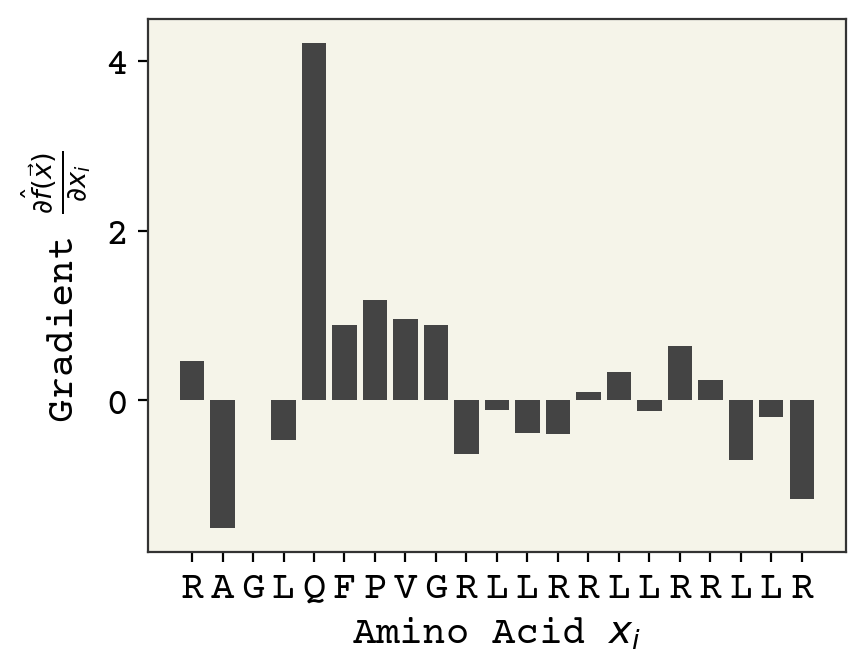
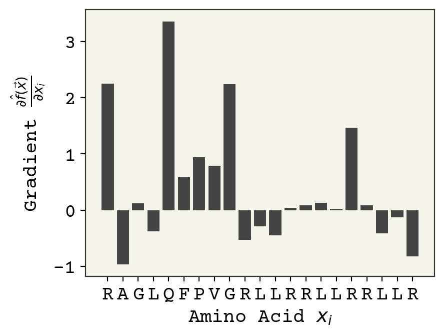
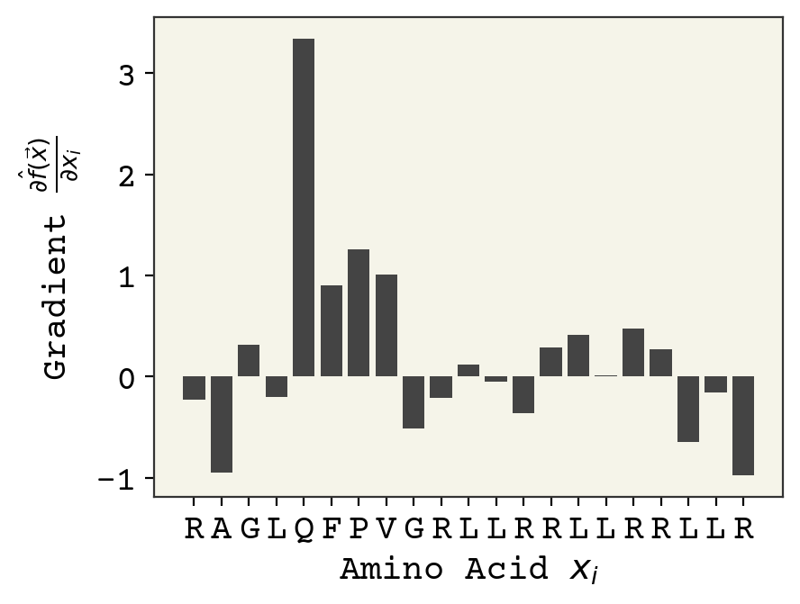
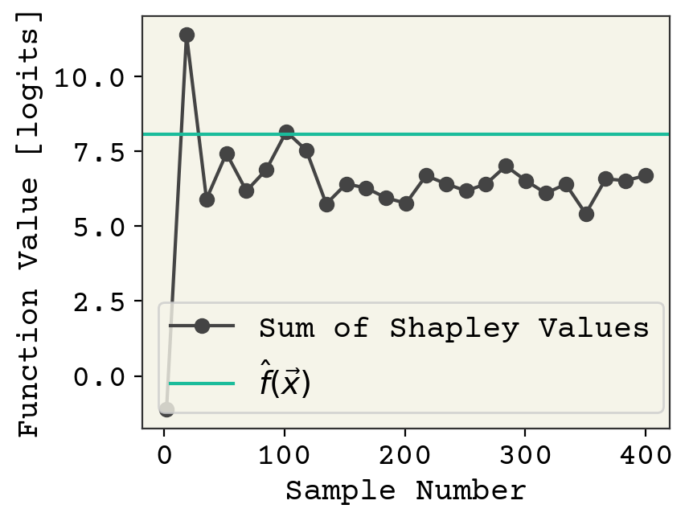
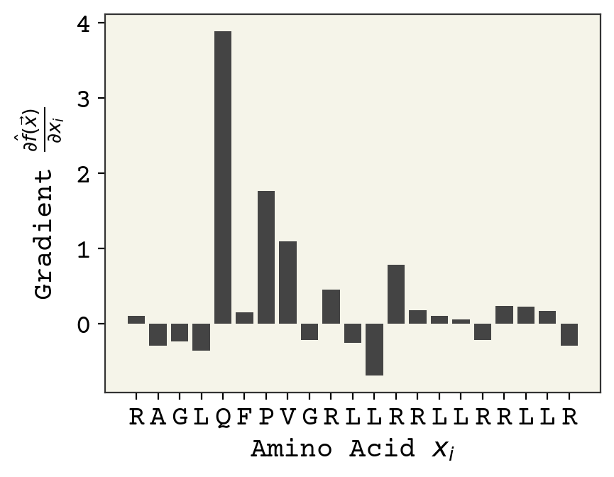
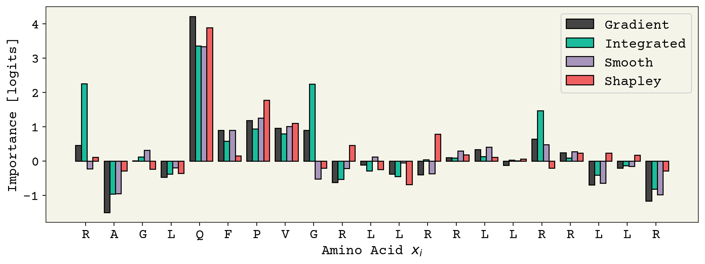

<!DOCTYPE html>

<html>
  <head>
    <meta charset="utf-8" />
    <meta name="viewport" content="width=device-width, initial-scale=1.0" /><meta name="generator" content="Docutils 0.17.1: http://docutils.sourceforge.net/" />
<meta content="Deep Learning for Molecules &amp; Materials Book" lang="en" name="description" xml:lang="en" />
<meta content="en_US" property="og:locale" />
<meta content="summary" name="twitter:card" />
<meta content="Deep Learning for Molecules &amp; Materials Book" name="twitter:description" />
<meta content="dmol.pub 📖" name="twitter:title" />
<meta content="https://dmol.pub/_static/logo.png" name="twitter:image" />
<meta content="&#64;andrewwhite01" name="twitter:site" />

    <title>12. 予測を説明する &#8212; deep learning for molecules &amp; materials</title>
    
  <link href="../_static/css/theme.css" rel="stylesheet">
  <link href="../_static/css/index.ff1ffe594081f20da1ef19478df9384b.css" rel="stylesheet">

    
  <link rel="stylesheet"
    href="../_static/vendor/fontawesome/5.13.0/css/all.min.css">
  <link rel="preload" as="font" type="font/woff2" crossorigin
    href="../_static/vendor/fontawesome/5.13.0/webfonts/fa-solid-900.woff2">
  <link rel="preload" as="font" type="font/woff2" crossorigin
    href="../_static/vendor/fontawesome/5.13.0/webfonts/fa-brands-400.woff2">

    
      

    
    <link rel="stylesheet" type="text/css" href="../_static/pygments.css" />
    <link rel="stylesheet" type="text/css" href="../_static/sphinx-book-theme.css?digest=c3fdc42140077d1ad13ad2f1588a4309" />
    <link rel="stylesheet" type="text/css" href="../_static/togglebutton.css" />
    <link rel="stylesheet" type="text/css" href="../_static/copybutton.css" />
    <link rel="stylesheet" type="text/css" href="../_static/mystnb.css" />
    <link rel="stylesheet" type="text/css" href="../_static/sphinx-thebe.css" />
    <link rel="stylesheet" type="text/css" href="../_static/custom.css" />
    <link rel="stylesheet" type="text/css" href="../_static/a11y.css" />
    <link rel="stylesheet" type="text/css" href="../_static/panels-main.c949a650a448cc0ae9fd3441c0e17fb0.css" />
    <link rel="stylesheet" type="text/css" href="../_static/panels-variables.06eb56fa6e07937060861dad626602ad.css" />
    
  <link rel="preload" as="script" href="../_static/js/index.be7d3bbb2ef33a8344ce.js">

    <script data-url_root="../" id="documentation_options" src="../_static/documentation_options.js"></script>
    <script src="../_static/jquery.js"></script>
    <script src="../_static/underscore.js"></script>
    <script src="../_static/doctools.js"></script>
    <script src="../_static/clipboard.min.js"></script>
    <script src="../_static/copybutton.js"></script>
    <script>let toggleHintShow = 'Click to show';</script>
    <script>let toggleHintHide = 'Click to hide';</script>
    <script>let toggleOpenOnPrint = 'true';</script>
    <script src="../_static/togglebutton.js"></script>
    <script src="../_static/custom.js"></script>
    <script>var togglebuttonSelector = '.toggle, .admonition.dropdown, .tag_hide_input div.cell_input, .tag_hide-input div.cell_input, .tag_hide_output div.cell_output, .tag_hide-output div.cell_output, .tag_hide_cell.cell, .tag_hide-cell.cell';</script>
    <script src="../_static/sphinx-book-theme.d59cb220de22ca1c485ebbdc042f0030.js"></script>
    <script>const THEBE_JS_URL = "https://unpkg.com/thebe@0.8.2/lib/index.js"
const thebe_selector = ".thebe,.cell"
const thebe_selector_input = "pre"
const thebe_selector_output = ".output, .cell_output"
</script>
    <script async="async" src="../_static/sphinx-thebe.js"></script>
    <script>window.MathJax = {"options": {"processHtmlClass": "tex2jax_process|mathjax_process|math|output_area"}}</script>
    <script defer="defer" src="https://cdn.jsdelivr.net/npm/mathjax@3/es5/tex-mml-chtml.js"></script>
    <link rel="canonical" href="https://resnant.github.io/dmol-book-japanese/dl/xai.html" />
    <link rel="shortcut icon" href="../_static/favicon.png"/>
    <link rel="index" title="Index" href="../genindex.html" />
    <link rel="search" title="Search" href="../search.html" />
    <link rel="next" title="13. アテンションレイヤー" href="attention.html" />
    <link rel="prev" title="11. Modern Molecular NNs" href="molnets.html" />
    <meta name="viewport" content="width=device-width, initial-scale=1" />
    <meta name="docsearch:language" content="None">
    

    <!-- Google Analytics -->
    
  </head>
  <body data-spy="scroll" data-target="#bd-toc-nav" data-offset="80">
    
    <div class="container-fluid" id="banner"></div>

    

    <div class="container-xl">
      <div class="row">
          
<div class="col-12 col-md-3 bd-sidebar site-navigation show" id="site-navigation">
    
        <div class="navbar-brand-box">
    <a class="navbar-brand text-wrap" href="../index.html">
      
        <!-- `logo` is deprecated in Sphinx 4.0, so remove this when we stop supporting 3 -->
        
      
      
      
      
      
      <h1 class="site-logo" id="site-title">deep learning for molecules & materials</h1>
      
    </a>
</div><form class="bd-search d-flex align-items-center" action="../search.html" method="get">
  <i class="icon fas fa-search"></i>
  <input type="search" class="form-control" name="q" id="search-input" placeholder="Search this book..." aria-label="Search this book..." autocomplete="off" >
</form><nav class="bd-links" id="bd-docs-nav" aria-label="Main">
    <div class="bd-toc-item active">
        <ul class="nav bd-sidenav">
 <li class="toctree-l1">
  <a class="reference internal" href="../index.html">
   この本の概要
  </a>
 </li>
</ul>
<p aria-level="2" class="caption" role="heading">
 <span class="caption-text">
  A. Math Review
 </span>
</p>
<ul class="nav bd-sidenav">
 <li class="toctree-l1">
  <a class="reference internal" href="../math/tensors-and-shapes.html">
   1. Tensors and Shapes
  </a>
 </li>
</ul>
<p aria-level="2" class="caption" role="heading">
 <span class="caption-text">
  B. Machine Learning
 </span>
</p>
<ul class="nav bd-sidenav">
 <li class="toctree-l1">
  <a class="reference internal" href="../ml/introduction.html">
   2. 機械学習入門
  </a>
 </li>
 <li class="toctree-l1">
  <a class="reference internal" href="../ml/regression.html">
   3. Regression &amp; Model Assessment
  </a>
 </li>
 <li class="toctree-l1">
  <a class="reference internal" href="../ml/classification.html">
   4. Classification
  </a>
 </li>
 <li class="toctree-l1">
  <a class="reference internal" href="../ml/kernel.html">
   5. カーネル学習
  </a>
 </li>
</ul>
<p aria-level="2" class="caption" role="heading">
 <span class="caption-text">
  C. Deep Learning
 </span>
</p>
<ul class="current nav bd-sidenav">
 <li class="toctree-l1">
  <a class="reference internal" href="introduction.html">
   6. ディープラーニングの概要
  </a>
 </li>
 <li class="toctree-l1">
  <a class="reference internal" href="layers.html">
   7. Standard Layers
  </a>
 </li>
 <li class="toctree-l1">
  <a class="reference internal" href="gnn.html">
   8. Graph Neural Networks
  </a>
 </li>
 <li class="toctree-l1">
  <a class="reference internal" href="data.html">
   9. Input Data &amp; Equivariances
  </a>
 </li>
 <li class="toctree-l1">
  <a class="reference internal" href="Equivariant.html">
   10. Equivariant Neural Networks
  </a>
 </li>
 <li class="toctree-l1">
  <a class="reference internal" href="molnets.html">
   11. Modern Molecular NNs
  </a>
 </li>
 <li class="toctree-l1 current active">
  <a class="current reference internal" href="#">
   12. 予測を説明する
  </a>
 </li>
 <li class="toctree-l1">
  <a class="reference internal" href="attention.html">
   13. アテンションレイヤー
  </a>
 </li>
 <li class="toctree-l1">
  <a class="reference internal" href="NLP.html">
   15. Deep Learning on Sequences
  </a>
 </li>
 <li class="toctree-l1">
  <a class="reference internal" href="VAE.html">
   16. Variational Autoencoder
  </a>
 </li>
 <li class="toctree-l1">
  <a class="reference internal" href="flows.html">
   17. Normalizing Flows
  </a>
 </li>
</ul>
<p aria-level="2" class="caption" role="heading">
 <span class="caption-text">
  D. Applications
 </span>
</p>
<ul class="nav bd-sidenav">
 <li class="toctree-l1">
  <a class="reference internal" href="../applied/QM9.html">
   18. GNNによるDFTエネルギーの予測
  </a>
 </li>
 <li class="toctree-l1">
  <a class="reference internal" href="../applied/MolGenerator.html">
   19. Generative RNN in Browser
  </a>
 </li>
</ul>
<p aria-level="2" class="caption" role="heading">
 <span class="caption-text">
  E. Contributed Chapters
 </span>
</p>
<ul class="nav bd-sidenav">
 <li class="toctree-l1">
  <a class="reference internal" href="Hyperparameter_tuning.html">
   20. Hyperparameter Tuning
  </a>
 </li>
</ul>
<p aria-level="2" class="caption" role="heading">
 <span class="caption-text">
  F. Appendix
 </span>
</p>
<ul class="nav bd-sidenav">
 <li class="toctree-l1">
  <a class="reference internal" href="../style.html">
   21. Style Guide
  </a>
 </li>
 <li class="toctree-l1">
  <a class="reference internal" href="../changelog.html">
   22. Changelog
  </a>
 </li>
</ul>

    </div>
</nav> <!-- To handle the deprecated key -->

<div class="navbar_extra_footer">
  <script async defer src="https://api.dmol.pub/latest.js"></script><noscript></noscript> By <a href="https://twitter.com/andrewwhite01">Andrew White</a>
</div>

</div>


          


          
<main class="col py-md-3 pl-md-4 bd-content overflow-auto" role="main">
    
    <div class="topbar container-xl fixed-top">
    <div class="topbar-contents row">
        <div class="col-12 col-md-3 bd-topbar-whitespace site-navigation show"></div>
        <div class="col pl-md-4 topbar-main">
            
            <button id="navbar-toggler" class="navbar-toggler ml-0" type="button" data-toggle="collapse"
                data-toggle="tooltip" data-placement="bottom" data-target=".site-navigation" aria-controls="navbar-menu"
                aria-expanded="true" aria-label="Toggle navigation" aria-controls="site-navigation"
                title="Toggle navigation" data-toggle="tooltip" data-placement="left">
                <i class="fas fa-bars"></i>
                <i class="fas fa-arrow-left"></i>
                <i class="fas fa-arrow-up"></i>
            </button>
            
            
<div class="dropdown-buttons-trigger">
    <button id="dropdown-buttons-trigger" class="btn btn-secondary topbarbtn" aria-label="Download this page"><i
            class="fas fa-download"></i></button>

    <div class="dropdown-buttons">
        <!-- ipynb file if we had a myst markdown file -->
        
        <!-- Download raw file -->
        <a class="dropdown-buttons" href="../_sources/dl/xai.ipynb"><button type="button"
                class="btn btn-secondary topbarbtn" title="Download source file" data-toggle="tooltip"
                data-placement="left">.ipynb</button></a>
        <!-- Download PDF via print -->
        <button type="button" id="download-print" class="btn btn-secondary topbarbtn" title="Print to PDF"
                onclick="printPdf(this)" data-toggle="tooltip" data-placement="left">.pdf</button>
    </div>
</div>

            <!-- Source interaction buttons -->

<div class="dropdown-buttons-trigger">
    <button id="dropdown-buttons-trigger" class="btn btn-secondary topbarbtn"
        aria-label="Connect with source repository"><i class="fab fa-github"></i></button>
    <div class="dropdown-buttons sourcebuttons">
        <a class="repository-button"
            href="https://github.com/resnant/dmol-book-japanese/"><button type="button" class="btn btn-secondary topbarbtn"
                data-toggle="tooltip" data-placement="left" title="Source repository"><i
                    class="fab fa-github"></i>repository</button></a>
        <a class="issues-button"
            href="https://github.com/resnant/dmol-book-japanese//issues/new?title=Issue%20on%20page%20%2Fdl/xai.html&body=Your%20issue%20content%20here."><button
                type="button" class="btn btn-secondary topbarbtn" data-toggle="tooltip" data-placement="left"
                title="Open an issue"><i class="fas fa-lightbulb"></i>open issue</button></a>
        
    </div>
</div>

            <!-- Full screen (wrap in <a> to have style consistency -->

<a class="full-screen-button"><button type="button" class="btn btn-secondary topbarbtn" data-toggle="tooltip"
        data-placement="bottom" onclick="toggleFullScreen()" aria-label="Fullscreen mode"
        title="Fullscreen mode"><i
            class="fas fa-expand"></i></button></a>

            <!-- Launch buttons -->

<div class="dropdown-buttons-trigger">
    <button id="dropdown-buttons-trigger" class="btn btn-secondary topbarbtn"
        aria-label="Launch interactive content"><i class="fas fa-rocket"></i></button>
    <div class="dropdown-buttons">
        
        
        
        <a class="colab-button" href="https://colab.research.google.com/github/resnant/dmol-book-japanese/blob/master/dl/xai.ipynb"><button type="button" class="btn btn-secondary topbarbtn"
                title="Launch Colab" data-toggle="tooltip" data-placement="left">Colab</button></a>
        
        
    </div>
</div>

        </div>

        <!-- Table of contents -->
        <div class="d-none d-md-block col-md-2 bd-toc show noprint">
            
            <div class="tocsection onthispage pt-5 pb-3">
                <i class="fas fa-list"></i> Contents
            </div>
            <nav id="bd-toc-nav" aria-label="Page">
                <ul class="visible nav section-nav flex-column">
 <li class="toc-h2 nav-item toc-entry">
  <a class="reference internal nav-link" href="#id7">
   12.1. 説明とは何か
  </a>
 </li>
 <li class="toc-h2 nav-item toc-entry">
  <a class="reference internal nav-link" href="#id19">
   12.2. 特徴量重要度
  </a>
  <ul class="nav section-nav flex-column">
   <li class="toc-h3 nav-item toc-entry">
    <a class="reference internal nav-link" href="#id20">
     12.2.1. ニューラルネットワークの特徴量重要度
    </a>
   </li>
   <li class="toc-h3 nav-item toc-entry">
    <a class="reference internal nav-link" href="#id27">
     12.2.2. シャープレイ値
    </a>
   </li>
  </ul>
 </li>
 <li class="toc-h2 nav-item toc-entry">
  <a class="reference internal nav-link" href="#notebook">
   12.3. Notebookの実行
  </a>
 </li>
 <li class="toc-h2 nav-item toc-entry">
  <a class="reference internal nav-link" href="#id31">
   12.4. 特徴量重要度の例
  </a>
  <ul class="nav section-nav flex-column">
   <li class="toc-h3 nav-item toc-entry">
    <a class="reference internal nav-link" href="#id33">
     12.4.1. 勾配
    </a>
   </li>
   <li class="toc-h3 nav-item toc-entry">
    <a class="reference internal nav-link" href="#integrated-gradients">
     12.4.2. Integrated Gradients
    </a>
   </li>
   <li class="toc-h3 nav-item toc-entry">
    <a class="reference internal nav-link" href="#smoothgrad">
     12.4.3. SmoothGrad
    </a>
   </li>
   <li class="toc-h3 nav-item toc-entry">
    <a class="reference internal nav-link" href="#id35">
     12.4.4. シャープレイ値
    </a>
   </li>
  </ul>
 </li>
 <li class="toc-h2 nav-item toc-entry">
  <a class="reference internal nav-link" href="#id37">
   12.5. 特徴量重要度は何のためにあるのか？
  </a>
 </li>
 <li class="toc-h2 nav-item toc-entry">
  <a class="reference internal nav-link" href="#id41">
   12.6. 学習データの重要度
  </a>
 </li>
 <li class="toc-h2 nav-item toc-entry">
  <a class="reference internal nav-link" href="#id43">
   12.7. サロゲートモデル
  </a>
 </li>
 <li class="toc-h2 nav-item toc-entry">
  <a class="reference internal nav-link" href="#id46">
   12.8. 反実仮想
  </a>
  <ul class="nav section-nav flex-column">
   <li class="toc-h3 nav-item toc-entry">
    <a class="reference internal nav-link" href="#id51">
     12.8.1. 例
    </a>
   </li>
  </ul>
 </li>
 <li class="toc-h2 nav-item toc-entry">
  <a class="reference internal nav-link" href="#id52">
   12.9. 特定のアーキテクチャの説明
  </a>
 </li>
 <li class="toc-h2 nav-item toc-entry">
  <a class="reference internal nav-link" href="#id56">
   12.10. モデル非依存的な分子の反実仮想の説明
  </a>
 </li>
 <li class="toc-h2 nav-item toc-entry">
  <a class="reference internal nav-link" href="#id59">
   12.11. Notebookの実行
  </a>
 </li>
 <li class="toc-h2 nav-item toc-entry">
  <a class="reference internal nav-link" href="#id61">
   12.12. まとめ
  </a>
 </li>
 <li class="toc-h2 nav-item toc-entry">
  <a class="reference internal nav-link" href="#cited-references">
   12.13. Cited References
  </a>
 </li>
</ul>

            </nav>
        </div>
    </div>
</div>
    <div id="main-content" class="row">
        <div class="col-12 col-md-9 pl-md-3 pr-md-0">
            <!-- Table of contents that is only displayed when printing the page -->
            <div id="jb-print-docs-body" class="onlyprint">
                <h1>予測を説明する</h1>
                <!-- Table of contents -->
                <div id="print-main-content">
                    <div id="jb-print-toc">
                        
                        <div>
                            <h2> Contents </h2>
                        </div>
                        <nav aria-label="Page">
                            <ul class="visible nav section-nav flex-column">
 <li class="toc-h2 nav-item toc-entry">
  <a class="reference internal nav-link" href="#id7">
   12.1. 説明とは何か
  </a>
 </li>
 <li class="toc-h2 nav-item toc-entry">
  <a class="reference internal nav-link" href="#id19">
   12.2. 特徴量重要度
  </a>
  <ul class="nav section-nav flex-column">
   <li class="toc-h3 nav-item toc-entry">
    <a class="reference internal nav-link" href="#id20">
     12.2.1. ニューラルネットワークの特徴量重要度
    </a>
   </li>
   <li class="toc-h3 nav-item toc-entry">
    <a class="reference internal nav-link" href="#id27">
     12.2.2. シャープレイ値
    </a>
   </li>
  </ul>
 </li>
 <li class="toc-h2 nav-item toc-entry">
  <a class="reference internal nav-link" href="#notebook">
   12.3. Notebookの実行
  </a>
 </li>
 <li class="toc-h2 nav-item toc-entry">
  <a class="reference internal nav-link" href="#id31">
   12.4. 特徴量重要度の例
  </a>
  <ul class="nav section-nav flex-column">
   <li class="toc-h3 nav-item toc-entry">
    <a class="reference internal nav-link" href="#id33">
     12.4.1. 勾配
    </a>
   </li>
   <li class="toc-h3 nav-item toc-entry">
    <a class="reference internal nav-link" href="#integrated-gradients">
     12.4.2. Integrated Gradients
    </a>
   </li>
   <li class="toc-h3 nav-item toc-entry">
    <a class="reference internal nav-link" href="#smoothgrad">
     12.4.3. SmoothGrad
    </a>
   </li>
   <li class="toc-h3 nav-item toc-entry">
    <a class="reference internal nav-link" href="#id35">
     12.4.4. シャープレイ値
    </a>
   </li>
  </ul>
 </li>
 <li class="toc-h2 nav-item toc-entry">
  <a class="reference internal nav-link" href="#id37">
   12.5. 特徴量重要度は何のためにあるのか？
  </a>
 </li>
 <li class="toc-h2 nav-item toc-entry">
  <a class="reference internal nav-link" href="#id41">
   12.6. 学習データの重要度
  </a>
 </li>
 <li class="toc-h2 nav-item toc-entry">
  <a class="reference internal nav-link" href="#id43">
   12.7. サロゲートモデル
  </a>
 </li>
 <li class="toc-h2 nav-item toc-entry">
  <a class="reference internal nav-link" href="#id46">
   12.8. 反実仮想
  </a>
  <ul class="nav section-nav flex-column">
   <li class="toc-h3 nav-item toc-entry">
    <a class="reference internal nav-link" href="#id51">
     12.8.1. 例
    </a>
   </li>
  </ul>
 </li>
 <li class="toc-h2 nav-item toc-entry">
  <a class="reference internal nav-link" href="#id52">
   12.9. 特定のアーキテクチャの説明
  </a>
 </li>
 <li class="toc-h2 nav-item toc-entry">
  <a class="reference internal nav-link" href="#id56">
   12.10. モデル非依存的な分子の反実仮想の説明
  </a>
 </li>
 <li class="toc-h2 nav-item toc-entry">
  <a class="reference internal nav-link" href="#id59">
   12.11. Notebookの実行
  </a>
 </li>
 <li class="toc-h2 nav-item toc-entry">
  <a class="reference internal nav-link" href="#id61">
   12.12. まとめ
  </a>
 </li>
 <li class="toc-h2 nav-item toc-entry">
  <a class="reference internal nav-link" href="#cited-references">
   12.13. Cited References
  </a>
 </li>
</ul>

                        </nav>
                    </div>
                </div>
            </div>
            
              <div>
                
  <section class="tex2jax_ignore mathjax_ignore" id="id1">
<h1><span class="section-number">12. </span>予測を説明する<a class="headerlink" href="#id1" title="Permalink to this headline">¶</a></h1>
<p>ニューラルネットワークの予測は一般に解釈可能ではありません。この章ではその予測を説明する方法を探ります。これは説明可能なAI（XAI）という広範なトピックの一部であり、なぜ特定の予測がなされるのかを理解するにの役立つはずです。モデルの予測を理解できるようになれば、実用的、理論的、かつ規制の観点で正当化することにつながります。そのため重要なトピックとなっています。またその根拠を理解できれば、モデルの予測を利用する可能性が高くなることが示されており<span id="id2">[<a class="reference internal" href="#id190" title="John D Lee and Katrina A See. Trust in automation: designing for appropriate reliance. Human factors, 46(1):50–80, 2004.">LS04</a>]</span>、確かに実用的です。もう一つの実用的な関心事は、モデルがどのようにその予測に至ったのかを理解できれば、方法を正確に実装することがはるかに容易になるということです。透明性の理論的な正当性は、モデルドメインの不完全性（すなわち、共変量シフト）<span id="id3">[<a class="reference internal" href="#id189" title="Finale Doshi-Velez and Been Kim. Towards a rigorous science of interpretable machine learning. arXiv preprint arXiv:1702.08608, 2017.">DVK17</a>]</span>を識別するのに役立ちます。最近、欧州連合<span id="id4">[<a class="reference internal" href="#id198" title="Bryce Goodman and Seth Flaxman. European Union regulations on algorithmic decision-making and a “right to explanation”. AI Magazine, 38(3):50–57, 2017.">GF17</a>]</span>とG20<span id="id5">[<a class="reference internal" href="#id199" title="Organisation for Economic Co-operation and Development. Recommendation of the Council on Artificial Intelligence. 2019. URL: https://legalinstruments.oecd.org/en/instruments/OECD-LEGAL-0449.">Dev19</a>]</span>は、機械予測に関する説明を推奨または要求するガイドラインを採択しました。そのため、これは現在、コンプライアンスの問題になってきています。欧州連合はさらに踏み込んで、より<a class="reference external" href="https://digital-strategy.ec.europa.eu/en/library/proposal-regulation-laying-down-harmonised-rules-artificial-intelligence-artificial-intelligence">厳しい法律案</a>を検討しています。</p>
<div class="admonition- admonition">
<p class="admonition-title">読者層と目的</p>
<p>この章は<a class="reference internal" href="layers.html"><span class="doc">Standard Layers</span></a>と<a class="reference internal" href="NLP.html"><span class="doc">Deep Learning on Sequences</span></a>に基づいています。また、条件付き確率を含む確率論に関する十分な知識があることを前提としています。そうでない場合は、<a class="reference external" href="https://raw.githubusercontent.com/whitead/numerical_stats/master/unit_2/lectures/lecture_3.pdf">私のノート</a>や入門的な確率のテキストを読んで概要を理解することをお勧めします。この章を読むと、以下のことができるようになると想定されます。</p>
<ul class="simple">
<li><p>なぜ説明が重要かを正当化できる</p></li>
<li><p>正当化、解釈、説明の区別ができる</p></li>
<li><p>特徴量重要度とシャープレイ値を計算できる</p></li>
<li><p>反実仮想を定義し、それを計算できる</p></li>
<li><p>どのモデルが解釈可能で、どのように解釈可能なサロゲートモデルを適合させるかを理解する</p></li>
</ul>
</div>
<p>説明可能なAIの必要性に関する有名な例として、肺炎でERに運ばれた患者の死亡リスクを評価するML予測器を構築したCaruanaらの<span id="id6">[<a class="reference internal" href="#id191" title="Rich Caruana, Yin Lou, Johannes Gehrke, Paul Koch, Marc Sturm, and Noemie Elhadad. Intelligible models for healthcare: Predicting pneumonia risk and hospital 30-day readmission. In Proceedings of the 21th ACM SIGKDD International Conference on Knowledge Discovery and Data Mining, 1721–1730. ACM, 2015.">CLG+15</a>]</span>が挙げられます。この論文のアイデアは、肺炎の患者をこのツールでスクリーニングすれば、医師がどの患者がより死亡リスクが高いかを知るのに役立つというものでした。そのモデルはかなり正確でしたが、その予測の解釈を調べたところ、医学的におかしな推論がなされていました。驚くべきことに、そのモデルは喘息持ちの患者（喘息患者という）が肺炎でERに来院した場合、死亡リスクが低下することを示唆していました。喘息というのは呼吸が困難になる病気であるにも関わらず、<em>肺炎患者の死亡率が低くなる</em>ということがわかったのです。</p>
<p>この結果は偶発的なものでした。喘息は実際には肺炎での死亡リスクが高いのですが、医師はそのことを実感しているため、彼らに対してより積極的で丁寧な対応をしていたのです。すなわち、喘息患者に対して医師がより丁寧なケアと配慮をしていたため、死亡者数が少なくなっていたのです。経験則から言えば、モデルの予測は正しいです。しかし、もしこのモデルが実用化されれば、喘息患者を死亡リスクが低いと誤って判断し、喘息患者は本来受けられたはずのケアを受けられずに命を落とす可能性がありました。幸いにも研究者はモデルの解釈可能性によってこの問題を特定し、喘息患者を命の危険にさらすリスクを回避することができました。このように、解釈は常に予測モデルを構築する際に考慮すべきステップであることがわかります。</p>
<section id="id7">
<h2><span class="section-number">12.1. </span>説明とは何か<a class="headerlink" href="#id7" title="Permalink to this headline">¶</a></h2>
<p>ここでは、Miller<span id="id8">[<a class="reference internal" href="#id216" title="Tim Miller. Explanation in artificial intelligence: insights from the social sciences. Artificial intelligence, 267:1–38, 2019.">Mil19</a>]</span>の説明の定義を使います。Millerは、解釈可能性、正当化、説明を以下の定義で区別しています。</p>
<ul class="simple">
<li><p><strong>解釈可能性</strong>：観察者が判断の原因を理解できる度合いを指します。Millerはこれを説明可能性と同義とみなしました。<em>これは一般的にモデルの特性です。</em></p></li>
<li><p><strong>正当化</strong>：モデルのテストエラーや正確度のように、なぜその決定が良いのかについての証拠や説明です。<em>これはモデルの特性です。</em></p></li>
<li><p><strong>説明</strong>：結果の文脈と原因を与える、人間を対象とした情報の提示です。これらが本章の主要な論点です。<em>これは一般的にモデルの特性ではなく、新たに生成する追加的な情報です。</em></p></li>
</ul>
<p><em>説明</em>の構成要素について詳しく説明しますが、説明は予測を正当化することとは異なることに注意してください。正当化とは既に見たように、モデルの予測が正確であると信じるべき理由についての経験的な証拠です。一方、説明とは予測の<em>原因</em>を明らかにすることであり、最終的に人に理解されることを目的としています。</p>
<p>ディープラーニングはそれだけではブラックボックス的なモデリング手法です。解釈可能性も説明可能性もありません。重みやモデル式を調べても、なぜその予測がなされるのかについての洞察はほとんど得られません。解釈可能性はディープラーニングに対する追加的なタスクであり、モデルの予測に説明を加えることを意味します。しかしこれは難しい問題です。ディープラーニングのブラックボックス的な性質に加えて、モデルの予測に対する説明とは何かについてのコンセンサスが取れていないためです<span id="id9">[<a class="reference internal" href="#id189" title="Finale Doshi-Velez and Been Kim. Towards a rigorous science of interpretable machine learning. arXiv preprint arXiv:1702.08608, 2017.">DVK17</a>]</span>。ある人は解釈可能性に各予測を正当化する自然言語の説明を期待しますが、ある人はどの特徴が予測に最も貢献したかを示すだけで十分と考えます。</p>
<p>MLモデルの解釈には2つのアプローチがあります。説明による事後解釈と自己説明型モデル<span id="id10">[<a class="reference internal" href="#id192" title="James W Murdoch, Chandan Singh, Karl Kumbier, Reza Abbasi-Asl, and Bin Yu. Interpretable machine learning: definitions, methods, and applications. eprint arXiv, pages 1–11, 2019. URL: http://arxiv.org/abs/1901.04592.">MSK+19</a>]</span>です。自己説明型モデルは，専門家がモデルの出力を見て，論理的に特徴量と結びつけることができるように構築されており、本質的に解釈可能です。ただしタスクモデルに強く依存します<span id="id11">[<a class="reference internal" href="#id193" title="Grégoire Montavon, Wojciech Samek, and Klaus-Robert Müller. Methods for interpreting and understanding deep neural networks. Digital Signal Processing, 73:1–15, 2018.">MSMuller18</a>]</span>。身近な例では、分子動力学や一点量子エネルギー計算のような物理学に基づくシミュレーションがあります。分子動力学の軌跡を調べ、出力された数値を見て、例えば薬物分子がタンパク質に結合すると予測する理由を説明することができます。</p>
<p>自己説明型モデルはディープラーニングの解釈には役に立たない/関連付かないように思えるかもしれません。しかし、後の節で、自己説明型の<strong>サロゲートモデル</strong> (または<strong>プロキシモデル</strong>）を作り、ディープラーニングモデルと一致するように訓練すればよいことがわかるでしょう。最初からサロゲートモデルを使わずにディープラーニングモデルを介するのは訓練コストを減らせるからですが、それはなぜでしょうか。学習済みニューラルネットワークは任意の点をラベル付けできる、すなわち学習データを無限に生成することができるからです。サロゲートモデルの他に、Attention機構<span id="id12">[<a class="reference internal" href="#id203" title="Dzmitry Bahdanau, Kyunghyun Cho, and Yoshua Bengio. Neural machine translation by jointly learning to align and translate. arXiv preprint arXiv:1409.0473, 2014.">BCB14</a>]</span>のように自己説明的な特徴を内包したディープラーニングモデルを構築することもできます。Attention機構に基づいて入力特徴量と予測値を結びつけることができます。また機械学習には<strong>シンボリック回帰</strong>というものがあり、直接解釈できる数式を扱うことで自己説明的なモデルを構築しようとします<span id="id13">[<a class="reference internal" href="#id232" title="Mehrad Ansari, Heta A Gandhi, David G Foster, and Andrew D White. Iterative symbolic regression for learning transport equations. arXiv preprint arXiv:2108.03293, 2021.">AGFW21</a>, <a class="reference internal" href="#id233" title="Lynne Billard and Edwin Diday. Regression analysis for interval-valued data. In Data analysis, classification, and related methods, pages 369–374. Springer, 2000.">BD00</a>, <a class="reference internal" href="#id234" title="Silviu-Marian Udrescu and Max Tegmark. Ai feynman: a physics-inspired method for symbolic regression. Science Advances, 6(16):eaay2631, 2020.">UT20</a>]</span>。その特性から、シンボリック回帰はサロゲートモデルを生成するために用いられます<span id="id14">[<a class="reference internal" href="#id235" title="Miles Cranmer, Alvaro Sanchez Gonzalez, Peter Battaglia, Rui Xu, Kyle Cranmer, David Spergel, and Shirley Ho. Discovering symbolic models from deep learning with inductive biases. Advances in Neural Information Processing Systems, 33:17429–17442, 2020.">CSGB+20</a>]</span>。</p>
<p>説明による事後解釈には様々なアプローチがあります。代表的なものは学習データの重要度、特徴量重要度、反実仮想的な説明<span id="id15">[<a class="reference internal" href="#id215" title="Geemi P Wellawatte, Aditi Seshadri, and Andrew D White. Model agnostic generation of counterfactual explanations for molecules. Chem. Sci., pages -, 2022. URL: http://dx.doi.org/10.1039/D1SC05259D, doi:10.1039/D1SC05259D.">WSW22</a>, <a class="reference internal" href="#id194" title="Marco Tulio Ribeiro, Sameer Singh, and Carlos Guestrin. &quot; why should i trust you?&quot; explaining the predictions of any classifier. In Proceedings of the 22nd ACM SIGKDD international conference on knowledge discovery and data mining, 1135–1144. 2016.">RSG16a</a>, <a class="reference internal" href="#id195" title="Marco Tulio Ribeiro, Sameer Singh, and Carlos Guestrin. Model-agnostic interpretability of machine learning. arXiv preprint arXiv:1606.05386, 2016.">RSG16b</a>, <a class="reference internal" href="#id197" title="Sandra Wachter, Brent Mittelstadt, and Chris Russell. Counterfactual explanations without opening the black box: automated decisions and the gdpr. Harv. JL &amp; Tech., 31:841, 2017.">WMR17</a>]</span>です。データの重要度に基づく事後解釈の例は、予測を説明する最も影響力のある学習データを特定することです<span id="id16">[<a class="reference internal" href="#id196" title="Pang Wei Koh and Percy Liang. Understanding black-box predictions via influence functions. In International Conference on Machine Learning, 1885–1894. PMLR, 2017.">KL17</a>]</span>。それによって<em>説明</em>がつくかどうかは議論の余地がありますが、どのデータが予測に関連しているかを理解するのに役立つことは確かです。特徴量重要度はおそらく最も一般的なXAIアプローチで、コンピュータビジョンの研究に頻繁に登場し、例えば画像の分類にとって最も重要なピクセルをハイライトします。</p>
<p>反実仮想的な説明は事後解釈の新しい方法です。反実仮想は説明として機能する新しいデータ点です。反実仮想は、その特徴量がどれほど重要で敏感であるかについての洞察を与えます。例として融資を勧めるモデルがあるとします。そのモデルは以下の反実仮想的な説明を生成することができます（<span id="id17">[<a class="reference internal" href="#id197" title="Sandra Wachter, Brent Mittelstadt, and Chris Russell. Counterfactual explanations without opening the black box: automated decisions and the gdpr. Harv. JL &amp; Tech., 31:841, 2017.">WMR17</a>]</span>より）。</p>
<blockquote>
<div><p>あなたは、年収、郵便番号、資産に基づいてローンを拒否されました。もし、あなたの年収が45,000ドルであれば、あなたはローンを提供されたでしょう。</p>
</div></blockquote>
<p>2番目の文が反実仮想であり、特徴量をどのように変えればモデルの結果に影響を与えるかを示しています。反実仮想は複雑さと説明力を良いバランスで提供します。</p>
<p>以上が広範なXAI分野に関する概観でした。解釈可能なディープラーニングについての最近のレビューはSamekらの<span id="id18">[<a class="reference internal" href="#id201" title="Wojciech Samek, Grégoire Montavon, Sebastian Lapuschkin, Christopher J. Anders, and Klaus-Robert Müller. Explaining deep neural networks and beyond: a review of methods and applications. Proceedings of the IEEE, 109(3):247–278, 2021. doi:10.1109/JPROC.2021.3060483.">SML+21</a>]</span>を見てください。またディープラーニングを含む解釈可能な機械学習に関する網羅的な情報はChristopher Molnarが<a class="reference external" href="https://christophm.github.io/interpretable-ml-book/">オンラインブック</a>で公開しています。予測誤差や予測の信頼性は正当化の意味合いが強いのでここでは扱いませんが、<a class="reference internal" href="../ml/regression.html"><span class="doc">Regression &amp; Model Assessment</span></a>の手法が適用できるので参照してください。</p>
</section>
<section id="id19">
<h2><span class="section-number">12.2. </span>特徴量重要度<a class="headerlink" href="#id19" title="Permalink to this headline">¶</a></h2>
<p>特徴量重要度は、機械学習モデルを解釈する上で最もわかりやすく、最も一般的な方法です。特徴量重要度の出力は各特徴量に対するランキングまたは数値であり、通常は単一の予測に対するものです。モデル全体の特徴量重要度は<strong>大域的</strong>特徴量重要度と呼ばれ、単一の予測に対しては<strong>局所的</strong>特徴量重要度と呼ばれます。大域的な特徴量重要度と解釈可能性を持つことは比較的まれです。正確なディープラーニングモデルは特徴空間の位置によって重要な特徴量が変わるためです。</p>
<p>まずは線形モデルで特徴量重要度を見てみましょう。</p>
<div class="amsmath math notranslate nohighlight" id="equation-c8e0172d-c498-43c9-8279-84ac8a350bf5">
<span class="eqno">(12.1)<a class="headerlink" href="#equation-c8e0172d-c498-43c9-8279-84ac8a350bf5" title="Permalink to this equation">¶</a></span>\[\begin{equation}
\hat{y} = \vec{w}\vec{x} + b 
\end{equation}\]</div>
<p>ここで <span class="math notranslate nohighlight">\(\vec{x}\)</span>は特徴量ベクトルです。特徴量重要度を評価する簡単な方法は、特定の特徴量<span class="math notranslate nohighlight">\(x_i\)</span>に関する重み<span class="math notranslate nohighlight">\(w_i\)</span>を単に見ることです。この重み<span class="math notranslate nohighlight">\(w_i\)</span>は、他のすべての特徴が一定で、<span class="math notranslate nohighlight">\(x_i\)</span>が1増加した場合にどの程度変化するかを示しています。もし、特徴量の大きさが同程度であれば、この方法は特徴量の順位付けとして機能するでしょう。しかし、特徴量が単位を持つ場合、単位の選択と特徴量の相対的な大きさに影響されます。例えば、気温が摂氏から華氏に変更された場合、1度上昇した時の影響は小さくなります。</p>
<p>特徴量の大きさや単位の影響を排除して特徴量重要度を評価する少し良い方法は、<span class="math notranslate nohighlight">\(w_i\)</span>を特徴量の<strong>標準偏差</strong>で割ることです。標準偏差とは、予測値の二乗誤差の総和を偏差平方和で割った値です。すなわち標準偏差は予測の正確度と特徴量の分散の比です。標準偏差で割った<span class="math notranslate nohighlight">\(w_i\)</span>はt-分布と比較できるため、<span class="math notranslate nohighlight">\(t\)</span>-統計量と呼ばれます。</p>
<div class="amsmath math notranslate nohighlight" id="equation-0b13872b-2772-47d9-a43a-ff38ce142725">
<span class="eqno">(12.2)<a class="headerlink" href="#equation-0b13872b-2772-47d9-a43a-ff38ce142725" title="Permalink to this equation">¶</a></span>\[\begin{equation}
t_i = \frac{w_i}{S_{w_i}},\; S^2_{w_i} = \frac{1}{N - D}\sum_j \frac{\left(\hat{y}_j - y_j\right)^2}{\left(x_{ij} - \bar{x}_i\right)^2}
\end{equation}\]</div>
<p>ここで、Nは例数、 Dは特徴量数、 <span class="math notranslate nohighlight">\(\bar{x}_i\)</span>はi番目の特徴量の平均値です。<span class="math notranslate nohighlight">\(t_i\)</span>値は、特徴量の順位付けと仮説検定に利用できます。もし<span class="math notranslate nohighlight">\(P(t &gt; t_i) &lt; 0.05\)</span>であれば、その特徴量は統計的に有意で、<span class="math notranslate nohighlight">\(P(t)\)</span>はStudent’s <span class="math notranslate nohighlight">\(t\)</span>-分布です。特徴量の有意性はモデルに存在する他の特徴量に依存することに注意してください。つまり新しい特徴量を追加すると、一部が冗長になる可能性があります。</p>
<p>次に非線形の場合を見てみましょう。非線形学習関数<span class="math notranslate nohighlight">\(\hat{f}(\vec{x})\)</span>では、特徴量が1増加した場合に予測がどのように変化するかを微分近似で計算します。</p>
<div class="math notranslate nohighlight">
\[
\frac{\Delta \hat{f}(\vec{x})}{\Delta x_i} \approx \frac{\partial  \hat{f}(\vec{x})}{\partial x_i}
\]</div>
<p>1だけ変化させると</p>
<div class="amsmath math notranslate nohighlight" id="equation-ed990931-ff83-4abd-b0a9-11175cca5dd2">
<span class="eqno">(12.3)<a class="headerlink" href="#equation-ed990931-ff83-4abd-b0a9-11175cca5dd2" title="Permalink to this equation">¶</a></span>\[\begin{equation}
\Delta \hat{f}(\vec{x}) \approx \frac{\partial  \hat{f}(\vec{x})}{\partial x_i}.
\end{equation}\]</div>
<p>実際にはこの式を少し変形します。0を中心としたテイラー級数を使う代わりに、他のルート（関数が0となる点）を中心にします。そうすることで、決定境界（ルート）で系列を「接地」し、予測されるクラスを決定境界から「遠ざけ」たり「近づけ」たりすることができます。もう1つの方法は、テイラー級数の1次の項を使用して線形モデルを構築するというものです。そして、その線形モデルに上記と同様のことを行い、その係数を特徴量の「重要度」として使用します。具体的には、<span class="math notranslate nohighlight">\(\hat{f}(\vec{x})\)</span>に対して以下のようなサロゲート関数を使用します。</p>
<div class="amsmath math notranslate nohighlight" id="equation-5b6b820a-2ca9-4255-9e7a-2c35d5a3290b">
<span class="eqno">(12.4)<a class="headerlink" href="#equation-5b6b820a-2ca9-4255-9e7a-2c35d5a3290b" title="Permalink to this equation">¶</a></span>\[\begin{equation}
\require{cancel}
\hat{f}(\vec{x}) \approx \cancelto{0}{f(\vec{x}')} +  \nabla\hat{f}(\vec{x}')\cdot\left(\vec{x} - \vec{x}'\right)
\end{equation}\]</div>
<p>ここで、<span class="math notranslate nohighlight">\(\vec{x}'\)</span>は<span class="math notranslate nohighlight">\(\hat{f}(\vec{x})\)</span>のルートです。たいてい自明なルート<span class="math notranslate nohighlight">\(\vec{x}' = \vec{0}\)</span>を選択するかもしれませんが、近傍のルートが理想的です。このルートはしばしば<strong>ベースライン</strong>入力と呼ばれます。上記の線形の例とは対照的に、部分的な<span class="math notranslate nohighlight">\(\frac{\partial  \hat{f}(\vec{x})}{\partial x_i}\)</span>の積とベースラインからの増分<span class="math notranslate nohighlight">\((x_i - x_i')\)</span>を考えます。</p>
<section id="id20">
<h3><span class="section-number">12.2.1. </span>ニューラルネットワークの特徴量重要度<a class="headerlink" href="#id20" title="Permalink to this headline">¶</a></h3>
<p>ニューラルネットワークでは、偏導関数は出力に対する実際の変化を近似するには不十分です。入力に対する小さな変化が不連続な場合（ReLUのような非線形性のため）、ほとんど説明力を持たなくなることがあります。これは<strong>shattered gradients</strong>問題<span id="id21">[<a class="reference internal" href="#id204" title="David Balduzzi, Marcus Frean, Lennox Leary, J. P. Lewis, Kurt Wan-Duo Ma, and Brian McWilliams. The shattered gradients problem: if resnets are the answer, then what is the question? In Doina Precup and Yee Whye Teh, editors, Proceedings of the 34th International Conference on Machine Learning, volume 70 of Proceedings of Machine Learning Research, 342–350. PMLR, 06–11 Aug 2017. URL: http://proceedings.mlr.press/v70/balduzzi17b.html.">BFL+17</a>]</span>と呼ばれています。また個々の特徴量に分けると、特徴量間の相関も欠落してしまいます。これは線形モデルにはない問題です。したがって、微分近似は局所的な線形モデルでは十分に機能しますが、ディープニューラルネットワークでは機能しません。</p>
<p>ニューラルネットワークにおけるshattered gradients問題を回避する方法はいろいろあります。よく使われるのはintegrated gradients <span id="id22">[<a class="reference internal" href="#id206" title="Mukund Sundararajan, Ankur Taly, and Qiqi Yan. Axiomatic attribution for deep networks. In International Conference on Machine Learning, 3319–3328. PMLR, 2017.">STY17</a>]</span> とSmoothGrad<span id="id23">[<a class="reference internal" href="#id207" title="Daniel Smilkov, Nikhil Thorat, Been Kim, Fernanda Viégas, and Martin Wattenberg. Smoothgrad: removing noise by adding noise. arXiv preprint arXiv:1706.03825, 2017.">STK+17</a>]</span>の2つの方法です。integrated gradientsは<span class="math notranslate nohighlight">\(\vec{x}'\)</span>から<span class="math notranslate nohighlight">\(\vec{x}\)</span>まで直線で結ぶ経路を考え、この経路上で対象となる変数の微分値を積分で統合します。</p>
<div class="amsmath math notranslate nohighlight" id="equation-d5d2db8e-ba88-4562-bc9c-ddcc4d2e3822">
<span class="eqno">(12.5)<a class="headerlink" href="#equation-d5d2db8e-ba88-4562-bc9c-ddcc4d2e3822" title="Permalink to this equation">¶</a></span>\[\begin{equation}
\textrm{IG}_i = \left(\vec{x} - \vec{x}'\right) \int_0^1\left[\nabla\hat{f}\left(\vec{x}' + t\left(\vec{x} - \vec{x}'\right)\right)\right]_i\,dt
\end{equation}\]</div>
<p><span class="math notranslate nohighlight">\(t\)</span>は経路に沿ったある増分で、<span class="math notranslate nohighlight">\(t = 0\)</span> のとき <span class="math notranslate nohighlight">\(\vec{x}' + t\left(\vec{x} - \vec{x}'\right) = \vec{x}'\)</span>、<span class="math notranslate nohighlight">\(t = 1\)</span> のとき <span class="math notranslate nohighlight">\(\vec{x}' + t\left(\vec{x} - \vec{x}'\right) = \vec{x}\)</span> です。この式により各特徴量<span class="math notranslate nohighlight">\(i\)</span>のintegrated gradientを得ます。integrated gradientは各特徴量の重要度ですが、shattered gradientsの持つ複雑さはありません。またモデル <span class="math notranslate nohighlight">\(f(\vec{x})\)</span> がほとんど至るところで微分可能であれば、 <span class="math notranslate nohighlight">\(\sum_i \textrm{IG}_i = f(\vec{x}) - f(\vec{x}')\)</span> という式が成立します。これはintegrated gradientsで計算された各特徴量重要度の合計値が、ベースラインと予測値の差に等しくなることを意味しています。すなわちベースラインから予測値の変化量を完全に分離してくれます<span id="id24">[<a class="reference internal" href="#id206" title="Mukund Sundararajan, Ankur Taly, and Qiqi Yan. Axiomatic attribution for deep networks. In International Conference on Machine Learning, 3319–3328. PMLR, 2017.">STY17</a>]</span></p>
<p>integrated gradientsの実装は比較的簡単です。経路を入力特徴量 <span class="math notranslate nohighlight">\(\vec{x}\)</span>とベースライン <span class="math notranslate nohighlight">\(\vec{x}'\)</span>の間にある離散入力の集合に分割することにより、リーマン和で経路の積分を近似します。これらの入力の勾配をニューラルネットワークで計算します。そして、ベースラインからの特徴量の変化量<span class="math notranslate nohighlight">\(\left(\vec{x} - \vec{x}'\right)\)</span>を乗じます。</p>
<p>SmmothGradはintegrated gradientsと同様の考え方です。しかし経路にそった勾配を合計するのではなく、予測の近くにあるランダムな点から勾配を計算します。式は以下の通りです。</p>
<div class="amsmath math notranslate nohighlight" id="equation-fca7a686-88c4-4362-9891-747a7de7caca">
<span class="eqno">(12.6)<a class="headerlink" href="#equation-fca7a686-88c4-4362-9891-747a7de7caca" title="Permalink to this equation">¶</a></span>\[\begin{equation}
\textrm{SG}_i = \sum_j^M\left[\nabla\hat{f}\left(\vec{x}' + \vec{\epsilon}\right)\right]_i
\end{equation}\]</div>
<p><span class="math notranslate nohighlight">\(M\)</span>はサンプル数の選択であり、<span class="math notranslate nohighlight">\(\vec{\epsilon}\)</span>は<span class="math notranslate nohighlight">\(D\)</span>ゼロ平均ガウシアンからサンプリングされます<span id="id25">[<a class="reference internal" href="#id207" title="Daniel Smilkov, Nikhil Thorat, Been Kim, Fernanda Viégas, and Martin Wattenberg. Smoothgrad: removing noise by adding noise. arXiv preprint arXiv:1706.03825, 2017.">STK+17</a>]</span>。
ここでの実装上の唯一の変更点は、経路を一連のランダムな摂動に置き換えることです。</p>
<p>これらの勾配ベースの方法以外にも、Layer-wise Relevance Propagation (LRP)はニューラルネットワークにおける特徴量重要度の解析の一般的な方法です。LPRは、1つの層の出力値を入力特徴量に分割するニューラルネットワークを介した逆伝播を行うことで機能します。これは「関連性を分散させる」ということです。LPRの変わったところは、各層の種類毎に独自の実装が必要なことです。解析的な導関数に頼らず、層の方程式のテイラー級数展開で対応します。GNNやシーケンスモデル用のLRPもあり、LRPは材料や化学のほとんどの場面で使うことができます<span id="id26">[<a class="reference internal" href="#id208" title="Grégoire Montavon, Alexander Binder, Sebastian Lapuschkin, Wojciech Samek, and Klaus-Robert Müller. Layer-Wise Relevance Propagation: An Overview, pages 193–209. Springer International Publishing, Cham, 2019. URL: https://link.springer.com/chapter/10.1007%2F978-3-030-28954-6_10.">MBL+19</a>]</span>。</p>
</section>
<section id="id27">
<h3><span class="section-number">12.2.2. </span>シャープレイ値<a class="headerlink" href="#id27" title="Permalink to this headline">¶</a></h3>
<p>モデル非依存的に特徴量重要度を扱う方法として、<strong>シャープレイ値</strong>があります。シャープレイ値はゲーム理論に由来するもので、協力的なプレーヤーに、その貢献度に応じて報酬を支払う方法についての解決策です。各特徴量がプレーヤーであり、予測値への貢献度に応じて「支払う」ことを想定しています。シャープレイ値 <span class="math notranslate nohighlight">\(\phi_i(x)\)</span>は、インスタンス<span class="math notranslate nohighlight">\(x\)</span>の特徴量<span class="math notranslate nohighlight">\(i\)</span>に対する支払いです。予測関数値 <span class="math notranslate nohighlight">\(\hat{f}(x)\)</span>をシャープレイ値に分割して、その和が関数値<span class="math notranslate nohighlight">\(\sum_i \phi_i(x) = \hat{f}(x)\)</span>となるようにします。つまり、ある特徴量のシャープレイ値は予測に対する数値的な貢献度と解釈できます。シャープレイ値の強力な利点は、モデルに依存せず、予測値を各特徴量に分割でき、予測の説明に必要な属性（対称性、線形性、順序不変性など）を持つことです。欠点は、厳密な計算には特徴量の組み合わせの数だけコストがかかること、スパース性を持たないことであり、結果的に特徴量数の増加に伴って有用性が低くなります。ここで紹介する手法もスパース性を持たないものがほとんどです。L1正則化(<a class="reference internal" href="layers.html"><span class="doc">Standard Layers</span></a>参照)のように、常にモデルをスパースにすることでスパースな説明を実現することができます。</p>
<p>シャープレイ値は次のように計算されます。</p>
<div class="amsmath math notranslate nohighlight" id="equation-7fea6854-03a2-48d4-af1a-2a41a3a49bde">
<span class="eqno">(12.7)<a class="headerlink" href="#equation-7fea6854-03a2-48d4-af1a-2a41a3a49bde" title="Permalink to this equation">¶</a></span>\[\begin{equation}
\phi_i(x) = \frac{1}{Z}\sum_{S \in N \backslash x_i}v(S\cup x_i) - v(S)
\end{equation}\]</div>
<div class="math notranslate nohighlight">
\[
Z = \frac{|S|!\left(N - |S| - 1\right)!}{N!}
\]</div>
<p><span class="math notranslate nohighlight">\(S \in N \backslash x_i\)</span>は特徴量<span class="math notranslate nohighlight">\(x_i\)</span>を除いた全ての特徴量の集合を意味し、<span class="math notranslate nohighlight">\(S\cup x_i\)</span>は特徴量 <span class="math notranslate nohighlight">\(x_i\)</span>を集合に戻すことを意味します。また<span class="math notranslate nohighlight">\(v(S)\)</span>は<span class="math notranslate nohighlight">\(S\)</span>に含まれる特徴量のみを使用した場合の<span class="math notranslate nohighlight">\(\hat{f}(x)\)</span>の値であり、<span class="math notranslate nohighlight">\(Z\)</span>は正規化用の値です。この式は、特徴量<span class="math notranslate nohighlight">\(i\)</span>を追加/削除することによって形成される<span class="math notranslate nohighlight">\(\hat{f}\)</span>の取りうるすべての差の平均と解釈することができます。</p>
<p>しかし、特徴量<span class="math notranslate nohighlight">\(i\)</span>をモデル式からどのように「取り除く」ことができるでしょうか。特徴量<span class="math notranslate nohighlight">\(i\)</span>を無用のものとして扱う（周辺化する）ことでできます。周辺化とは確率変数<span class="math notranslate nohighlight">\(P(x) = \int\, P(x,y)\,dy\)</span>を積分する方法であることを思い出してください。これは取りうるすべての値<span class="math notranslate nohighlight">\(x\)</span>を積分します。周辺化は確率変数の関数にも使うことができます。それは明らかに確率変数でもあるのですが、期待値<span class="math notranslate nohighlight">\(E_y[f | X = x] = \int\,f(X=x,y)P(X=x,y)\, dy\)</span>を取ることによって使うことができます。積分では確率変数<span class="math notranslate nohighlight">\(X\)</span>が固定されているため、<span class="math notranslate nohighlight">\(E_y[f]\)</span>は<span class="math notranslate nohighlight">\(x\)</span>の関数であることを強調しましたが、<span class="math notranslate nohighlight">\(x\)</span>が固定されている場所（関数の引数）<span class="math notranslate nohighlight">\(f(x,y)\)</span>の期待値を計算することによって除かれます。本質的には、すべての取り得る値<span class="math notranslate nohighlight">\(y\)</span>の平均である<span class="math notranslate nohighlight">\(f(x,y)\)</span>を新しい関数<span class="math notranslate nohighlight">\(E_y[f]\)</span>に置き換えています。ここまでかなり詳細に説明してきましたが、下のコードを見れば直感的に理解できます。もう一つ付け加えるとすれば、<em>値</em>が<span class="math notranslate nohighlight">\(\hat{f}\)</span>の平均値に対する相対的な変化であるということです。余分な項は無視してもかまいませんが、念のため入れておきます。したがって、値の方程式は <span id="id28">[<a class="reference internal" href="#id210" title="Erik Štrumbelj and Igor Kononenko. Explaining prediction models and individual predictions with feature contributions. Knowledge and information systems, 41(3):647–665, 2014.">vStrumbeljK14</a>]</span>となります。</p>
<div class="amsmath math notranslate nohighlight" id="equation-e9515366-de85-45dd-89c8-515e4b822a7a">
<span class="eqno">(12.8)<a class="headerlink" href="#equation-e9515366-de85-45dd-89c8-515e4b822a7a" title="Permalink to this equation">¶</a></span>\[\begin{equation}
v(x_i) = \int\,f(x_0, x_1, \ldots, x_i,\ldots, x_N)P(x_0, x_1, \ldots, x_i,\ldots, x_N)\, dx_i - E\left[\hat{f}(\vec{x})\right]
\end{equation}\]</div>
<p>周辺化<span class="math notranslate nohighlight">\(\int\,f(x_0, x_1, \ldots, x_i,\ldots, x_N)P(x_0, x_1, \ldots, x_i,\ldots, x_N)\, dx_i\)</span>はどのように計算するのでしょうか。既知の確率分布はありません。その場合、データを<strong>経験的な分布</strong>として考えることで<span class="math notranslate nohighlight">\(P(\vec{x})\)</span>からサンプリングできます。すなわち、データ点をサンプリングすることで<span class="math notranslate nohighlight">\(P(\vec{x})\)</span>からサンプリングできます。ただし、<span class="math notranslate nohighlight">\(\vec{x}\)</span>を共にサンプリングする必要があるため少し複雑です。除かれる特徴量との間に相関がある場合、個々の特徴をランダムに混ぜることはできません。</p>
<p>Strumbeljら<span id="id29">[<a class="reference internal" href="#id210" title="Erik Štrumbelj and Igor Kononenko. Explaining prediction models and individual predictions with feature contributions. Knowledge and information systems, 41(3):647–665, 2014.">vStrumbeljK14</a>]</span>は<span class="math notranslate nohighlight">\(i\)</span>番目のシャープレイ値を直接推定できることを示しました。</p>
<div class="amsmath math notranslate nohighlight" id="equation-a680914b-b140-4e97-8b3f-70b77c32bb66">
<span class="eqno">(12.9)<a class="headerlink" href="#equation-a680914b-b140-4e97-8b3f-70b77c32bb66" title="Permalink to this equation">¶</a></span>\[\begin{equation}
\phi_i(\vec{x}) = \frac{1}{M}\sum^M \hat{f}\left(\vec{z}_{+i}\right) - \hat{f}\left(\vec{z}_{-i}\right)
\end{equation}\]</div>
<p><span class="math notranslate nohighlight">\(\vec{z}\)</span>は、実際の例<span class="math notranslate nohighlight">\(\vec{x}\)</span>とランダムな漫然とした例<span class="math notranslate nohighlight">\(\vec{x}'\)</span>から成る「キメラ」の例です。<span class="math notranslate nohighlight">\(\vec{x}\)</span>と<span class="math notranslate nohighlight">\(\vec{x}'\)</span>からランダムに選択し、<span class="math notranslate nohighlight">\(\vec{z}\)</span>を構成します。<span class="math notranslate nohighlight">\(\vec{z}_{+i}\)</span>は例<span class="math notranslate nohighlight">\(\vec{x}\)</span>の<span class="math notranslate nohighlight">\(i\)</span>番目の特徴量を持ち、<span class="math notranslate nohighlight">\(\vec{z}_{-i}\)</span>はランダムな例<span class="math notranslate nohighlight">\(\vec{x}'\)</span>の<span class="math notranslate nohighlight">\(i\)</span>番目の特徴量を持ちます。<span class="math notranslate nohighlight">\(M\)</span>はこの値に対して良いサンプルを得るために十分に大きく選ばれます。<span id="id30">[<a class="reference internal" href="#id210" title="Erik Štrumbelj and Igor Kononenko. Explaining prediction models and individual predictions with feature contributions. Knowledge and information systems, 41(3):647–665, 2014.">vStrumbeljK14</a>]</span>は<span class="math notranslate nohighlight">\(M\)</span>の選択方法に関する指針を示していますが、基本的には計算可能で妥当な範囲で大きな<span class="math notranslate nohighlight">\(M\)</span>を選択します。この近似の一つの変更点は、期待値（ときには<span class="math notranslate nohighlight">\(\phi_0\)</span>と表記される）を表す明示的な項を使っていることで、「完全性」を有する方程式は次のようになります。</p>
<div class="amsmath math notranslate nohighlight" id="equation-e084c33f-5b78-4cc8-8183-857c52df5d76">
<span class="eqno">(12.10)<a class="headerlink" href="#equation-e084c33f-5b78-4cc8-8183-857c52df5d76" title="Permalink to this equation">¶</a></span>\[\begin{equation}
\sum_i \phi_i(\vec{x}) = \hat{f}(\vec{x}) - E[\hat{f}(\vec{x})]
\end{equation}\]</div>
<p>期待値を\phi_0<span class="math notranslate nohighlight">\(として明示的に含める場合、それは\)</span>\vec{x}$に依存しません。</p>
<div class="amsmath math notranslate nohighlight" id="equation-5b87aad5-c675-40cd-a9c6-8f753b16f57c">
<span class="eqno">(12.11)<a class="headerlink" href="#equation-5b87aad5-c675-40cd-a9c6-8f753b16f57c" title="Permalink to this equation">¶</a></span>\[\begin{equation}
\phi_0 + \sum_{i=1} \phi_i(\vec{x}) = \hat{f}(\vec{x})
\end{equation}\]</div>
<aside class="margin sidebar">
<p class="sidebar-title"></p>
<p>特徴量を周辺化することは、特徴量をその平均に置き換えることとは<em>異なります</em>。</p>
</aside>
<p>この効率的な近似方法、強力な理論、モデル非依存生により、シャープレイ値は予測値に対する特徴量重要度を記述するのに優れた選択肢となります。</p>
</section>
</section>
<section id="notebook">
<h2><span class="section-number">12.3. </span>Notebookの実行<a class="headerlink" href="#notebook" title="Permalink to this headline">¶</a></h2>
<p>このページ上部の  <i aria-label="Launch interactive content" class="fas fa-rocket"></i>  を押すと、このノートブックがGoogle Colab.で開かれます。必要なパッケージのインストール方法については以下を参照してください。</p>
<div class="dropdown admonition tip">
<p class="admonition-title">Tip</p>
<p>必要なパッケージをインストールするには、新規セルを作成して次のコードを実行してください。</p>
<div class="highlight-default notranslate"><div class="highlight"><pre><span></span>!pip install dmol-book
</pre></div>
</div>
<p>もしインストールがうまくいかない場合、パッケージのバージョン不一致が原因である可能性があります。動作確認がとれた最新バージョンの一覧は<a class="reference external" href="https://github.com/whitead/dmol-book/blob/master/package/requirements.txt">ここ</a>から参照できます</p>
</div>
<div class="cell docutils container">
<div class="cell_input docutils container">
<div class="highlight-ipython3 notranslate"><div class="highlight"><pre><span></span><span class="kn">import</span> <span class="nn">haiku</span> <span class="k">as</span> <span class="nn">hk</span>
<span class="kn">import</span> <span class="nn">jax</span>
<span class="kn">import</span> <span class="nn">tensorflow</span> <span class="k">as</span> <span class="nn">tf</span>
<span class="kn">import</span> <span class="nn">jax.numpy</span> <span class="k">as</span> <span class="nn">jnp</span>
<span class="kn">import</span> <span class="nn">numpy</span> <span class="k">as</span> <span class="nn">np</span>
<span class="kn">import</span> <span class="nn">matplotlib.pyplot</span> <span class="k">as</span> <span class="nn">plt</span>
<span class="kn">import</span> <span class="nn">urllib</span>
<span class="kn">from</span> <span class="nn">functools</span> <span class="kn">import</span> <span class="n">partial</span>
<span class="kn">from</span> <span class="nn">jax.example_libraries</span> <span class="kn">import</span> <span class="n">optimizers</span> <span class="k">as</span> <span class="n">opt</span>
<span class="kn">import</span> <span class="nn">dmol</span>
</pre></div>
</div>
</div>
</div>
<div class="cell docutils container">
<div class="cell_input docutils container">
<div class="highlight-ipython3 notranslate"><div class="highlight"><pre><span></span><span class="n">np</span><span class="o">.</span><span class="n">random</span><span class="o">.</span><span class="n">seed</span><span class="p">(</span><span class="mi">0</span><span class="p">)</span>
<span class="n">tf</span><span class="o">.</span><span class="n">random</span><span class="o">.</span><span class="n">set_seed</span><span class="p">(</span><span class="mi">0</span><span class="p">)</span>

<span class="n">ALPHABET</span> <span class="o">=</span> <span class="p">[</span>
    <span class="s2">&quot;-&quot;</span><span class="p">,</span>
    <span class="s2">&quot;A&quot;</span><span class="p">,</span>
    <span class="s2">&quot;R&quot;</span><span class="p">,</span>
    <span class="s2">&quot;N&quot;</span><span class="p">,</span>
    <span class="s2">&quot;D&quot;</span><span class="p">,</span>
    <span class="s2">&quot;C&quot;</span><span class="p">,</span>
    <span class="s2">&quot;Q&quot;</span><span class="p">,</span>
    <span class="s2">&quot;E&quot;</span><span class="p">,</span>
    <span class="s2">&quot;G&quot;</span><span class="p">,</span>
    <span class="s2">&quot;H&quot;</span><span class="p">,</span>
    <span class="s2">&quot;I&quot;</span><span class="p">,</span>
    <span class="s2">&quot;L&quot;</span><span class="p">,</span>
    <span class="s2">&quot;K&quot;</span><span class="p">,</span>
    <span class="s2">&quot;M&quot;</span><span class="p">,</span>
    <span class="s2">&quot;F&quot;</span><span class="p">,</span>
    <span class="s2">&quot;P&quot;</span><span class="p">,</span>
    <span class="s2">&quot;S&quot;</span><span class="p">,</span>
    <span class="s2">&quot;T&quot;</span><span class="p">,</span>
    <span class="s2">&quot;W&quot;</span><span class="p">,</span>
    <span class="s2">&quot;Y&quot;</span><span class="p">,</span>
    <span class="s2">&quot;V&quot;</span><span class="p">,</span>
<span class="p">]</span>
</pre></div>
</div>
</div>
</div>
<p>まず、アミノ酸配列とone-hotベクトルを相互に変換する関数を定義しましょう。</p>
<div class="cell docutils container">
<div class="cell_input docutils container">
<div class="highlight-ipython3 notranslate"><div class="highlight"><pre><span></span><span class="k">def</span> <span class="nf">seq2array</span><span class="p">(</span><span class="n">seq</span><span class="p">,</span> <span class="n">L</span><span class="o">=</span><span class="mi">200</span><span class="p">):</span>
    <span class="k">return</span> <span class="n">np</span><span class="o">.</span><span class="n">pad</span><span class="p">(</span><span class="nb">list</span><span class="p">(</span><span class="nb">map</span><span class="p">(</span><span class="n">ALPHABET</span><span class="o">.</span><span class="n">index</span><span class="p">,</span> <span class="n">seq</span><span class="p">)),</span> <span class="p">(</span><span class="mi">0</span><span class="p">,</span> <span class="n">L</span> <span class="o">-</span> <span class="nb">len</span><span class="p">(</span><span class="n">seq</span><span class="p">)))</span><span class="o">.</span><span class="n">reshape</span><span class="p">(</span><span class="mi">1</span><span class="p">,</span> <span class="o">-</span><span class="mi">1</span><span class="p">)</span>


<span class="k">def</span> <span class="nf">array2oh</span><span class="p">(</span><span class="n">a</span><span class="p">):</span>
    <span class="n">a</span> <span class="o">=</span> <span class="n">np</span><span class="o">.</span><span class="n">squeeze</span><span class="p">(</span><span class="n">a</span><span class="p">)</span>
    <span class="n">o</span> <span class="o">=</span> <span class="n">np</span><span class="o">.</span><span class="n">zeros</span><span class="p">((</span><span class="nb">len</span><span class="p">(</span><span class="n">a</span><span class="p">),</span> <span class="mi">21</span><span class="p">))</span>
    <span class="n">o</span><span class="p">[</span><span class="n">np</span><span class="o">.</span><span class="n">arange</span><span class="p">(</span><span class="nb">len</span><span class="p">(</span><span class="n">a</span><span class="p">)),</span> <span class="n">a</span><span class="p">]</span> <span class="o">=</span> <span class="mi">1</span>
    <span class="k">return</span> <span class="n">o</span><span class="o">.</span><span class="n">astype</span><span class="p">(</span><span class="n">np</span><span class="o">.</span><span class="n">float32</span><span class="p">)</span><span class="o">.</span><span class="n">reshape</span><span class="p">(</span><span class="mi">1</span><span class="p">,</span> <span class="o">-</span><span class="mi">1</span><span class="p">,</span> <span class="mi">21</span><span class="p">)</span>


<span class="n">urllib</span><span class="o">.</span><span class="n">request</span><span class="o">.</span><span class="n">urlretrieve</span><span class="p">(</span>
    <span class="s2">&quot;https://github.com/whitead/dmol-book/raw/master/data/hemolytic.npz&quot;</span><span class="p">,</span>
    <span class="s2">&quot;hemolytic.npz&quot;</span><span class="p">,</span>
<span class="p">)</span>
<span class="k">with</span> <span class="n">np</span><span class="o">.</span><span class="n">load</span><span class="p">(</span><span class="s2">&quot;hemolytic.npz&quot;</span><span class="p">,</span> <span class="s2">&quot;rb&quot;</span><span class="p">)</span> <span class="k">as</span> <span class="n">r</span><span class="p">:</span>
    <span class="n">pos_data</span><span class="p">,</span> <span class="n">neg_data</span> <span class="o">=</span> <span class="n">r</span><span class="p">[</span><span class="s2">&quot;positives&quot;</span><span class="p">],</span> <span class="n">r</span><span class="p">[</span><span class="s2">&quot;negatives&quot;</span><span class="p">]</span>
</pre></div>
</div>
</div>
</div>
</section>
<section id="id31">
<h2><span class="section-number">12.4. </span>特徴量重要度の例<a class="headerlink" href="#id31" title="Permalink to this headline">¶</a></h2>
<p>ペプチドが赤血球を破壊するかどうか（溶血性）を予測するペプチド予測タスクで、特徴量重要度法の例を見てみましょう。
これは<a class="reference internal" href="layers.html"><span class="doc">Standard Layers</span></a>の溶解度予測の例に似ています。データは<span id="id32">[<a class="reference internal" href="#id211" title="Rainier Barrett and Andrew D. White. Investigating active learning and meta-learning for iterative peptide design. Journal of Chemical Information and Modeling, 61(1):95–105, 2021. URL: https://doi.org/10.1021/acs.jcim.0c00946, doi:10.1021/acs.jcim.0c00946.">BW21</a>]</span>を利用します。
モデルはペプチド配列（例：<code class="docutils literal notranslate"><span class="pre">DDFRD</span></code>）を取り込み、そのペプチドが溶血性である確率を予測します。
ここでの特徴量重要度法の目標は、どのアミノ酸が溶血活性に最も重要であるかを特定することです。
下の閉じたセルはデータをロードし処理してデータセットにします。</p>
<div class="cell tag_hide-cell docutils container">
<div class="cell_input docutils container">
<div class="highlight-ipython3 notranslate"><div class="highlight"><pre><span></span><span class="c1"># create labels and stich it all into one</span>
<span class="c1"># tensor</span>
<span class="n">labels</span> <span class="o">=</span> <span class="n">np</span><span class="o">.</span><span class="n">concatenate</span><span class="p">(</span>
    <span class="p">(</span>
        <span class="n">np</span><span class="o">.</span><span class="n">ones</span><span class="p">((</span><span class="n">pos_data</span><span class="o">.</span><span class="n">shape</span><span class="p">[</span><span class="mi">0</span><span class="p">],</span> <span class="mi">1</span><span class="p">),</span> <span class="n">dtype</span><span class="o">=</span><span class="n">pos_data</span><span class="o">.</span><span class="n">dtype</span><span class="p">),</span>
        <span class="n">np</span><span class="o">.</span><span class="n">zeros</span><span class="p">((</span><span class="n">neg_data</span><span class="o">.</span><span class="n">shape</span><span class="p">[</span><span class="mi">0</span><span class="p">],</span> <span class="mi">1</span><span class="p">),</span> <span class="n">dtype</span><span class="o">=</span><span class="n">pos_data</span><span class="o">.</span><span class="n">dtype</span><span class="p">),</span>
    <span class="p">),</span>
    <span class="n">axis</span><span class="o">=</span><span class="mi">0</span><span class="p">,</span>
<span class="p">)</span>
<span class="n">features</span> <span class="o">=</span> <span class="n">np</span><span class="o">.</span><span class="n">concatenate</span><span class="p">((</span><span class="n">pos_data</span><span class="p">,</span> <span class="n">neg_data</span><span class="p">),</span> <span class="n">axis</span><span class="o">=</span><span class="mi">0</span><span class="p">)</span>
<span class="c1"># we now need to shuffle before creating TF dataset</span>
<span class="c1"># so that our train/test/val splits are random</span>
<span class="n">i</span> <span class="o">=</span> <span class="n">np</span><span class="o">.</span><span class="n">arange</span><span class="p">(</span><span class="nb">len</span><span class="p">(</span><span class="n">labels</span><span class="p">))</span>
<span class="n">np</span><span class="o">.</span><span class="n">random</span><span class="o">.</span><span class="n">shuffle</span><span class="p">(</span><span class="n">i</span><span class="p">)</span>
<span class="n">labels</span> <span class="o">=</span> <span class="n">labels</span><span class="p">[</span><span class="n">i</span><span class="p">]</span>
<span class="n">features</span> <span class="o">=</span> <span class="n">features</span><span class="p">[</span><span class="n">i</span><span class="p">]</span>
<span class="n">L</span> <span class="o">=</span> <span class="n">pos_data</span><span class="o">.</span><span class="n">shape</span><span class="p">[</span><span class="o">-</span><span class="mi">2</span><span class="p">]</span>

<span class="c1"># need to add token for empty amino acid</span>
<span class="c1"># dataset just has all zeros currently</span>
<span class="n">features</span> <span class="o">=</span> <span class="n">np</span><span class="o">.</span><span class="n">concatenate</span><span class="p">((</span><span class="n">np</span><span class="o">.</span><span class="n">zeros</span><span class="p">((</span><span class="n">features</span><span class="o">.</span><span class="n">shape</span><span class="p">[</span><span class="mi">0</span><span class="p">],</span> <span class="n">L</span><span class="p">,</span> <span class="mi">1</span><span class="p">)),</span> <span class="n">features</span><span class="p">),</span> <span class="n">axis</span><span class="o">=-</span><span class="mi">1</span><span class="p">)</span>
<span class="n">features</span><span class="p">[</span><span class="n">np</span><span class="o">.</span><span class="n">sum</span><span class="p">(</span><span class="n">features</span><span class="p">,</span> <span class="o">-</span><span class="mi">1</span><span class="p">)</span> <span class="o">==</span> <span class="mi">0</span><span class="p">,</span> <span class="mi">0</span><span class="p">]</span> <span class="o">=</span> <span class="mf">1.0</span>

<span class="n">batch_size</span> <span class="o">=</span> <span class="mi">16</span>
<span class="n">full_data</span> <span class="o">=</span> <span class="n">tf</span><span class="o">.</span><span class="n">data</span><span class="o">.</span><span class="n">Dataset</span><span class="o">.</span><span class="n">from_tensor_slices</span><span class="p">((</span><span class="n">features</span><span class="o">.</span><span class="n">astype</span><span class="p">(</span><span class="n">np</span><span class="o">.</span><span class="n">float32</span><span class="p">),</span> <span class="n">labels</span><span class="p">))</span>

<span class="c1"># now split into val, test, train</span>
<span class="n">N</span> <span class="o">=</span> <span class="n">pos_data</span><span class="o">.</span><span class="n">shape</span><span class="p">[</span><span class="mi">0</span><span class="p">]</span> <span class="o">+</span> <span class="n">neg_data</span><span class="o">.</span><span class="n">shape</span><span class="p">[</span><span class="mi">0</span><span class="p">]</span>
<span class="n">split</span> <span class="o">=</span> <span class="nb">int</span><span class="p">(</span><span class="mf">0.1</span> <span class="o">*</span> <span class="n">N</span><span class="p">)</span>
<span class="n">test_data</span> <span class="o">=</span> <span class="n">full_data</span><span class="o">.</span><span class="n">take</span><span class="p">(</span><span class="n">split</span><span class="p">)</span><span class="o">.</span><span class="n">batch</span><span class="p">(</span><span class="n">batch_size</span><span class="p">)</span>
<span class="n">nontest</span> <span class="o">=</span> <span class="n">full_data</span><span class="o">.</span><span class="n">skip</span><span class="p">(</span><span class="n">split</span><span class="p">)</span>
<span class="n">val_data</span><span class="p">,</span> <span class="n">train_data</span> <span class="o">=</span> <span class="n">nontest</span><span class="o">.</span><span class="n">take</span><span class="p">(</span><span class="n">split</span><span class="p">)</span><span class="o">.</span><span class="n">batch</span><span class="p">(</span><span class="n">batch_size</span><span class="p">),</span> <span class="n">nontest</span><span class="o">.</span><span class="n">skip</span><span class="p">(</span>
    <span class="n">split</span>
<span class="p">)</span><span class="o">.</span><span class="n">shuffle</span><span class="p">(</span><span class="mi">1000</span><span class="p">)</span><span class="o">.</span><span class="n">batch</span><span class="p">(</span><span class="n">batch_size</span><span class="p">)</span>
</pre></div>
</div>
</div>
</div>
<p>Jax（<a class="reference external" href="https://github.com/deepmind/dm-haiku">Haiku</a>を使用）で畳み込みモデルを再構築し、勾配をもう少し簡単に扱えるようにします。またその他にもいくつかモデルに変更を加えています。畳み込みに加えて、配列の長さとアミノ酸の割合も追加情報として渡しています。</p>
<div class="cell docutils container">
<div class="cell_input docutils container">
<div class="highlight-ipython3 notranslate"><div class="highlight"><pre><span></span><span class="k">def</span> <span class="nf">binary_cross_entropy</span><span class="p">(</span><span class="n">logits</span><span class="p">,</span> <span class="n">y</span><span class="p">):</span>
    <span class="sd">&quot;&quot;&quot;Binary cross entropy without sigmoid. Works with logits directly&quot;&quot;&quot;</span>
    <span class="k">return</span> <span class="p">(</span>
        <span class="n">jnp</span><span class="o">.</span><span class="n">clip</span><span class="p">(</span><span class="n">logits</span><span class="p">,</span> <span class="mi">0</span><span class="p">,</span> <span class="kc">None</span><span class="p">)</span> <span class="o">-</span> <span class="n">logits</span> <span class="o">*</span> <span class="n">y</span> <span class="o">+</span> <span class="n">jnp</span><span class="o">.</span><span class="n">log</span><span class="p">(</span><span class="mi">1</span> <span class="o">+</span> <span class="n">jnp</span><span class="o">.</span><span class="n">exp</span><span class="p">(</span><span class="o">-</span><span class="n">jnp</span><span class="o">.</span><span class="n">abs</span><span class="p">(</span><span class="n">logits</span><span class="p">)))</span>
    <span class="p">)</span>


<span class="k">def</span> <span class="nf">model_fn</span><span class="p">(</span><span class="n">x</span><span class="p">):</span>
    <span class="c1"># get fractions, excluding skip character</span>
    <span class="n">aa_fracs</span> <span class="o">=</span> <span class="n">jnp</span><span class="o">.</span><span class="n">mean</span><span class="p">(</span><span class="n">x</span><span class="p">,</span> <span class="n">axis</span><span class="o">=</span><span class="mi">1</span><span class="p">)[:,</span> <span class="mi">1</span><span class="p">:]</span>
    <span class="c1"># compute convolutions/poolings</span>
    <span class="n">mask</span> <span class="o">=</span> <span class="n">jnp</span><span class="o">.</span><span class="n">sum</span><span class="p">(</span><span class="n">x</span><span class="p">[</span><span class="o">...</span><span class="p">,</span> <span class="mi">1</span><span class="p">:],</span> <span class="n">axis</span><span class="o">=-</span><span class="mi">1</span><span class="p">,</span> <span class="n">keepdims</span><span class="o">=</span><span class="kc">True</span><span class="p">)</span>
    <span class="k">for</span> <span class="n">kernel</span><span class="p">,</span> <span class="n">pool</span> <span class="ow">in</span> <span class="nb">zip</span><span class="p">([</span><span class="mi">5</span><span class="p">,</span> <span class="mi">3</span><span class="p">,</span> <span class="mi">3</span><span class="p">],</span> <span class="p">[</span><span class="mi">4</span><span class="p">,</span> <span class="mi">2</span><span class="p">,</span> <span class="mi">2</span><span class="p">]):</span>
        <span class="n">x</span> <span class="o">=</span> <span class="n">hk</span><span class="o">.</span><span class="n">Conv1D</span><span class="p">(</span><span class="mi">16</span><span class="p">,</span> <span class="n">kernel</span><span class="p">)(</span><span class="n">x</span><span class="p">)</span> <span class="o">*</span> <span class="n">mask</span>
        <span class="n">x</span> <span class="o">=</span> <span class="n">jax</span><span class="o">.</span><span class="n">nn</span><span class="o">.</span><span class="n">tanh</span><span class="p">(</span><span class="n">x</span><span class="p">)</span>
        <span class="n">x</span> <span class="o">=</span> <span class="n">hk</span><span class="o">.</span><span class="n">MaxPool</span><span class="p">(</span><span class="n">pool</span><span class="p">,</span> <span class="n">pool</span><span class="p">,</span> <span class="s2">&quot;VALID&quot;</span><span class="p">)(</span><span class="n">x</span><span class="p">)</span>
        <span class="n">mask</span> <span class="o">=</span> <span class="n">hk</span><span class="o">.</span><span class="n">MaxPool</span><span class="p">(</span><span class="n">pool</span><span class="p">,</span> <span class="n">pool</span><span class="p">,</span> <span class="s2">&quot;VALID&quot;</span><span class="p">)(</span><span class="n">mask</span><span class="p">)</span>
    <span class="c1"># combine fractions, length, and convolution ouputs</span>
    <span class="n">x</span> <span class="o">=</span> <span class="n">jnp</span><span class="o">.</span><span class="n">concatenate</span><span class="p">((</span><span class="n">hk</span><span class="o">.</span><span class="n">Flatten</span><span class="p">()(</span><span class="n">x</span><span class="p">),</span> <span class="n">aa_fracs</span><span class="p">,</span> <span class="n">jnp</span><span class="o">.</span><span class="n">sum</span><span class="p">(</span><span class="n">mask</span><span class="p">,</span> <span class="n">axis</span><span class="o">=</span><span class="mi">1</span><span class="p">)),</span> <span class="n">axis</span><span class="o">=</span><span class="mi">1</span><span class="p">)</span>
    <span class="c1"># dense layers. no bias, so zeros give P=0.5</span>
    <span class="n">logits</span> <span class="o">=</span> <span class="n">hk</span><span class="o">.</span><span class="n">Sequential</span><span class="p">(</span>
        <span class="p">[</span>
            <span class="n">hk</span><span class="o">.</span><span class="n">Linear</span><span class="p">(</span><span class="mi">256</span><span class="p">,</span> <span class="n">with_bias</span><span class="o">=</span><span class="kc">False</span><span class="p">),</span>
            <span class="n">jax</span><span class="o">.</span><span class="n">nn</span><span class="o">.</span><span class="n">tanh</span><span class="p">,</span>
            <span class="n">hk</span><span class="o">.</span><span class="n">Linear</span><span class="p">(</span><span class="mi">64</span><span class="p">,</span> <span class="n">with_bias</span><span class="o">=</span><span class="kc">False</span><span class="p">),</span>
            <span class="n">jax</span><span class="o">.</span><span class="n">nn</span><span class="o">.</span><span class="n">tanh</span><span class="p">,</span>
            <span class="n">hk</span><span class="o">.</span><span class="n">Linear</span><span class="p">(</span><span class="mi">1</span><span class="p">,</span> <span class="n">with_bias</span><span class="o">=</span><span class="kc">False</span><span class="p">),</span>
        <span class="p">]</span>
    <span class="p">)(</span><span class="n">x</span><span class="p">)</span>
    <span class="k">return</span> <span class="n">logits</span>


<span class="n">model</span> <span class="o">=</span> <span class="n">hk</span><span class="o">.</span><span class="n">without_apply_rng</span><span class="p">(</span><span class="n">hk</span><span class="o">.</span><span class="n">transform</span><span class="p">(</span><span class="n">model_fn</span><span class="p">))</span>


<span class="k">def</span> <span class="nf">loss_fn</span><span class="p">(</span><span class="n">params</span><span class="p">,</span> <span class="n">x</span><span class="p">,</span> <span class="n">y</span><span class="p">):</span>
    <span class="n">logits</span> <span class="o">=</span> <span class="n">model</span><span class="o">.</span><span class="n">apply</span><span class="p">(</span><span class="n">params</span><span class="p">,</span> <span class="n">x</span><span class="p">)</span>
    <span class="k">return</span> <span class="n">jnp</span><span class="o">.</span><span class="n">mean</span><span class="p">(</span><span class="n">binary_cross_entropy</span><span class="p">(</span><span class="n">logits</span><span class="p">,</span> <span class="n">y</span><span class="p">))</span>


<span class="nd">@jax</span><span class="o">.</span><span class="n">jit</span>
<span class="k">def</span> <span class="nf">hemolytic_prob</span><span class="p">(</span><span class="n">params</span><span class="p">,</span> <span class="n">x</span><span class="p">):</span>
    <span class="n">logits</span> <span class="o">=</span> <span class="n">model</span><span class="o">.</span><span class="n">apply</span><span class="p">(</span><span class="n">params</span><span class="p">,</span> <span class="n">x</span><span class="p">)</span>
    <span class="k">return</span> <span class="n">jax</span><span class="o">.</span><span class="n">nn</span><span class="o">.</span><span class="n">sigmoid</span><span class="p">(</span><span class="n">jnp</span><span class="o">.</span><span class="n">squeeze</span><span class="p">(</span><span class="n">logits</span><span class="p">))</span>


<span class="nd">@jax</span><span class="o">.</span><span class="n">jit</span>
<span class="k">def</span> <span class="nf">accuracy_fn</span><span class="p">(</span><span class="n">params</span><span class="p">,</span> <span class="n">x</span><span class="p">,</span> <span class="n">y</span><span class="p">):</span>
    <span class="n">logits</span> <span class="o">=</span> <span class="n">model</span><span class="o">.</span><span class="n">apply</span><span class="p">(</span><span class="n">params</span><span class="p">,</span> <span class="n">x</span><span class="p">)</span>
    <span class="k">return</span> <span class="n">jnp</span><span class="o">.</span><span class="n">mean</span><span class="p">((</span><span class="n">logits</span> <span class="o">&gt;=</span> <span class="mi">0</span><span class="p">)</span> <span class="o">*</span> <span class="n">y</span> <span class="o">+</span> <span class="p">(</span><span class="n">logits</span> <span class="o">&lt;</span> <span class="mi">0</span><span class="p">)</span> <span class="o">*</span> <span class="p">(</span><span class="mi">1</span> <span class="o">-</span> <span class="n">y</span><span class="p">))</span>
</pre></div>
</div>
</div>
</div>
<div class="cell docutils container">
<div class="cell_input docutils container">
<div class="highlight-ipython3 notranslate"><div class="highlight"><pre><span></span><span class="n">rng</span> <span class="o">=</span> <span class="n">jax</span><span class="o">.</span><span class="n">random</span><span class="o">.</span><span class="n">PRNGKey</span><span class="p">(</span><span class="mi">0</span><span class="p">)</span>
<span class="n">xi</span><span class="p">,</span> <span class="n">yi</span> <span class="o">=</span> <span class="n">features</span><span class="p">[:</span><span class="n">batch_size</span><span class="p">],</span> <span class="n">labels</span><span class="p">[:</span><span class="n">batch_size</span><span class="p">]</span>
<span class="n">params</span> <span class="o">=</span> <span class="n">model</span><span class="o">.</span><span class="n">init</span><span class="p">(</span><span class="n">rng</span><span class="p">,</span> <span class="n">xi</span><span class="p">)</span>

<span class="n">opt_init</span><span class="p">,</span> <span class="n">opt_update</span><span class="p">,</span> <span class="n">get_params</span> <span class="o">=</span> <span class="n">opt</span><span class="o">.</span><span class="n">adam</span><span class="p">(</span><span class="mf">1e-2</span><span class="p">)</span>
<span class="n">opt_state</span> <span class="o">=</span> <span class="n">opt_init</span><span class="p">(</span><span class="n">params</span><span class="p">)</span>


<span class="nd">@jax</span><span class="o">.</span><span class="n">jit</span>
<span class="k">def</span> <span class="nf">update</span><span class="p">(</span><span class="n">step</span><span class="p">,</span> <span class="n">opt_state</span><span class="p">,</span> <span class="n">x</span><span class="p">,</span> <span class="n">y</span><span class="p">):</span>
    <span class="n">value</span><span class="p">,</span> <span class="n">grads</span> <span class="o">=</span> <span class="n">jax</span><span class="o">.</span><span class="n">value_and_grad</span><span class="p">(</span><span class="n">loss_fn</span><span class="p">)(</span><span class="n">get_params</span><span class="p">(</span><span class="n">opt_state</span><span class="p">),</span> <span class="n">x</span><span class="p">,</span> <span class="n">y</span><span class="p">)</span>
    <span class="n">opt_state</span> <span class="o">=</span> <span class="n">opt_update</span><span class="p">(</span><span class="n">step</span><span class="p">,</span> <span class="n">grads</span><span class="p">,</span> <span class="n">opt_state</span><span class="p">)</span>
    <span class="k">return</span> <span class="n">value</span><span class="p">,</span> <span class="n">opt_state</span>
</pre></div>
</div>
</div>
<div class="cell_output docutils container">
<div class="output stderr highlight-myst-ansi notranslate"><div class="highlight"><pre><span></span>WARNING:absl:No GPU/TPU found, falling back to CPU. (Set TF_CPP_MIN_LOG_LEVEL=0 and rerun for more info.)
</pre></div>
</div>
</div>
</div>
<div class="cell docutils container">
<div class="cell_input docutils container">
<div class="highlight-ipython3 notranslate"><div class="highlight"><pre><span></span><span class="n">epochs</span> <span class="o">=</span> <span class="mi">32</span>
<span class="k">for</span> <span class="n">e</span> <span class="ow">in</span> <span class="nb">range</span><span class="p">(</span><span class="n">epochs</span><span class="p">):</span>
    <span class="n">avg_v</span> <span class="o">=</span> <span class="mi">0</span>
    <span class="k">for</span> <span class="n">i</span><span class="p">,</span> <span class="p">(</span><span class="n">xi</span><span class="p">,</span> <span class="n">yi</span><span class="p">)</span> <span class="ow">in</span> <span class="nb">enumerate</span><span class="p">(</span><span class="n">train_data</span><span class="p">):</span>
        <span class="n">v</span><span class="p">,</span> <span class="n">opt_state</span> <span class="o">=</span> <span class="n">update</span><span class="p">(</span><span class="n">i</span><span class="p">,</span> <span class="n">opt_state</span><span class="p">,</span> <span class="n">xi</span><span class="o">.</span><span class="n">numpy</span><span class="p">(),</span> <span class="n">yi</span><span class="o">.</span><span class="n">numpy</span><span class="p">())</span>
        <span class="n">avg_v</span> <span class="o">+=</span> <span class="n">v</span>
<span class="n">opt_params</span> <span class="o">=</span> <span class="n">get_params</span><span class="p">(</span><span class="n">opt_state</span><span class="p">)</span>


<span class="k">def</span> <span class="nf">predict</span><span class="p">(</span><span class="n">x</span><span class="p">):</span>
    <span class="k">return</span> <span class="n">jnp</span><span class="o">.</span><span class="n">squeeze</span><span class="p">(</span><span class="n">model</span><span class="o">.</span><span class="n">apply</span><span class="p">(</span><span class="n">opt_params</span><span class="p">,</span> <span class="n">x</span><span class="p">))</span>


<span class="k">def</span> <span class="nf">predict_prob</span><span class="p">(</span><span class="n">x</span><span class="p">):</span>
    <span class="k">return</span> <span class="n">hemolytic_prob</span><span class="p">(</span><span class="n">opt_params</span><span class="p">,</span> <span class="n">x</span><span class="p">)</span>
</pre></div>
</div>
</div>
</div>
<p>もし、コードを追うのが大変でも大丈夫です！この章のゴールはモデルの説明を得る方法を示すことであり、必ずしもモデルを構築する方法ではありません。ですから、次の数行に注目してください。ここでは、予測値を得てそれを説明するために、どのようにモデルを使うかを説明します。モデルは、logitsの場合は <code class="docutils literal notranslate"><span class="pre">predict(x)</span></code> 、確率の場合は <code class="docutils literal notranslate"><span class="pre">predict_prob</span></code> を介して呼び出されます。</p>
<aside class="margin sidebar">
<p class="sidebar-title">Sequence Models</p>
<p>one-hotエンコーディングと配列モデルについては<a class="reference internal" href="NLP.html"><span class="doc">Deep Learning on Sequences</span></a>を参照してください。</p>
</aside>
<p>アミノ酸配列、ペプチドを試して、モデルのイメージをつかんでみましょう。モデルはlogits（オッズの対数）を出力し、これをシグモイド関数にかけると確率が得られます。ペプチドは配列からone-hotベクトルの行列に変換する必要があります。ここでは、2つの既知の配列を試してみましょう。Qは溶血生残基としてよく知られており、2番目の配列はポリGで、これは最も単純なアミノ酸です。</p>
<div class="cell docutils container">
<div class="cell_input docutils container">
<div class="highlight-ipython3 notranslate"><div class="highlight"><pre><span></span><span class="n">s</span> <span class="o">=</span> <span class="s2">&quot;QQQQQ&quot;</span>
<span class="n">sm</span> <span class="o">=</span> <span class="n">array2oh</span><span class="p">(</span><span class="n">seq2array</span><span class="p">(</span><span class="n">s</span><span class="p">))</span>
<span class="n">p</span> <span class="o">=</span> <span class="n">predict_prob</span><span class="p">(</span><span class="n">sm</span><span class="p">)</span>
<span class="nb">print</span><span class="p">(</span><span class="sa">f</span><span class="s2">&quot;Probability </span><span class="si">{</span><span class="n">s</span><span class="si">}</span><span class="s2"> of being hemolytic </span><span class="si">{</span><span class="n">p</span><span class="si">:</span><span class="s2">.2f</span><span class="si">}</span><span class="s2">&quot;</span><span class="p">)</span>

<span class="n">s</span> <span class="o">=</span> <span class="s2">&quot;GGGGG&quot;</span>
<span class="n">sm</span> <span class="o">=</span> <span class="n">array2oh</span><span class="p">(</span><span class="n">seq2array</span><span class="p">(</span><span class="n">s</span><span class="p">))</span>
<span class="n">p</span> <span class="o">=</span> <span class="n">predict_prob</span><span class="p">(</span><span class="n">sm</span><span class="p">)</span>
<span class="nb">print</span><span class="p">(</span><span class="sa">f</span><span class="s2">&quot;Probability </span><span class="si">{</span><span class="n">s</span><span class="si">}</span><span class="s2"> of being hemolytic </span><span class="si">{</span><span class="n">p</span><span class="si">:</span><span class="s2">.2f</span><span class="si">}</span><span class="s2">&quot;</span><span class="p">)</span>
</pre></div>
</div>
</div>
<div class="cell_output docutils container">
<div class="output stream highlight-myst-ansi notranslate"><div class="highlight"><pre><span></span>Probability QQQQQ of being hemolytic 1.00
Probability GGGGG of being hemolytic 0.00
</pre></div>
</div>
</div>
</div>
<p>これは妥当な結果に見えます。モデルの出力は、これらの2つの配列に関する私たちの直感に一致しています。</p>
<p>さて、このモデルの正確度を計算しましょう。非常に良い結果が得られます。</p>
<div class="cell docutils container">
<div class="cell_input docutils container">
<div class="highlight-ipython3 notranslate"><div class="highlight"><pre><span></span><span class="n">acc</span> <span class="o">=</span> <span class="p">[]</span>
<span class="k">for</span> <span class="n">xi</span><span class="p">,</span> <span class="n">yi</span> <span class="ow">in</span> <span class="n">test_data</span><span class="p">:</span>
    <span class="n">acc</span><span class="o">.</span><span class="n">append</span><span class="p">(</span><span class="n">accuracy_fn</span><span class="p">(</span><span class="n">opt_params</span><span class="p">,</span> <span class="n">xi</span><span class="o">.</span><span class="n">numpy</span><span class="p">(),</span> <span class="n">yi</span><span class="o">.</span><span class="n">numpy</span><span class="p">()))</span>
<span class="nb">print</span><span class="p">(</span><span class="n">jnp</span><span class="o">.</span><span class="n">mean</span><span class="p">(</span><span class="n">np</span><span class="o">.</span><span class="n">array</span><span class="p">(</span><span class="n">acc</span><span class="p">)))</span>
</pre></div>
</div>
</div>
<div class="cell_output docutils container">
<div class="output stream highlight-myst-ansi notranslate"><div class="highlight"><pre><span></span>0.95208335
</pre></div>
</div>
</div>
</div>
<section id="id33">
<h3><span class="section-number">12.4.1. </span>勾配<a class="headerlink" href="#id33" title="Permalink to this headline">¶</a></h3>
<p>では、<em>なぜ</em>ある配列が溶血性となるのか調べてみましょう。まず、入力に対する勾配を計算することから始めます。これは素朴なアプローチでshattered gradientsになりやすいですが、この後計算するintegrated gradientsとsmooth gradientsのプロセスの一部であり、無駄ではありません。それでは溶血性であることが知られている、より複雑なペプチド配列を使って、より興味深い解析をしてみましょう。</p>
<div class="cell tag_hide-cell docutils container">
<div class="cell_input docutils container">
<div class="highlight-ipython3 notranslate"><div class="highlight"><pre><span></span><span class="k">def</span> <span class="nf">plot_grad</span><span class="p">(</span><span class="n">g</span><span class="p">,</span> <span class="n">s</span><span class="p">,</span> <span class="n">ax</span><span class="o">=</span><span class="kc">None</span><span class="p">):</span>
    <span class="c1"># g = np.array(g)</span>
    <span class="k">if</span> <span class="n">ax</span> <span class="ow">is</span> <span class="kc">None</span><span class="p">:</span>
        <span class="n">plt</span><span class="o">.</span><span class="n">figure</span><span class="p">()</span>
        <span class="n">ax</span> <span class="o">=</span> <span class="n">plt</span><span class="o">.</span><span class="n">gca</span><span class="p">()</span>
    <span class="k">if</span> <span class="nb">len</span><span class="p">(</span><span class="n">g</span><span class="o">.</span><span class="n">shape</span><span class="p">)</span> <span class="o">==</span> <span class="mi">3</span><span class="p">:</span>
        <span class="n">h</span> <span class="o">=</span> <span class="n">g</span><span class="p">[</span><span class="mi">0</span><span class="p">,</span> <span class="n">np</span><span class="o">.</span><span class="n">arange</span><span class="p">(</span><span class="nb">len</span><span class="p">(</span><span class="n">s</span><span class="p">)),</span> <span class="nb">list</span><span class="p">(</span><span class="nb">map</span><span class="p">(</span><span class="n">ALPHABET</span><span class="o">.</span><span class="n">index</span><span class="p">,</span> <span class="n">s</span><span class="p">))]</span>
    <span class="k">else</span><span class="p">:</span>
        <span class="n">h</span> <span class="o">=</span> <span class="n">g</span>
    <span class="n">ax</span><span class="o">.</span><span class="n">bar</span><span class="p">(</span><span class="n">np</span><span class="o">.</span><span class="n">arange</span><span class="p">(</span><span class="nb">len</span><span class="p">(</span><span class="n">s</span><span class="p">)),</span> <span class="n">height</span><span class="o">=</span><span class="n">h</span><span class="p">)</span>
    <span class="n">ax</span><span class="o">.</span><span class="n">set_xticks</span><span class="p">(</span><span class="nb">range</span><span class="p">(</span><span class="nb">len</span><span class="p">(</span><span class="n">s</span><span class="p">)))</span>
    <span class="n">ax</span><span class="o">.</span><span class="n">set_xticklabels</span><span class="p">(</span><span class="n">s</span><span class="p">)</span>
    <span class="n">ax</span><span class="o">.</span><span class="n">set_xlabel</span><span class="p">(</span><span class="s2">&quot;Amino Acid $x_i$&quot;</span><span class="p">)</span>
    <span class="n">ax</span><span class="o">.</span><span class="n">set_ylabel</span><span class="p">(</span><span class="sa">r</span><span class="s2">&quot;Gradient $\frac{\partial \hat</span><span class="si">{f}</span><span class="s2">(\vec</span><span class="si">{x}</span><span class="s2">)}{\partial x_i}$&quot;</span><span class="p">)</span>
</pre></div>
</div>
</div>
</div>
<div class="cell docutils container">
<div class="cell_input docutils container">
<div class="highlight-ipython3 notranslate"><div class="highlight"><pre><span></span><span class="n">s</span> <span class="o">=</span> <span class="s2">&quot;RAGLQFPVGRLLRRLLRRLLR&quot;</span>
<span class="n">sm</span> <span class="o">=</span> <span class="n">array2oh</span><span class="p">(</span><span class="n">seq2array</span><span class="p">(</span><span class="n">s</span><span class="p">))</span>
<span class="n">p</span> <span class="o">=</span> <span class="n">predict_prob</span><span class="p">(</span><span class="n">sm</span><span class="p">)</span>
<span class="nb">print</span><span class="p">(</span><span class="sa">f</span><span class="s2">&quot;Probability </span><span class="si">{</span><span class="n">s</span><span class="si">}</span><span class="s2"> of being hemolytic </span><span class="si">{</span><span class="n">p</span><span class="si">:</span><span class="s2">.2f</span><span class="si">}</span><span class="s2">&quot;</span><span class="p">)</span>
</pre></div>
</div>
</div>
<div class="cell_output docutils container">
<div class="output stream highlight-myst-ansi notranslate"><div class="highlight"><pre><span></span>Probability RAGLQFPVGRLLRRLLRRLLR of being hemolytic 1.00
</pre></div>
</div>
</div>
</div>
<p>コードは至ってシンプルです。それでは勾配を計算してみましょう。</p>
<div class="cell docutils container">
<div class="cell_input docutils container">
<div class="highlight-ipython3 notranslate"><div class="highlight"><pre><span></span><span class="n">gradient</span> <span class="o">=</span> <span class="n">jax</span><span class="o">.</span><span class="n">grad</span><span class="p">(</span><span class="n">predict</span><span class="p">,</span> <span class="mi">0</span><span class="p">)</span>
<span class="n">g</span> <span class="o">=</span> <span class="n">gradient</span><span class="p">(</span><span class="n">sm</span><span class="p">)</span>
<span class="n">plot_grad</span><span class="p">(</span><span class="n">g</span><span class="p">,</span> <span class="n">s</span><span class="p">)</span>
</pre></div>
</div>
</div>
<div class="cell_output docutils container">

</div>
</div>
<p>モデルはlogitsを出力することを忘れないでください。勾配が正の値であれば、そのアミノ酸が溶血性である確率を高め、負の値であればそのアミノ酸配列が非溶血性である確率を高めることを意味します。興味深いことに、ロイシン(L)とアルギニン(R)は強い位置依存性があることがわかります。</p>
</section>
<section id="integrated-gradients">
<h3><span class="section-number">12.4.2. </span>Integrated Gradients<a class="headerlink" href="#integrated-gradients" title="Permalink to this headline">¶</a></h3>
<p>次にintegrated gradients法を実装します。3つの基本的なステップを踏みます。</p>
<ol class="simple">
<li><p>ベースラインから入力ペプチドに向かう入力配列（経路）を作ります。</p></li>
<li><p>各入力に対して勾配を計算します。</p></li>
<li><p>勾配の合計を計算し、それにベースラインとペプチドの差を乗じます。</p></li>
</ol>
<p>ベースラインはすべて0であり、0.5の確率を与えます (logits = 0, a model root)。このベースラインはまさに決定境界上にあります。すべてのグリシンやアラニンのように他のベースラインを使うこともできますが、それらは0.5の確率かそれに近いものであるべきです。ベースライン選択の詳細とインタラクティブな探索は<span id="id34">[<a class="reference internal" href="#id209" title="Pascal Sturmfels, Scott Lundberg, and Su-In Lee. Visualizing the impact of feature attribution baselines. Distill, 2020. https://distill.pub/2020/attribution-baselines. doi:10.23915/distill.00022.">SLL20</a>]</span>を見てください。</p>
<div class="cell docutils container">
<div class="cell_input docutils container">
<div class="highlight-ipython3 notranslate"><div class="highlight"><pre><span></span><span class="k">def</span> <span class="nf">integrated_gradients</span><span class="p">(</span><span class="n">sm</span><span class="p">,</span> <span class="n">N</span><span class="p">):</span>
    <span class="n">baseline</span> <span class="o">=</span> <span class="n">jnp</span><span class="o">.</span><span class="n">zeros</span><span class="p">((</span><span class="mi">1</span><span class="p">,</span> <span class="n">L</span><span class="p">,</span> <span class="mi">21</span><span class="p">))</span>
    <span class="n">t</span> <span class="o">=</span> <span class="n">jnp</span><span class="o">.</span><span class="n">linspace</span><span class="p">(</span><span class="mi">0</span><span class="p">,</span> <span class="mi">1</span><span class="p">,</span> <span class="n">N</span><span class="p">)</span><span class="o">.</span><span class="n">reshape</span><span class="p">(</span><span class="o">-</span><span class="mi">1</span><span class="p">,</span> <span class="mi">1</span><span class="p">,</span> <span class="mi">1</span><span class="p">)</span>
    <span class="n">path</span> <span class="o">=</span> <span class="n">baseline</span> <span class="o">*</span> <span class="p">(</span><span class="mi">1</span> <span class="o">-</span> <span class="n">t</span><span class="p">)</span> <span class="o">+</span> <span class="n">sm</span> <span class="o">*</span> <span class="n">t</span>

    <span class="k">def</span> <span class="nf">get_grad</span><span class="p">(</span><span class="n">pi</span><span class="p">):</span>
        <span class="c1"># compute gradient</span>
        <span class="c1"># add/remove batch axes</span>
        <span class="k">return</span> <span class="n">gradient</span><span class="p">(</span><span class="n">pi</span><span class="p">[</span><span class="n">jnp</span><span class="o">.</span><span class="n">newaxis</span><span class="p">,</span> <span class="o">...</span><span class="p">])[</span><span class="mi">0</span><span class="p">]</span>

    <span class="n">gs</span> <span class="o">=</span> <span class="n">jax</span><span class="o">.</span><span class="n">vmap</span><span class="p">(</span><span class="n">get_grad</span><span class="p">)(</span><span class="n">path</span><span class="p">)</span>
    <span class="c1"># sum pieces (Riemann sum), multiply by (x - x&#39;)</span>
    <span class="n">ig</span> <span class="o">=</span> <span class="n">jnp</span><span class="o">.</span><span class="n">mean</span><span class="p">(</span><span class="n">gs</span><span class="p">,</span> <span class="n">axis</span><span class="o">=</span><span class="mi">0</span><span class="p">,</span> <span class="n">keepdims</span><span class="o">=</span><span class="kc">True</span><span class="p">)</span> <span class="o">*</span> <span class="p">(</span><span class="n">sm</span> <span class="o">-</span> <span class="n">baseline</span><span class="p">)</span>
    <span class="k">return</span> <span class="n">ig</span>


<span class="n">ig</span> <span class="o">=</span> <span class="n">integrated_gradients</span><span class="p">(</span><span class="n">sm</span><span class="p">,</span> <span class="mi">1024</span><span class="p">)</span>
</pre></div>
</div>
</div>
</div>
<div class="cell docutils container">
<div class="cell_input docutils container">
<div class="highlight-ipython3 notranslate"><div class="highlight"><pre><span></span><span class="n">plot_grad</span><span class="p">(</span><span class="n">ig</span><span class="p">,</span> <span class="n">s</span><span class="p">)</span>
</pre></div>
</div>
</div>
<div class="cell_output docutils container">

</div>
</div>
<p>位置依存性がより顕著になり、アルギニンは位置に対して非常に敏感であることがわかります。先程の通常の勾配と比較すると、質的な変化はあまりありません。</p>
</section>
<section id="smoothgrad">
<h3><span class="section-number">12.4.3. </span>SmoothGrad<a class="headerlink" href="#smoothgrad" title="Permalink to this headline">¶</a></h3>
<p>SmmotGradを行うステップはintegrated gradientsとほとんど同じです。</p>
<ol class="simple">
<li><p>入力ペプチドにランダムな摂動を加えた入力配列（経路）を作成します。</p></li>
<li><p>各入力の勾配を計算します。</p></li>
<li><p>勾配の平均を計算します。</p></li>
</ol>
<p>ハイパーパラメータとして、<span class="math notranslate nohighlight">\(\sigma\)</span>があり、原理的にはモデルの出力を変化させながら、できるだけ小さくする必要があります。</p>
<div class="cell docutils container">
<div class="cell_input docutils container">
<div class="highlight-ipython3 notranslate"><div class="highlight"><pre><span></span><span class="k">def</span> <span class="nf">smooth_gradients</span><span class="p">(</span><span class="n">sm</span><span class="p">,</span> <span class="n">N</span><span class="p">,</span> <span class="n">rng</span><span class="p">,</span> <span class="n">sigma</span><span class="o">=</span><span class="mf">1e-3</span><span class="p">):</span>
    <span class="n">baseline</span> <span class="o">=</span> <span class="n">jnp</span><span class="o">.</span><span class="n">zeros</span><span class="p">((</span><span class="mi">1</span><span class="p">,</span> <span class="n">L</span><span class="p">,</span> <span class="mi">21</span><span class="p">))</span>
    <span class="n">t</span> <span class="o">=</span> <span class="n">jax</span><span class="o">.</span><span class="n">random</span><span class="o">.</span><span class="n">normal</span><span class="p">(</span><span class="n">rng</span><span class="p">,</span> <span class="n">shape</span><span class="o">=</span><span class="p">(</span><span class="n">N</span><span class="p">,</span> <span class="n">sm</span><span class="o">.</span><span class="n">shape</span><span class="p">[</span><span class="mi">1</span><span class="p">],</span> <span class="n">sm</span><span class="o">.</span><span class="n">shape</span><span class="p">[</span><span class="mi">2</span><span class="p">]))</span> <span class="o">*</span> <span class="n">sigma</span>
    <span class="n">path</span> <span class="o">=</span> <span class="n">sm</span> <span class="o">+</span> <span class="n">t</span>
    <span class="c1"># remove examples that are negative and force summing to 1</span>
    <span class="n">path</span> <span class="o">=</span> <span class="n">jnp</span><span class="o">.</span><span class="n">clip</span><span class="p">(</span><span class="n">path</span><span class="p">,</span> <span class="mi">0</span><span class="p">,</span> <span class="mi">1</span><span class="p">)</span>
    <span class="n">path</span> <span class="o">/=</span> <span class="n">jnp</span><span class="o">.</span><span class="n">sum</span><span class="p">(</span><span class="n">path</span><span class="p">,</span> <span class="n">axis</span><span class="o">=</span><span class="mi">2</span><span class="p">,</span> <span class="n">keepdims</span><span class="o">=</span><span class="kc">True</span><span class="p">)</span>

    <span class="k">def</span> <span class="nf">get_grad</span><span class="p">(</span><span class="n">pi</span><span class="p">):</span>
        <span class="c1"># compute gradient</span>
        <span class="c1"># add/remove batch axes</span>
        <span class="k">return</span> <span class="n">gradient</span><span class="p">(</span><span class="n">pi</span><span class="p">[</span><span class="n">jnp</span><span class="o">.</span><span class="n">newaxis</span><span class="p">,</span> <span class="o">...</span><span class="p">])[</span><span class="mi">0</span><span class="p">]</span>

    <span class="n">gs</span> <span class="o">=</span> <span class="n">jax</span><span class="o">.</span><span class="n">vmap</span><span class="p">(</span><span class="n">get_grad</span><span class="p">)(</span><span class="n">path</span><span class="p">)</span>
    <span class="c1"># mean</span>
    <span class="n">ig</span> <span class="o">=</span> <span class="n">jnp</span><span class="o">.</span><span class="n">mean</span><span class="p">(</span><span class="n">gs</span><span class="p">,</span> <span class="n">axis</span><span class="o">=</span><span class="mi">0</span><span class="p">,</span> <span class="n">keepdims</span><span class="o">=</span><span class="kc">True</span><span class="p">)</span>
    <span class="k">return</span> <span class="n">ig</span>


<span class="n">sg</span> <span class="o">=</span> <span class="n">smooth_gradients</span><span class="p">(</span><span class="n">sm</span><span class="p">,</span> <span class="mi">1024</span><span class="p">,</span> <span class="n">jax</span><span class="o">.</span><span class="n">random</span><span class="o">.</span><span class="n">PRNGKey</span><span class="p">(</span><span class="mi">0</span><span class="p">))</span>
<span class="n">plot_grad</span><span class="p">(</span><span class="n">sg</span><span class="p">,</span> <span class="n">s</span><span class="p">)</span>
</pre></div>
</div>
</div>
<div class="cell_output docutils container">

</div>
</div>
<p>通常の勾配の結果に酷似しているように見えます。これは、1次元の入力と浅いネットワークが、shattered gradientsに対してそれほど敏感ではないためと思われます。</p>
</section>
<section id="id35">
<h3><span class="section-number">12.4.4. </span>シャープレイ値<a class="headerlink" href="#id35" title="Permalink to this headline">¶</a></h3>
<p>次に、式10.9を使って各特徴量に対するシャープレイ値を近似してみましょう。シャープレイ値の計算は勾配を必要としないため、これまでのアプローチとは異なります。基本的なアルゴリズムは次のようになります。</p>
<ol class="simple">
<li><p>ランダムな点x’を選択します。</p></li>
<li><p>xとx’を組み合わせて点<span class="math notranslate nohighlight">\(z\)</span>を作ります。</p></li>
<li><p>予測関数の変化を計算します。</p></li>
</ol>
<p>効率化のために行った1つの工夫は、パディングで配列を変更しないようにすることです。基本的に配列を長くするようなことはしないようにしています。</p>
<div class="cell docutils container">
<div class="cell_input docutils container">
<div class="highlight-ipython3 notranslate"><div class="highlight"><pre><span></span><span class="k">def</span> <span class="nf">shapley</span><span class="p">(</span><span class="n">i</span><span class="p">,</span> <span class="n">sm</span><span class="p">,</span> <span class="n">sampled_x</span><span class="p">,</span> <span class="n">rng</span><span class="p">,</span> <span class="n">model</span><span class="p">):</span>
    <span class="n">M</span><span class="p">,</span> <span class="n">F</span><span class="p">,</span> <span class="o">*</span><span class="n">_</span> <span class="o">=</span> <span class="n">sampled_x</span><span class="o">.</span><span class="n">shape</span>
    <span class="n">z_choice</span> <span class="o">=</span> <span class="n">jax</span><span class="o">.</span><span class="n">random</span><span class="o">.</span><span class="n">bernoulli</span><span class="p">(</span><span class="n">rng</span><span class="p">,</span> <span class="n">shape</span><span class="o">=</span><span class="p">(</span><span class="n">M</span><span class="p">,</span> <span class="n">F</span><span class="p">))</span>
    <span class="c1"># only swap out features within length of sm</span>
    <span class="n">mask</span> <span class="o">=</span> <span class="n">jnp</span><span class="o">.</span><span class="n">sum</span><span class="p">(</span><span class="n">sm</span><span class="p">[</span><span class="o">...</span><span class="p">,</span> <span class="mi">1</span><span class="p">:],</span> <span class="o">-</span><span class="mi">1</span><span class="p">)</span>
    <span class="n">z_choice</span> <span class="o">*=</span> <span class="n">mask</span>
    <span class="n">z_choice</span> <span class="o">=</span> <span class="mi">1</span> <span class="o">-</span> <span class="n">z_choice</span>
    <span class="c1"># construct with and w/o ith feature</span>
    <span class="n">z_choice</span> <span class="o">=</span> <span class="n">z_choice</span><span class="o">.</span><span class="n">at</span><span class="p">[:,</span> <span class="n">i</span><span class="p">]</span><span class="o">.</span><span class="n">set</span><span class="p">(</span><span class="mf">0.0</span><span class="p">)</span>
    <span class="n">z_choice_i</span> <span class="o">=</span> <span class="n">z_choice</span><span class="o">.</span><span class="n">at</span><span class="p">[:,</span> <span class="n">i</span><span class="p">]</span><span class="o">.</span><span class="n">set</span><span class="p">(</span><span class="mf">1.0</span><span class="p">)</span>
    <span class="c1"># select them via multiplication</span>
    <span class="n">z</span> <span class="o">=</span> <span class="n">sm</span> <span class="o">*</span> <span class="n">z_choice</span><span class="p">[</span><span class="o">...</span><span class="p">,</span> <span class="n">jnp</span><span class="o">.</span><span class="n">newaxis</span><span class="p">]</span> <span class="o">+</span> <span class="n">sampled_x</span> <span class="o">*</span> <span class="p">(</span><span class="mi">1</span> <span class="o">-</span> <span class="n">z_choice</span><span class="p">[</span><span class="o">...</span><span class="p">,</span> <span class="n">jnp</span><span class="o">.</span><span class="n">newaxis</span><span class="p">])</span>
    <span class="n">z_i</span> <span class="o">=</span> <span class="n">sm</span> <span class="o">*</span> <span class="n">z_choice_i</span><span class="p">[</span><span class="o">...</span><span class="p">,</span> <span class="n">jnp</span><span class="o">.</span><span class="n">newaxis</span><span class="p">]</span> <span class="o">+</span> <span class="n">sampled_x</span> <span class="o">*</span> <span class="p">(</span>
        <span class="mi">1</span> <span class="o">-</span> <span class="n">z_choice_i</span><span class="p">[</span><span class="o">...</span><span class="p">,</span> <span class="n">jnp</span><span class="o">.</span><span class="n">newaxis</span><span class="p">]</span>
    <span class="p">)</span>
    <span class="n">v</span> <span class="o">=</span> <span class="n">model</span><span class="p">(</span><span class="n">z_i</span><span class="p">)</span> <span class="o">-</span> <span class="n">model</span><span class="p">(</span><span class="n">z</span><span class="p">)</span>
    <span class="k">return</span> <span class="n">jnp</span><span class="o">.</span><span class="n">squeeze</span><span class="p">(</span><span class="n">jnp</span><span class="o">.</span><span class="n">mean</span><span class="p">(</span><span class="n">v</span><span class="p">,</span> <span class="n">axis</span><span class="o">=</span><span class="mi">0</span><span class="p">))</span>


<span class="c1"># assume data is alrady shuffled, so just take M</span>
<span class="n">M</span> <span class="o">=</span> <span class="mi">4096</span>
<span class="n">sl</span> <span class="o">=</span> <span class="nb">len</span><span class="p">(</span><span class="n">s</span><span class="p">)</span>
<span class="n">sampled_x</span> <span class="o">=</span> <span class="n">train_data</span><span class="o">.</span><span class="n">unbatch</span><span class="p">()</span><span class="o">.</span><span class="n">batch</span><span class="p">(</span><span class="n">M</span><span class="p">)</span><span class="o">.</span><span class="n">as_numpy_iterator</span><span class="p">()</span><span class="o">.</span><span class="n">next</span><span class="p">()[</span><span class="mi">0</span><span class="p">]</span>
<span class="c1"># make batched shapley so we can compute for all features</span>
<span class="n">bshapley</span> <span class="o">=</span> <span class="n">jax</span><span class="o">.</span><span class="n">vmap</span><span class="p">(</span><span class="n">shapley</span><span class="p">,</span> <span class="n">in_axes</span><span class="o">=</span><span class="p">(</span><span class="mi">0</span><span class="p">,</span> <span class="kc">None</span><span class="p">,</span> <span class="kc">None</span><span class="p">,</span> <span class="mi">0</span><span class="p">,</span> <span class="kc">None</span><span class="p">))</span>
<span class="n">sv</span> <span class="o">=</span> <span class="n">bshapley</span><span class="p">(</span>
    <span class="n">jnp</span><span class="o">.</span><span class="n">arange</span><span class="p">(</span><span class="n">sl</span><span class="p">),</span>
    <span class="n">sm</span><span class="p">,</span>
    <span class="n">sampled_x</span><span class="p">,</span>
    <span class="n">jax</span><span class="o">.</span><span class="n">random</span><span class="o">.</span><span class="n">split</span><span class="p">(</span><span class="n">jax</span><span class="o">.</span><span class="n">random</span><span class="o">.</span><span class="n">PRNGKey</span><span class="p">(</span><span class="mi">0</span><span class="p">),</span> <span class="n">sl</span><span class="p">),</span>
    <span class="n">predict</span><span class="p">,</span>
<span class="p">)</span>

<span class="c1"># compute global expectation</span>
<span class="n">eyhat</span> <span class="o">=</span> <span class="mi">0</span>
<span class="k">for</span> <span class="n">xi</span><span class="p">,</span> <span class="n">yi</span> <span class="ow">in</span> <span class="n">full_data</span><span class="o">.</span><span class="n">batch</span><span class="p">(</span><span class="n">M</span><span class="p">)</span><span class="o">.</span><span class="n">as_numpy_iterator</span><span class="p">():</span>
    <span class="n">eyhat</span> <span class="o">+=</span> <span class="n">jnp</span><span class="o">.</span><span class="n">mean</span><span class="p">(</span><span class="n">predict</span><span class="p">(</span><span class="n">xi</span><span class="p">))</span>
<span class="n">eyhat</span> <span class="o">/=</span> <span class="nb">len</span><span class="p">(</span><span class="n">full_data</span><span class="p">)</span>
</pre></div>
</div>
</div>
</div>
<p>シャープレイ値に関する一つの良いチェックは、それらの合計がモデル関数の値からすべてのインスタンスにわたる期待値を引いたものに等しいことを確認することです。ただし
<span id="id36">[<a class="reference internal" href="#id210" title="Erik Štrumbelj and Igor Kononenko. Explaining prediction models and individual predictions with feature contributions. Knowledge and information systems, 41(3):647–665, 2014.">vStrumbeljK14</a>]</span>の式を近似して使用しているので、完全な一致は期待できません。この値は次のように計算されます。</p>
<div class="cell docutils container">
<div class="cell_input docutils container">
<div class="highlight-ipython3 notranslate"><div class="highlight"><pre><span></span><span class="nb">print</span><span class="p">(</span><span class="n">np</span><span class="o">.</span><span class="n">sum</span><span class="p">(</span><span class="n">sv</span><span class="p">),</span> <span class="n">predict</span><span class="p">(</span><span class="n">sm</span><span class="p">))</span>
</pre></div>
</div>
</div>
<div class="cell_output docutils container">
<div class="output stream highlight-myst-ansi notranslate"><div class="highlight"><pre><span></span>6.7373457 8.068422
</pre></div>
</div>
</div>
</div>
<p>予想通り、いくらか違います。これは今回使っている近似法の影響です。サンプル数がシャープレイ値の合計にどのように影響するかを調べることで、それを確認することができます。</p>
<figure class="align-default" id="shapley-convg">
<div class="cell_output docutils container">

</div>
<figcaption>
<p><span class="caption-number">Fig. 12.1 </span><span class="caption-text">シャープレイ値近似における、シャープレイ値の総和とサンプル数の関数の間数値の比較</span><a class="headerlink" href="#shapley-convg" title="Permalink to this image">¶</a></p>
</figcaption>
</figure>
<p>徐々に収束しています。最後に、個々のシャープレイ値を表示して見ましょう。それが予測に対する説明となります。</p>
<div class="cell docutils container">
<div class="cell_input docutils container">
<div class="highlight-ipython3 notranslate"><div class="highlight"><pre><span></span><span class="n">plot_grad</span><span class="p">(</span><span class="n">sv</span><span class="p">,</span> <span class="n">s</span><span class="p">)</span>
</pre></div>
</div>
</div>
<div class="cell_output docutils container">

</div>
</div>
<p>ここまでに見てきた4つの手法、勾配法、Integrated Gradient法、SmoothGrad法、シャープレイ値の結果を並べて示します。</p>
<div class="cell docutils container">
<div class="cell_input docutils container">
<div class="highlight-ipython3 notranslate"><div class="highlight"><pre><span></span><span class="n">heights</span> <span class="o">=</span> <span class="p">[]</span>
<span class="n">plt</span><span class="o">.</span><span class="n">figure</span><span class="p">(</span><span class="n">figsize</span><span class="o">=</span><span class="p">(</span><span class="mi">12</span><span class="p">,</span> <span class="mi">4</span><span class="p">))</span>
<span class="n">x</span> <span class="o">=</span> <span class="n">np</span><span class="o">.</span><span class="n">arange</span><span class="p">(</span><span class="nb">len</span><span class="p">(</span><span class="n">s</span><span class="p">))</span>
<span class="k">for</span> <span class="n">i</span><span class="p">,</span> <span class="p">(</span><span class="n">gi</span><span class="p">,</span> <span class="n">l</span><span class="p">)</span> <span class="ow">in</span> <span class="nb">enumerate</span><span class="p">(</span><span class="nb">zip</span><span class="p">([</span><span class="n">g</span><span class="p">,</span> <span class="n">ig</span><span class="p">,</span> <span class="n">sg</span><span class="p">],</span> <span class="p">[</span><span class="s2">&quot;Gradient&quot;</span><span class="p">,</span> <span class="s2">&quot;Integrated&quot;</span><span class="p">,</span> <span class="s2">&quot;Smooth&quot;</span><span class="p">])):</span>
    <span class="n">h</span> <span class="o">=</span> <span class="n">gi</span><span class="p">[</span><span class="mi">0</span><span class="p">,</span> <span class="n">np</span><span class="o">.</span><span class="n">arange</span><span class="p">(</span><span class="nb">len</span><span class="p">(</span><span class="n">s</span><span class="p">)),</span> <span class="nb">list</span><span class="p">(</span><span class="nb">map</span><span class="p">(</span><span class="n">ALPHABET</span><span class="o">.</span><span class="n">index</span><span class="p">,</span> <span class="n">s</span><span class="p">))]</span>
    <span class="n">plt</span><span class="o">.</span><span class="n">bar</span><span class="p">(</span><span class="n">x</span> <span class="o">+</span> <span class="n">i</span> <span class="o">/</span> <span class="mi">5</span> <span class="o">-</span> <span class="mi">1</span> <span class="o">/</span> <span class="mi">4</span><span class="p">,</span> <span class="n">h</span><span class="p">,</span> <span class="n">width</span><span class="o">=</span><span class="mi">1</span> <span class="o">/</span> <span class="mi">5</span><span class="p">,</span> <span class="n">edgecolor</span><span class="o">=</span><span class="s2">&quot;black&quot;</span><span class="p">,</span> <span class="n">label</span><span class="o">=</span><span class="n">l</span><span class="p">)</span>
<span class="n">plt</span><span class="o">.</span><span class="n">bar</span><span class="p">(</span><span class="n">x</span> <span class="o">+</span> <span class="mi">3</span> <span class="o">/</span> <span class="mi">5</span> <span class="o">-</span> <span class="mi">1</span> <span class="o">/</span> <span class="mi">4</span><span class="p">,</span> <span class="n">sv</span><span class="p">,</span> <span class="n">width</span><span class="o">=</span><span class="mi">1</span> <span class="o">/</span> <span class="mi">5</span><span class="p">,</span> <span class="n">edgecolor</span><span class="o">=</span><span class="s2">&quot;black&quot;</span><span class="p">,</span> <span class="n">label</span><span class="o">=</span><span class="s2">&quot;Shapley&quot;</span><span class="p">)</span>
<span class="n">ax</span> <span class="o">=</span> <span class="n">plt</span><span class="o">.</span><span class="n">gca</span><span class="p">()</span>
<span class="n">ax</span><span class="o">.</span><span class="n">set_xticks</span><span class="p">(</span><span class="nb">range</span><span class="p">(</span><span class="nb">len</span><span class="p">(</span><span class="n">s</span><span class="p">)))</span>
<span class="n">ax</span><span class="o">.</span><span class="n">set_xticklabels</span><span class="p">(</span><span class="n">s</span><span class="p">)</span>
<span class="n">ax</span><span class="o">.</span><span class="n">set_xlabel</span><span class="p">(</span><span class="s2">&quot;Amino Acid $x_i$&quot;</span><span class="p">)</span>
<span class="n">ax</span><span class="o">.</span><span class="n">set_ylabel</span><span class="p">(</span><span class="sa">r</span><span class="s2">&quot;Importance [logits]&quot;</span><span class="p">)</span>
<span class="n">plt</span><span class="o">.</span><span class="n">legend</span><span class="p">()</span>
<span class="n">plt</span><span class="o">.</span><span class="n">show</span><span class="p">()</span>
</pre></div>
</div>
</div>
<div class="cell_output docutils container">

</div>
</div>
<p>普段からペプチドを扱っている者として、ここではシャープレイ値が最も正確だと思います。LとRのパターンが重要だとは考えていませんでしたが、シャープレイ値はそう示しています。また他の手法の結果と異なり、シャープレイ値はフェニルアラニン(F)が重要な効果を持つとは示していません。</p>
<p>この結果から何を結論づけることができるでしょうか。おそらく次のような説明を加えることができるでしょう。「この配列は、主にグルタミン、プロリン、そしてロイシンとアルギニンの配列によって溶血性であると予測されています」。</p>
</section>
</section>
<section id="id37">
<h2><span class="section-number">12.5. </span>特徴量重要度は何のためにあるのか？<a class="headerlink" href="#id37" title="Permalink to this headline">¶</a></h2>
<p>特徴量重要度は、実用的な予測や洞察を与える明確な説明につながることはほとんどありません。因果関係がないため、存在しない特徴量の説明に意味を見出すことに繋がりかねません<span id="id38">[<a class="reference internal" href="#id246" title="Kangway V Chuang and Michael J Keiser. Comment on “predicting reaction performance in c–n cross-coupling using machine learning”. Science, 362(6416):eaat8603, 2018.">CK18</a>]</span>。もう一つの注意点は、実際の化学物質の体系ではなく、<em>モデル</em>を説明しているということです。例えば、「溶血活性は5番目のグルタミンによるものです」と解釈するのは避けましょう。代わりに「モデルは5番目にグルタミンが位置するため溶血活性であると予測しました」としてください。</p>
<p><em>実用的な</em>説明は、特徴量をどのように変えれば結果に影響するかを示すもので、結果の原因を知っていることに似ています。したがって、上述の理由から、特徴量重要度に説明性があるかどうかについては議論が続いています<span id="id39">[<a class="reference internal" href="#id237" title="Zachary C Lipton. The mythos of model interpretability: in machine learning, the concept of interpretability is both important and slippery. Queue, 16(3):31–57, 2018.">Lip18</a>]</span>。参考までに、特徴量重要度を人の<em>概念</em>に結びつけようとする研究分野は、testing with concept activation vectors（TCAV）<span id="id40">[<a class="reference internal" href="#id236" title="Been Kim, Martin Wattenberg, Justin Gilmer, Carrie Cai, James Wexler, Fernanda Viegas, and others. Interpretability beyond feature attribution: quantitative testing with concept activation vectors (tcav). In International conference on machine learning, 2668–2677. PMLR, 2018.">KWG+18</a>]</span>と呼ばれています。ちなみに私自身はXAIのために特徴量重要度をあまり使っていません。それは、説明が実用的でも因果関係を示すものでもなく、しばしば他の混乱を招くからです。</p>
</section>
<section id="id41">
<h2><span class="section-number">12.6. </span>学習データの重要度<a class="headerlink" href="#id41" title="Permalink to this headline">¶</a></h2>
<p>もう一つの私たちが期待する説明や解釈は、<em>どの</em>学習データ点が予測に最も貢献しているかということです。これは次の質問に対するより直接的な回答になります。「なぜ私のモデルはこれを予測したのでしょうか」。ニューラルネットワークは学習データの結果であり、なぜその予測がなされたのかに対する答えは学習データを辿ることで得られます。ある予測に対して学習データをランク付けすることで、どの学習データ点がニューラルネットワークの予測に影響を与えているのかに関する洞察を得ることができます。これは影響関数<span class="math notranslate nohighlight">\(\mathcal{I}(x_i, x)\)</span>のようであり、学習データ点<span class="math notranslate nohighlight">\(i\)</span>と入力<span class="math notranslate nohighlight">\(x\)</span>に対する影響度スコアを与えます。影響度を計算する最も簡単な方法は、ニューラルネットワークに<span class="math notranslate nohighlight">\(x_i\)</span>がある場合（つまり<span class="math notranslate nohighlight">\(\hat{f}(x)\)</span>）とない場合（つまり<span class="math notranslate nohighlight">\(\hat{f}_{-x_i}(x)\)</span>）を学習して、影響度を以下のように定義します。</p>
<div class="amsmath math notranslate nohighlight" id="equation-c34d473f-12ff-44cd-a2a9-0e60bac43aa8">
<span class="eqno">(12.12)<a class="headerlink" href="#equation-c34d473f-12ff-44cd-a2a9-0e60bac43aa8" title="Permalink to this equation">¶</a></span>\[\begin{equation}
\mathcal{I}(x_i, x) = \hat{f}_{-x_i}(x) - \hat{f}(x)
\end{equation}\]</div>
<p>例えば、学習データから学習データ点<span class="math notranslate nohighlight">\(x_i\)</span>を除いた後、予測値が高くなれば、その点は正の影響力を持っているということになります。この影響関数の計算は通常データ点の数だけモデルを繰り返し学習する必要がありますが、通常は計算できません。 <span id="id42">[<a class="reference internal" href="#id196" title="Pang Wei Koh and Percy Liang. Understanding black-box predictions via influence functions. In International Conference on Machine Learning, 1885–1894. PMLR, 2017.">KL17</a>]</span> show a way to approximate this by looking at infinitesimal changes to the <em>weights</em> of each training point. これらの影響関数を計算するには損失関数に関するHessianを計算する必要があるため、一般的には使用されません。しかし、JAXを使っている場合は、その計算を簡単に行うことができます。</p>
<aside class="margin sidebar">
<p class="sidebar-title"></p>
<p>カーネルモデルを利用する場合、学習データが特徴量となります。intergrated gradientsのような上記の方法は、学習データの重要度を与えます。</p>
</aside>
<p>学習データの重要度はディープラーニングの専門家にとって有用な解釈を提供します。ある予測に対してどの学習データ点が最も影響力を持っているのかを教えてくれます。これはデータに関する問題に対処する場合や偽陽性に対する説明を辿るのに役立ちます。しかし、ディープラーニングモデルの予測結果を利用する一般の利用者は、おそらく学習データのランク付けだけでは満足しないでしょう。</p>
</section>
<section id="id43">
<h2><span class="section-number">12.7. </span>サロゲートモデル<a class="headerlink" href="#id43" title="Permalink to this headline">¶</a></h2>
<p>解釈可能性におけるより一般的な考え方の一つは、解釈可能なモデルをブラックボックスモデルに<em>特定の例の近傍</em>で適合させることでしょう。なぜなら、解釈可能なモデルはたいてい大域的にブラックボックスモデルに適合させることはできないからです。そうでなければ、最初から解釈可能なモデルを使い、ブラックボックスモデルは使わないでしょう。しかし、解釈可能なモデルは興味ある例の周辺の小さな領域にだけ当てはめれば、局所的に正しい解釈可能なモデルを使って説明を与えることができます。この解釈可能なモデルを<strong>ローカルサロゲートモデル</strong>と呼びます。解釈可能なローカルサロゲートモデルには、決定木、線形モデル、（簡潔な説明のための）スパース線形モデル、ナイーブベイズ分類器などがあります。</p>
<p>ローカルサロゲートモデルとして一般的に知られているアルゴリズムはLocal Interpretable Model-Agnostic Explanations (LIME) <span id="id44">[<a class="reference internal" href="#id194" title="Marco Tulio Ribeiro, Sameer Singh, and Carlos Guestrin. &quot; why should i trust you?&quot; explaining the predictions of any classifier. In Proceedings of the 22nd ACM SIGKDD international conference on knowledge discovery and data mining, 1135–1144. 2016.">RSG16a</a>]</span>と呼ばれています。LIMEは、元のブラックボックスモデルを学習させた損失関数を利用して、ローカルサロゲートモデルを興味ある例の近傍にフィットさせます。ローカルサロゲートモデルの損失関数は、サロゲートモデルを回帰する際に、興味ある例に近い点を評価するよう重み付けされます。LIMEの論文では、サロゲートモデルのスパース化を表記に含めていますが、それはローカルサロゲートモデルの特性ではないため、ここでは一旦省きます。よって、サロゲートモデルの損失は次のように定義されます。</p>
<div class="amsmath math notranslate nohighlight" id="equation-8d0fb7d1-b99d-40b0-b8af-043cfa356278">
<span class="eqno">(12.13)<a class="headerlink" href="#equation-8d0fb7d1-b99d-40b0-b8af-043cfa356278" title="Permalink to this equation">¶</a></span>\[\begin{equation}
\mathcal{l^s}\left(x'\right) = w(x', x)\mathcal{l}\left(\hat{f}_s(x'), \hat{f}(x')\right)
\end{equation}\]</div>
<p><span class="math notranslate nohighlight">\(w(x', x)\)</span>は興味ある例<span class="math notranslate nohighlight">\(x\)</span>の近くにある点に重みを付ける重みカーネル関数、 <span class="math notranslate nohighlight">\(\mathcal{l}(\cdot,\cdot)\)</span>は元のブラックボックスモデルの損失、<span class="math notranslate nohighlight">\(\hat{f}(\cdot)\)</span> はブラックボックスモデル、<span class="math notranslate nohighlight">\(\hat{f}_s(\cdot)\)</span>はサロゲートモデルを表します。</p>
<aside class="margin sidebar">
<p class="sidebar-title"></p>
<p><span id="id45">[<a class="reference internal" href="#id194" title="Marco Tulio Ribeiro, Sameer Singh, and Carlos Guestrin. &quot; why should i trust you?&quot; explaining the predictions of any classifier. In Proceedings of the 22nd ACM SIGKDD international conference on knowledge discovery and data mining, 1135–1144. 2016.">RSG16a</a>]</span>で定式化されているLIMEは特徴量の重要度に関する記述を与えますが、サロゲートモデルによっては解釈可能な場合もあります。例えば決定木のようなものです。</p>
</aside>
<p>重み関数は少しアドホックです。つまりデータ型に依存します。スカラーラベルの回帰タスクでは、カーネル関数を使いますが、様々な選択肢があります。ガウシアン、コサイン、エパネチコフなどです。テキストデータでは、LIMEの実装では、<a class="reference external" href="https://en.wikipedia.org/wiki/Hamming_distance">ハミング距離</a>を使っています。これは単に2つの文字列の間で一致しないテキストトークンの数をカウントするものです。画像もハミング距離を使いますが、スーパーピクセルは例と同じか空白とします。</p>
<p>点 <span class="math notranslate nohighlight">\(x'\)</span>はどのように生成されるのでしょうか。連続値の場合、<span class="math notranslate nohighlight">\(x'\)</span>は<em>一様に</em>サンプリングされますが、特徴空間はしばしば閉じていないため、これは非常に難しいことです。重み付き関数に従って<span class="math notranslate nohighlight">\(x'\)</span>をサンプリングし、重み付けを省略すれば、（それに従ってサンプリングされたので）閉じていない特徴空間のような問題を避けることができます。一般に、連続ベクトル特徴空間では、LIMEは少し主観的です。画像やテキストの場合、<span class="math notranslate nohighlight">\(x'\)</span>はトークン（単語）をマスキングする、スーパーピクセルをゼロ化（黒化）することにより形成されます。これは、シャープレイ値にかなり近い説明となるはずで、実際、LIMEがシャープレイ値と同等であることを、いくつかの小さな表記法の変更で示すことができます。</p>
</section>
<section id="id46">
<h2><span class="section-number">12.8. </span>反実仮想<a class="headerlink" href="#id46" title="Permalink to this headline">¶</a></h2>
<aside class="margin sidebar">
<p class="sidebar-title">反実仮想</p>
<p>最適化の定式化はXAIで使われているものですが、他の文脈の反実仮想は”近さ”の基準を持っていません。</p>
</aside>
<p>反実仮想は最適化問題の解です。<span class="math notranslate nohighlight">\(x\)</span>と異なるラベルを持ち、<span class="math notranslate nohighlight">\(x\)</span>にできるだけ近い例<span class="math notranslate nohighlight">\(x'\)</span>を見つけます<span id="id47">[<a class="reference internal" href="#id197" title="Sandra Wachter, Brent Mittelstadt, and Chris Russell. Counterfactual explanations without opening the black box: automated decisions and the gdpr. Harv. JL &amp; Tech., 31:841, 2017.">WMR17</a>]</span>。これは次のように定式化できます。</p>
<div class="math notranslate nohighlight" id="equation-cf">
<span class="eqno">(12.14)<a class="headerlink" href="#equation-cf" title="Permalink to this equation">¶</a></span>\[\begin{split}\textrm{minimize}\qquad d(x, x')\\
\textrm{such that}\qquad \hat{f}(x) \neq \hat{f}(x')\end{split}\]</div>
<p><span class="math notranslate nohighlight">\(\hat{f}(x)\)</span>がスカラーを出力する回帰問題では、制約条件を<span class="math notranslate nohighlight">\(\hat{f}(x)\)</span>からある<span class="math notranslate nohighlight">\(\Delta\)</span>だけ離すように修正する必要があります。この最適化問題を満たす<span class="math notranslate nohighlight">\(x'\)</span> は反実仮想（発生しなかった条件、異なる結果を導いたであろう条件）と呼ばれます。通常、<span class="math notranslate nohighlight">\(x'\)</span>を求めることは、無微分最適化として扱われます。<span class="math notranslate nohighlight">\(\frac{\partial \hat{f}}{\partial x'}\)</span>を計算して制約付き最適化しますが、実際にはモンテカルロ最適化のように <span class="math notranslate nohighlight">\(\hat{f}(x) \neq \hat{f}(x')\)</span>までランダムに<span class="math notranslate nohighlight">\(x\)</span>を摂動させた方が速い場合があります。教師なし学習で新しい<span class="math notranslate nohighlight">\(x'\)</span>を提案できる生成モデルを使用することもできます。分子に関する普遍的な反実仮想生成器については<span id="id48">[<a class="reference internal" href="#id215" title="Geemi P Wellawatte, Aditi Seshadri, and Andrew D White. Model agnostic generation of counterfactual explanations for molecules. Chem. Sci., pages -, 2022. URL: http://dx.doi.org/10.1039/D1SC05259D, doi:10.1039/D1SC05259D.">WSW22</a>]</span>を参照してください。分子のグラフニューラルネットワークに特化した手法については<span id="id49">[<a class="reference internal" href="#id212" title="Danilo Numeroso and Davide Bacciu. Explaining deep graph networks with molecular counterfactuals. arXiv preprint arXiv:2011.05134, 2020.">NB20</a>]</span>を参照してください。</p>
<p>距離の定義は、LIMEの説明の中でも述べたように、重要な主観的関心ごとです。分子構造の文脈で使われる一般的な距離の例は、Moragnフィンガープリント<span id="id50">[<a class="reference internal" href="#id247" title="David Rogers and Mathew Hahn. Extended-connectivity fingerprints. Journal of chemical information and modeling, 50(5):742–754, 2010.">RH10</a>]</span>のような分子フィンガープリント/記述子のタニモト係数（またはJaccard係数）です。</p>
<p>反実仮想はシャープレイ値と比較して一つ欠点があります。それは<em>完全な</em>説明を与えてはくれないことです。シャープレイ値は予測値の合計であり、説明のどのような部分も見逃していないことを意味しています。一方、反実仮想はできるだけ少ない特徴量を変える（距離を最小化する）ため、予測に寄与している一部の特徴量についての情報を見逃してしまうことがあります。またシャープレイ値の利点は実用的であることですが、反実仮想は直接使用することができます。</p>
<section id="id51">
<h3><span class="section-number">12.8.1. </span>例<a class="headerlink" href="#id51" title="Permalink to this headline">¶</a></h3>
<p>上記のペプチドの例でこのアイデアを素早く実装することができます。距離はハミング距離と定義します。そして<span class="math notranslate nohighlight">\(x'\)</span>は一つのアミノ酸置換です。これを列挙してラベルの置換ができるかどうか試してみましょう。まず1回の置換を行う関数を定義します。</p>
<div class="cell docutils container">
<div class="cell_input docutils container">
<div class="highlight-ipython3 notranslate"><div class="highlight"><pre><span></span><span class="k">def</span> <span class="nf">check_cf</span><span class="p">(</span><span class="n">x</span><span class="p">,</span> <span class="n">i</span><span class="p">,</span> <span class="n">j</span><span class="p">):</span>
    <span class="c1"># copy</span>
    <span class="n">x</span> <span class="o">=</span> <span class="n">jnp</span><span class="o">.</span><span class="n">array</span><span class="p">(</span><span class="n">x</span><span class="p">)</span>
    <span class="c1"># substitute</span>
    <span class="n">x</span> <span class="o">=</span> <span class="n">x</span><span class="o">.</span><span class="n">at</span><span class="p">[:,</span> <span class="n">i</span><span class="p">]</span><span class="o">.</span><span class="n">set</span><span class="p">(</span><span class="mi">0</span><span class="p">)</span>
    <span class="n">x</span> <span class="o">=</span> <span class="n">x</span><span class="o">.</span><span class="n">at</span><span class="p">[:,</span> <span class="n">i</span><span class="p">,</span> <span class="n">j</span><span class="p">]</span><span class="o">.</span><span class="n">set</span><span class="p">(</span><span class="mi">1</span><span class="p">)</span>
    <span class="k">return</span> <span class="n">predict</span><span class="p">(</span><span class="n">x</span><span class="p">)</span>


<span class="n">check_cf</span><span class="p">(</span><span class="n">sm</span><span class="p">,</span> <span class="mi">0</span><span class="p">,</span> <span class="mi">0</span><span class="p">)</span>
</pre></div>
</div>
</div>
<div class="cell_output docutils container">
<div class="output text_plain highlight-myst-ansi notranslate"><div class="highlight"><pre><span></span>DeviceArray(8.552943, dtype=float32)
</pre></div>
</div>
</div>
</div>
<p>次に、<a class="reference external" href="https://jax.readthedocs.io/en/latest/_autosummary/jax.numpy.meshgrid.html#jax.numpy.meshgrid" title="(in JAX)"><code class="xref py py-obj docutils literal notranslate"><span class="pre">jnp.meshgrid</span></code></a>で可能なすべての置換を作り、<code class="xref py py-obj docutils literal notranslate"><span class="pre">vmap</span></code>で先ほど定義した関数を適応します。ravel()&lt;jax.numpy.ravel&gt;`はインデックスの配列を一次元にするため、複雑なvmapを行う必要はありません。</p>
<div class="cell docutils container">
<div class="cell_input docutils container">
<div class="highlight-ipython3 notranslate"><div class="highlight"><pre><span></span><span class="n">ii</span><span class="p">,</span> <span class="n">jj</span> <span class="o">=</span> <span class="n">jnp</span><span class="o">.</span><span class="n">meshgrid</span><span class="p">(</span><span class="n">jnp</span><span class="o">.</span><span class="n">arange</span><span class="p">(</span><span class="n">sl</span><span class="p">),</span> <span class="n">jnp</span><span class="o">.</span><span class="n">arange</span><span class="p">(</span><span class="mi">21</span><span class="p">))</span>
<span class="n">ii</span><span class="p">,</span> <span class="n">jj</span> <span class="o">=</span> <span class="n">ii</span><span class="o">.</span><span class="n">ravel</span><span class="p">(),</span> <span class="n">jj</span><span class="o">.</span><span class="n">ravel</span><span class="p">()</span>
<span class="n">x</span> <span class="o">=</span> <span class="n">jax</span><span class="o">.</span><span class="n">vmap</span><span class="p">(</span><span class="n">check_cf</span><span class="p">,</span> <span class="n">in_axes</span><span class="o">=</span><span class="p">(</span><span class="kc">None</span><span class="p">,</span> <span class="mi">0</span><span class="p">,</span> <span class="mi">0</span><span class="p">))(</span><span class="n">sm</span><span class="p">,</span> <span class="n">ii</span><span class="p">,</span> <span class="n">jj</span><span class="p">)</span>
</pre></div>
</div>
</div>
</div>
<p>次に、予測値が負になった（すなわちlogitsが0より小さい）アミノ酸置換をすべて表示します。</p>
<div class="cell docutils container">
<div class="cell_input docutils container">
<div class="highlight-ipython3 notranslate"><div class="highlight"><pre><span></span><span class="kn">from</span> <span class="nn">IPython.core.display</span> <span class="kn">import</span> <span class="n">display</span><span class="p">,</span> <span class="n">HTML</span>

<span class="n">out</span> <span class="o">=</span> <span class="p">[</span><span class="s2">&quot;&lt;tt&gt;&quot;</span><span class="p">]</span>
<span class="k">for</span> <span class="n">i</span><span class="p">,</span> <span class="n">j</span> <span class="ow">in</span> <span class="nb">zip</span><span class="p">(</span><span class="n">ii</span><span class="p">[</span><span class="n">jnp</span><span class="o">.</span><span class="n">squeeze</span><span class="p">(</span><span class="n">x</span><span class="p">)</span> <span class="o">&lt;</span> <span class="mi">0</span><span class="p">],</span> <span class="n">jj</span><span class="p">[</span><span class="n">jnp</span><span class="o">.</span><span class="n">squeeze</span><span class="p">(</span><span class="n">x</span><span class="p">)</span> <span class="o">&lt;</span> <span class="mi">0</span><span class="p">]):</span>
    <span class="n">out</span><span class="o">.</span><span class="n">append</span><span class="p">(</span><span class="sa">f</span><span class="s1">&#39;</span><span class="si">{</span><span class="n">s</span><span class="p">[:</span><span class="n">i</span><span class="p">]</span><span class="si">}</span><span class="s1">&lt;span style=&quot;color:red;&quot;&gt;</span><span class="si">{</span><span class="n">ALPHABET</span><span class="p">[</span><span class="n">j</span><span class="p">]</span><span class="si">}</span><span class="s1">&lt;/span&gt;</span><span class="si">{</span><span class="n">s</span><span class="p">[</span><span class="n">i</span><span class="o">+</span><span class="mi">1</span><span class="p">:]</span><span class="si">}</span><span class="s1">&lt;br/&gt;&#39;</span><span class="p">)</span>
<span class="n">out</span><span class="o">.</span><span class="n">append</span><span class="p">(</span><span class="s2">&quot;&lt;/tt&gt;&quot;</span><span class="p">)</span>
<span class="n">display</span><span class="p">(</span><span class="n">HTML</span><span class="p">(</span><span class="s2">&quot;&quot;</span><span class="o">.</span><span class="n">join</span><span class="p">(</span><span class="n">out</span><span class="p">)))</span>
</pre></div>
</div>
</div>
<div class="cell_output docutils container">
<div class="output text_html"><tt>RAGL<span style="color:red;">-</span>FPVGRLLRRLLRRLLR<br/>RAGLQF<span style="color:red;">-</span>VGRLLRRLLRRLLR<br/>RAGL<span style="color:red;">A</span>FPVGRLLRRLLRRLLR<br/>RAGLQF<span style="color:red;">A</span>VGRLLRRLLRRLLR<br/>RAGL<span style="color:red;">C</span>FPVGRLLRRLLRRLLR<br/>RAGLQF<span style="color:red;">C</span>VGRLLRRLLRRLLR<br/>RAGLQFP<span style="color:red;">C</span>GRLLRRLLRRLLR<br/>RAGL<span style="color:red;">I</span>FPVGRLLRRLLRRLLR<br/>RAGLQF<span style="color:red;">I</span>VGRLLRRLLRRLLR<br/>RAGL<span style="color:red;">L</span>FPVGRLLRRLLRRLLR<br/>RAGLQF<span style="color:red;">L</span>VGRLLRRLLRRLLR<br/>RAGL<span style="color:red;">F</span>FPVGRLLRRLLRRLLR<br/>RAGLQF<span style="color:red;">F</span>VGRLLRRLLRRLLR<br/>RAGLQFP<span style="color:red;">F</span>GRLLRRLLRRLLR<br/>RAGL<span style="color:red;">P</span>FPVGRLLRRLLRRLLR<br/>RAGL<span style="color:red;">T</span>FPVGRLLRRLLRRLLR<br/>RAGL<span style="color:red;">W</span>FPVGRLLRRLLRRLLR<br/>RAGL<span style="color:red;">V</span>FPVGRLLRRLLRRLLR<br/>RAGLQF<span style="color:red;">V</span>VGRLLRRLLRRLLR<br/></tt></div></div>
</div>
<p>解釈はいくつかありますが、基本的にはグルタミンを疏水基と交換するか、プロリンをV、F、A、Cに置き換えることでペプチドを非溶血性にするという解釈です。反実仮想として述べると、「もしグルタミンを疎水性アミノ酸に交換すれば、そのペプチドは非溶血性になるでしょう」ということになります。</p>
</section>
</section>
<section id="id52">
<h2><span class="section-number">12.9. </span>特定のアーキテクチャの説明<a class="headerlink" href="#id52" title="Permalink to this headline">¶</a></h2>
<p>上記と同じ原則がGNNにも適用されますが、これらのアイデアをグラフ上で動作するように変換する最適な方法については様々なアイデアがあります。GNNに特化した解釈可能性の理論については<span id="id53">[<a class="reference internal" href="#id213" title="Chirag Agarwal, Marinka Zitnik, and Himabindu Lakkaraju. Towards a rigorous theoretical analysis and evaluation of gnn explanations. arXiv preprint arXiv:2106.09078, 2021.">AZL21</a>]</span>を、GNNで説明を構築するために利用できる手法については<span id="id54">[<a class="reference internal" href="#id214" title="Hao Yuan, Haiyang Yu, Shurui Gui, and Shuiwang Ji. Explainability in graph neural networks: a taxonomic survey. arXiv preprint arXiv:2012.15445, 2020.">YYGJ20</a>]</span>を参照してください。</p>
<p>NLPは説明と解釈を構築するための特別なアプローチが存在するもう一つの分野です。最近の調査として<span id="id55">[<a class="reference internal" href="#id217" title="Andreas Madsen, Siva Reddy, and Sarath Chandar. Post-hoc interpretability for neural nlp: a survey. arXiv preprint arXiv:2108.04840, 2021.">MRC21</a>]</span>を参照してください。</p>
</section>
<section id="id56">
<h2><span class="section-number">12.10. </span>モデル非依存的な分子の反実仮想の説明<a class="headerlink" href="#id56" title="Permalink to this headline">¶</a></h2>
<p>化学における反実仮想に関連する主な課題は<a class="reference internal" href="#equation-cf">(12.14)</a>の微分を計算することの難しさです。したがって、このタスクに焦点を当てたほとんどの手法は、これまで見てきたようにモデルのアーキテクチャに特化しています。Wellawatteら<span id="id57">[<a class="reference internal" href="#id215" title="Geemi P Wellawatte, Aditi Seshadri, and Andrew D White. Model agnostic generation of counterfactual explanations for molecules. Chem. Sci., pages -, 2022. URL: http://dx.doi.org/10.1039/D1SC05259D, doi:10.1039/D1SC05259D.">WSW22</a>]</span>はモデルのアーキテクチャに関係なく分子に対してこれを行うMolecular Model Agnostic Counterfactual Explanations（MMACE）という方法を導入しています。</p>
<p>MMACE法は<code class="docutils literal notranslate"><span class="pre">exmol</span></code>パッケージで実装されています。分子とモデルを与えると、<code class="docutils literal notranslate"><span class="pre">exmol</span></code>は局所的な反実仮想的説明を生成することができます。MMACE法には2つの主要なステップがあります。まず、与えられた基本分子を中心に局所的な化学空間を展開します。次に、各サンプル点に、ユーザが指定したモデルアーキテクチャのラベルを付けます。これらのラベルは、局所的な化学空間における反実仮想を特定するために使用されます。MMACE法はモデル非依存的で、<code class="docutils literal notranslate"><span class="pre">exmol</span></code>パッケージは分類と回帰の両方のタスクに対して反実仮想を生成することができます。</p>
<p>それでは、<code class="docutils literal notranslate"><span class="pre">exmol</span></code>を使ってどのように反実仮想を生成するのか見てみましょう。この例では、分子の臨床毒性を予測するランダムフォレストモデルを学習します。この二値分類タスクでは、MoleculeNetグループ<span id="id58">[<a class="reference internal" href="../ml/classification.html#id31" title="Zhenqin Wu, Bharath Ramsundar, Evan N Feinberg, Joseph Gomes, Caleb Geniesse, Aneesh S Pappu, Karl Leswing, and Vijay Pande. Moleculenet: a benchmark for molecular machine learning. Chemical science, 9(2):513–530, 2018.">WRF+18</a>]</span>が発表した<a class="reference internal" href="../ml/classification.html"><span class="doc">Classification</span></a>章で使用したのと同じデータセットを使います。</p>
</section>
<section id="id59">
<h2><span class="section-number">12.11. </span>Notebookの実行<a class="headerlink" href="#id59" title="Permalink to this headline">¶</a></h2>
<p>上の　 <i aria-label="Launch interactive content" class="fas fa-rocket"></i>  をクリックしてインタラクティブなGoogle Colabでこのページを開始しましょう。ご自身の環境でもGoogle Colabでも、パッケージのインストール関する詳細は以下を参照してください。</p>
<div class="dropdown admonition tip">
<p class="admonition-title">Tip</p>
<p>パッケージをインストールするには、新規セルを作成して次のコードを実行してください。</p>
<div class="highlight-default notranslate"><div class="highlight"><pre><span></span>!pip install exmol jupyter-book matplotlib numpy pandas seaborn sklearn mordred[full] rdkit-pypi
</pre></div>
</div>
</div>
<div class="cell tag_hide-cell docutils container">
<div class="cell_input docutils container">
<div class="highlight-ipython3 notranslate"><div class="highlight"><pre><span></span><span class="kn">import</span> <span class="nn">pandas</span> <span class="k">as</span> <span class="nn">pd</span>
<span class="kn">import</span> <span class="nn">matplotlib</span> <span class="k">as</span> <span class="nn">mpl</span>
<span class="kn">import</span> <span class="nn">matplotlib.pyplot</span> <span class="k">as</span> <span class="nn">plt</span>
<span class="kn">import</span> <span class="nn">rdkit</span><span class="o">,</span> <span class="nn">rdkit.Chem</span><span class="o">,</span> <span class="nn">rdkit.Chem.Draw</span>
<span class="kn">from</span> <span class="nn">rdkit.Chem.Draw</span> <span class="kn">import</span> <span class="n">IPythonConsole</span>
<span class="kn">import</span> <span class="nn">numpy</span> <span class="k">as</span> <span class="nn">np</span>
<span class="kn">import</span> <span class="nn">mordred</span><span class="o">,</span> <span class="nn">mordred.descriptors</span>
<span class="kn">import</span> <span class="nn">warnings</span>
<span class="kn">from</span> <span class="nn">sklearn.model_selection</span> <span class="kn">import</span> <span class="n">train_test_split</span>

<span class="kn">import</span> <span class="nn">tensorflow</span> <span class="k">as</span> <span class="nn">tf</span>
<span class="kn">from</span> <span class="nn">tensorflow</span> <span class="kn">import</span> <span class="n">keras</span>
<span class="kn">from</span> <span class="nn">tensorflow.keras.models</span> <span class="kn">import</span> <span class="n">Sequential</span>
<span class="kn">from</span> <span class="nn">tensorflow.keras.layers</span> <span class="kn">import</span> <span class="n">Dense</span>
<span class="kn">from</span> <span class="nn">tensorflow.keras.wrappers.scikit_learn</span> <span class="kn">import</span> <span class="n">KerasClassifier</span>
<span class="kn">from</span> <span class="nn">sklearn.model_selection</span> <span class="kn">import</span> <span class="n">StratifiedKFold</span>
<span class="kn">from</span> <span class="nn">sklearn.model_selection</span> <span class="kn">import</span> <span class="n">cross_val_score</span>
<span class="kn">import</span> <span class="nn">exmol</span>

<span class="n">IPythonConsole</span><span class="o">.</span><span class="n">ipython_useSVG</span> <span class="o">=</span> <span class="kc">True</span>


<span class="n">toxdata</span> <span class="o">=</span> <span class="n">pd</span><span class="o">.</span><span class="n">read_csv</span><span class="p">(</span>
    <span class="s2">&quot;https://github.com/whitead/dmol-book/raw/master/data/clintox.csv.gz&quot;</span>
<span class="p">)</span>
</pre></div>
</div>
</div>
</div>
<div class="cell docutils container">
<div class="cell_input docutils container">
<div class="highlight-ipython3 notranslate"><div class="highlight"><pre><span></span><span class="c1"># make object that can compute descriptors</span>
<span class="n">calc</span> <span class="o">=</span> <span class="n">mordred</span><span class="o">.</span><span class="n">Calculator</span><span class="p">(</span><span class="n">mordred</span><span class="o">.</span><span class="n">descriptors</span><span class="p">,</span> <span class="n">ignore_3D</span><span class="o">=</span><span class="kc">True</span><span class="p">)</span>
<span class="c1"># make subsample from pandas df</span>
<span class="n">molecules</span> <span class="o">=</span> <span class="p">[</span><span class="n">rdkit</span><span class="o">.</span><span class="n">Chem</span><span class="o">.</span><span class="n">MolFromSmiles</span><span class="p">(</span><span class="n">smi</span><span class="p">)</span> <span class="k">for</span> <span class="n">smi</span> <span class="ow">in</span> <span class="n">toxdata</span><span class="o">.</span><span class="n">smiles</span><span class="p">]</span>

<span class="c1"># view one molecule to make sure things look good.</span>
<span class="n">molecules</span><span class="p">[</span><span class="mi">0</span><span class="p">]</span>
</pre></div>
</div>
</div>
<div class="cell_output docutils container">
<div class="output text_html"><?xml version='1.0' encoding='iso-8859-1'?>
<svg version='1.1' baseProfile='full'
              xmlns='http://www.w3.org/2000/svg'
                      xmlns:rdkit='http://www.rdkit.org/xml'
                      xmlns:xlink='http://www.w3.org/1999/xlink'
                  xml:space='preserve'
width='450px' height='150px' viewBox='0 0 450 150'>
<!-- END OF HEADER -->
<rect style='opacity:1.0;fill:#FFFFFF;stroke:none' width='450.0' height='150.0' x='0.0' y='0.0'> </rect>
<path class='bond-0 atom-0 atom-1' d='M 126.3,33.3 L 141.2,27.3' style='fill:none;fill-rule:evenodd;stroke:#000000;stroke-width:2.0px;stroke-linecap:butt;stroke-linejoin:miter;stroke-opacity:1' />
<path class='bond-1 atom-1 atom-2' d='M 139.4,27.0 L 141.5,12.4' style='fill:none;fill-rule:evenodd;stroke:#000000;stroke-width:2.0px;stroke-linecap:butt;stroke-linejoin:miter;stroke-opacity:1' />
<path class='bond-1 atom-1 atom-2' d='M 143.0,27.5 L 145.0,12.9' style='fill:none;fill-rule:evenodd;stroke:#000000;stroke-width:2.0px;stroke-linecap:butt;stroke-linejoin:miter;stroke-opacity:1' />
<path class='bond-2 atom-1 atom-3' d='M 141.2,27.3 L 155.4,38.4' style='fill:none;fill-rule:evenodd;stroke:#000000;stroke-width:2.0px;stroke-linecap:butt;stroke-linejoin:miter;stroke-opacity:1' />
<path class='bond-3 atom-3 atom-4' d='M 161.2,36.7 L 160.7,35.6' style='fill:none;fill-rule:evenodd;stroke:#000000;stroke-width:1.0px;stroke-linecap:butt;stroke-linejoin:miter;stroke-opacity:1' />
<path class='bond-3 atom-3 atom-4' d='M 167.0,35.0 L 166.1,32.8' style='fill:none;fill-rule:evenodd;stroke:#000000;stroke-width:1.0px;stroke-linecap:butt;stroke-linejoin:miter;stroke-opacity:1' />
<path class='bond-3 atom-3 atom-4' d='M 172.8,33.3 L 171.4,30.0' style='fill:none;fill-rule:evenodd;stroke:#000000;stroke-width:1.0px;stroke-linecap:butt;stroke-linejoin:miter;stroke-opacity:1' />
<path class='bond-4 atom-4 atom-5' d='M 172.1,31.6 L 186.3,42.8' style='fill:none;fill-rule:evenodd;stroke:#000000;stroke-width:2.0px;stroke-linecap:butt;stroke-linejoin:miter;stroke-opacity:1' />
<path class='bond-5 atom-5 atom-6' d='M 186.3,42.8 L 203.0,36.0' style='fill:none;fill-rule:evenodd;stroke:#000000;stroke-width:2.0px;stroke-linecap:butt;stroke-linejoin:miter;stroke-opacity:1' />
<path class='bond-6 atom-6 atom-7' d='M 203.0,36.0 L 217.2,47.2' style='fill:none;fill-rule:evenodd;stroke:#000000;stroke-width:2.0px;stroke-linecap:butt;stroke-linejoin:miter;stroke-opacity:1' />
<path class='bond-7 atom-7 atom-8' d='M 217.2,47.2 L 231.4,41.5' style='fill:none;fill-rule:evenodd;stroke:#000000;stroke-width:2.0px;stroke-linecap:butt;stroke-linejoin:miter;stroke-opacity:1' />
<path class='bond-8 atom-8 atom-9' d='M 236.5,42.4 L 248.2,51.6' style='fill:none;fill-rule:evenodd;stroke:#000000;stroke-width:2.0px;stroke-linecap:butt;stroke-linejoin:miter;stroke-opacity:1' />
<path class='bond-9 atom-9 atom-10' d='M 250.0,51.8 L 247.9,66.5' style='fill:none;fill-rule:evenodd;stroke:#000000;stroke-width:2.0px;stroke-linecap:butt;stroke-linejoin:miter;stroke-opacity:1' />
<path class='bond-9 atom-9 atom-10' d='M 246.4,51.3 L 244.3,66.0' style='fill:none;fill-rule:evenodd;stroke:#000000;stroke-width:2.0px;stroke-linecap:butt;stroke-linejoin:miter;stroke-opacity:1' />
<path class='bond-10 atom-9 atom-11' d='M 248.2,51.6 L 262.0,46.0' style='fill:none;fill-rule:evenodd;stroke:#000000;stroke-width:2.0px;stroke-linecap:butt;stroke-linejoin:miter;stroke-opacity:1' />
<path class='bond-11 atom-11 atom-12' d='M 267.8,47.1 L 279.1,55.9' style='fill:none;fill-rule:evenodd;stroke:#000000;stroke-width:2.0px;stroke-linecap:butt;stroke-linejoin:miter;stroke-opacity:1' />
<path class='bond-12 atom-12 atom-13' d='M 279.1,55.9 L 295.8,49.2' style='fill:none;fill-rule:evenodd;stroke:#000000;stroke-width:2.0px;stroke-linecap:butt;stroke-linejoin:miter;stroke-opacity:1' />
<path class='bond-13 atom-13 atom-14' d='M 295.8,49.2 L 307.1,58.0' style='fill:none;fill-rule:evenodd;stroke:#000000;stroke-width:2.0px;stroke-linecap:butt;stroke-linejoin:miter;stroke-opacity:1' />
<path class='bond-14 atom-14 atom-15' d='M 313.0,59.2 L 326.8,53.6' style='fill:none;fill-rule:evenodd;stroke:#000000;stroke-width:2.0px;stroke-linecap:butt;stroke-linejoin:miter;stroke-opacity:1' />
<path class='bond-15 atom-3 atom-16' d='M 155.4,38.4 L 153.3,53.1' style='fill:none;fill-rule:evenodd;stroke:#000000;stroke-width:2.0px;stroke-linecap:butt;stroke-linejoin:miter;stroke-opacity:1' />
<path class='bond-16 atom-16 atom-17' d='M 155.4,58.2 L 167.0,67.4' style='fill:none;fill-rule:evenodd;stroke:#000000;stroke-width:2.0px;stroke-linecap:butt;stroke-linejoin:miter;stroke-opacity:1' />
<path class='bond-17 atom-17 atom-18' d='M 166.4,65.7 L 180.2,60.1' style='fill:none;fill-rule:evenodd;stroke:#000000;stroke-width:2.0px;stroke-linecap:butt;stroke-linejoin:miter;stroke-opacity:1' />
<path class='bond-17 atom-17 atom-18' d='M 167.7,69.0 L 181.5,63.5' style='fill:none;fill-rule:evenodd;stroke:#000000;stroke-width:2.0px;stroke-linecap:butt;stroke-linejoin:miter;stroke-opacity:1' />
<path class='bond-18 atom-17 atom-19' d='M 167.0,67.4 L 165.0,82.0' style='fill:none;fill-rule:evenodd;stroke:#000000;stroke-width:2.0px;stroke-linecap:butt;stroke-linejoin:miter;stroke-opacity:1' />
<path class='bond-19 atom-19 atom-20' d='M 167.4,87.5 L 178.7,96.3' style='fill:none;fill-rule:evenodd;stroke:#000000;stroke-width:2.0px;stroke-linecap:butt;stroke-linejoin:miter;stroke-opacity:1' />
<path class='bond-20 atom-20 atom-21' d='M 178.7,96.3 L 176.2,114.2' style='fill:none;fill-rule:evenodd;stroke:#000000;stroke-width:2.0px;stroke-linecap:butt;stroke-linejoin:miter;stroke-opacity:1' />
<path class='bond-21 atom-21 atom-22' d='M 176.2,114.2 L 187.4,123.0' style='fill:none;fill-rule:evenodd;stroke:#000000;stroke-width:2.0px;stroke-linecap:butt;stroke-linejoin:miter;stroke-opacity:1' />
<path class='bond-22 atom-22 atom-23' d='M 189.9,128.6 L 187.8,143.2' style='fill:none;fill-rule:evenodd;stroke:#000000;stroke-width:2.0px;stroke-linecap:butt;stroke-linejoin:miter;stroke-opacity:1' />
<path class='atom-0' d='M 123.5 33.4
L 124.2 32.7
L 123.2 32.5
L 123.4 31.9
L 124.3 32.4
L 124.2 31.4
L 124.7 31.4
L 124.6 32.4
L 125.5 32.0
L 125.7 32.5
L 124.6 32.6
L 125.4 33.4
L 124.9 33.7
L 124.4 32.8
L 123.9 33.7
L 123.5 33.4
' fill='#000000'/>
<path class='atom-2' d='M 141.4 9.4
Q 141.4 8.2, 142.0 7.5
Q 142.6 6.8, 143.7 6.8
Q 144.9 6.8, 145.5 7.5
Q 146.1 8.2, 146.1 9.4
Q 146.1 10.7, 145.5 11.4
Q 144.8 12.1, 143.7 12.1
Q 142.6 12.1, 142.0 11.4
Q 141.4 10.7, 141.4 9.4
M 143.7 11.5
Q 144.5 11.5, 144.9 11.0
Q 145.3 10.4, 145.3 9.4
Q 145.3 8.4, 144.9 7.9
Q 144.5 7.4, 143.7 7.4
Q 142.9 7.4, 142.5 7.9
Q 142.1 8.4, 142.1 9.4
Q 142.1 10.4, 142.5 11.0
Q 142.9 11.5, 143.7 11.5
' fill='#000000'/>
<path class='atom-8' d='M 232.8 37.9
L 234.5 40.6
Q 234.7 40.9, 234.9 41.3
Q 235.2 41.8, 235.2 41.8
L 235.2 37.9
L 235.9 37.9
L 235.9 43.0
L 235.2 43.0
L 233.4 40.0
Q 233.2 39.7, 233.0 39.3
Q 232.8 38.9, 232.7 38.8
L 232.7 43.0
L 232.0 43.0
L 232.0 37.9
L 232.8 37.9
' fill='#000000'/>
<path class='atom-8' d='M 232.0 32.3
L 232.7 32.3
L 232.7 34.4
L 235.3 34.4
L 235.3 32.3
L 236.0 32.3
L 236.0 37.4
L 235.3 37.4
L 235.3 35.0
L 232.7 35.0
L 232.7 37.4
L 232.0 37.4
L 232.0 32.3
' fill='#000000'/>
<path class='atom-10' d='M 243.3 69.4
Q 243.3 68.2, 243.9 67.5
Q 244.5 66.8, 245.6 66.8
Q 246.8 66.8, 247.4 67.5
Q 248.0 68.2, 248.0 69.4
Q 248.0 70.7, 247.4 71.4
Q 246.8 72.1, 245.6 72.1
Q 244.5 72.1, 243.9 71.4
Q 243.3 70.7, 243.3 69.4
M 245.6 71.5
Q 246.4 71.5, 246.8 71.0
Q 247.3 70.5, 247.3 69.4
Q 247.3 68.4, 246.8 67.9
Q 246.4 67.4, 245.6 67.4
Q 244.9 67.4, 244.4 67.9
Q 244.0 68.4, 244.0 69.4
Q 244.0 70.5, 244.4 71.0
Q 244.9 71.5, 245.6 71.5
' fill='#000000'/>
<path class='atom-11' d='M 262.6 44.8
Q 262.6 43.6, 263.2 42.9
Q 263.8 42.2, 264.9 42.2
Q 266.0 42.2, 266.6 42.9
Q 267.2 43.6, 267.2 44.8
Q 267.2 46.1, 266.6 46.8
Q 266.0 47.5, 264.9 47.5
Q 263.8 47.5, 263.2 46.8
Q 262.6 46.1, 262.6 44.8
M 264.9 46.9
Q 265.7 46.9, 266.1 46.4
Q 266.5 45.9, 266.5 44.8
Q 266.5 43.8, 266.1 43.3
Q 265.7 42.8, 264.9 42.8
Q 264.1 42.8, 263.7 43.3
Q 263.3 43.8, 263.3 44.8
Q 263.3 45.9, 263.7 46.4
Q 264.1 46.9, 264.9 46.9
' fill='#000000'/>
<path class='atom-14' d='M 307.7 60.4
Q 307.7 59.1, 308.3 58.4
Q 308.9 57.8, 310.0 57.8
Q 311.2 57.8, 311.8 58.4
Q 312.4 59.1, 312.4 60.4
Q 312.4 61.6, 311.8 62.3
Q 311.1 63.0, 310.0 63.0
Q 308.9 63.0, 308.3 62.3
Q 307.7 61.6, 307.7 60.4
M 310.0 62.4
Q 310.8 62.4, 311.2 61.9
Q 311.6 61.4, 311.6 60.4
Q 311.6 59.4, 311.2 58.8
Q 310.8 58.3, 310.0 58.3
Q 309.2 58.3, 308.8 58.8
Q 308.4 59.3, 308.4 60.4
Q 308.4 61.4, 308.8 61.9
Q 309.2 62.4, 310.0 62.4
' fill='#000000'/>
<path class='atom-16' d='M 146.3 53.7
L 147.0 53.7
L 147.0 55.9
L 149.6 55.9
L 149.6 53.7
L 150.3 53.7
L 150.3 58.8
L 149.6 58.8
L 149.6 56.4
L 147.0 56.4
L 147.0 58.8
L 146.3 58.8
L 146.3 53.7
' fill='#000000'/>
<path class='atom-16' d='M 151.7 53.7
L 153.4 56.4
Q 153.6 56.7, 153.8 57.1
Q 154.1 57.6, 154.1 57.7
L 154.1 53.7
L 154.8 53.7
L 154.8 58.8
L 154.1 58.8
L 152.3 55.8
Q 152.1 55.5, 151.9 55.1
Q 151.6 54.7, 151.6 54.6
L 151.6 58.8
L 150.9 58.8
L 150.9 53.7
L 151.7 53.7
' fill='#000000'/>
<path class='atom-18' d='M 181.4 60.6
Q 181.4 59.4, 182.0 58.7
Q 182.6 58.0, 183.8 58.0
Q 184.9 58.0, 185.5 58.7
Q 186.1 59.4, 186.1 60.6
Q 186.1 61.9, 185.5 62.6
Q 184.9 63.3, 183.8 63.3
Q 182.6 63.3, 182.0 62.6
Q 181.4 61.9, 181.4 60.6
M 183.8 62.7
Q 184.6 62.7, 185.0 62.2
Q 185.4 61.7, 185.4 60.6
Q 185.4 59.6, 185.0 59.1
Q 184.6 58.6, 183.8 58.6
Q 183.0 58.6, 182.6 59.1
Q 182.2 59.6, 182.2 60.6
Q 182.2 61.7, 182.6 62.2
Q 183.0 62.7, 183.8 62.7
' fill='#000000'/>
<path class='atom-19' d='M 162.2 85.2
Q 162.2 84.0, 162.8 83.3
Q 163.4 82.6, 164.5 82.6
Q 165.6 82.6, 166.2 83.3
Q 166.9 84.0, 166.9 85.2
Q 166.9 86.5, 166.2 87.2
Q 165.6 87.9, 164.5 87.9
Q 163.4 87.9, 162.8 87.2
Q 162.2 86.5, 162.2 85.2
M 164.5 87.3
Q 165.3 87.3, 165.7 86.8
Q 166.1 86.3, 166.1 85.2
Q 166.1 84.2, 165.7 83.7
Q 165.3 83.2, 164.5 83.2
Q 163.7 83.2, 163.3 83.7
Q 162.9 84.2, 162.9 85.2
Q 162.9 86.3, 163.3 86.8
Q 163.7 87.3, 164.5 87.3
' fill='#000000'/>
<path class='atom-22' d='M 188.0 125.3
Q 188.0 124.1, 188.6 123.4
Q 189.2 122.7, 190.4 122.7
Q 191.5 122.7, 192.1 123.4
Q 192.7 124.1, 192.7 125.3
Q 192.7 126.6, 192.1 127.3
Q 191.5 128.0, 190.4 128.0
Q 189.2 128.0, 188.6 127.3
Q 188.0 126.6, 188.0 125.3
M 190.4 127.4
Q 191.1 127.4, 191.6 126.9
Q 192.0 126.4, 192.0 125.3
Q 192.0 124.3, 191.6 123.8
Q 191.1 123.3, 190.4 123.3
Q 189.6 123.3, 189.2 123.8
Q 188.7 124.3, 188.7 125.3
Q 188.7 126.4, 189.2 126.9
Q 189.6 127.4, 190.4 127.4
' fill='#000000'/>
</svg>
</div></div>
</div>
<p>データをインポートしたら、<code class="docutils literal notranslate"><span class="pre">Mordred</span></code>パッケージで入力記述子を生成します。</p>
<div class="cell docutils container">
<div class="cell_input docutils container">
<div class="highlight-ipython3 notranslate"><div class="highlight"><pre><span></span><span class="c1"># Get valid molecules from the sample</span>
<span class="n">valid_mol_idx</span> <span class="o">=</span> <span class="p">[</span><span class="nb">bool</span><span class="p">(</span><span class="n">m</span><span class="p">)</span> <span class="k">for</span> <span class="n">m</span> <span class="ow">in</span> <span class="n">molecules</span><span class="p">]</span>
<span class="n">valid_mols</span> <span class="o">=</span> <span class="p">[</span><span class="n">m</span> <span class="k">for</span> <span class="n">m</span> <span class="ow">in</span> <span class="n">molecules</span> <span class="k">if</span> <span class="n">m</span><span class="p">]</span>
<span class="c1"># Compute molecular descriptors using Mordred</span>
<span class="n">features</span> <span class="o">=</span> <span class="n">calc</span><span class="o">.</span><span class="n">pandas</span><span class="p">(</span><span class="n">valid_mols</span><span class="p">,</span> <span class="n">quiet</span><span class="o">=</span><span class="kc">True</span><span class="p">)</span>
<span class="n">labels</span> <span class="o">=</span> <span class="n">toxdata</span><span class="p">[</span><span class="n">valid_mol_idx</span><span class="p">]</span><span class="o">.</span><span class="n">FDA_APPROVED</span>
<span class="c1"># Standardize the features</span>
<span class="n">features</span> <span class="o">-=</span> <span class="n">features</span><span class="o">.</span><span class="n">mean</span><span class="p">()</span>
<span class="n">features</span> <span class="o">/=</span> <span class="n">features</span><span class="o">.</span><span class="n">std</span><span class="p">()</span>

<span class="c1"># we have some nans in features, likely because std was 0</span>
<span class="n">features</span> <span class="o">=</span> <span class="n">features</span><span class="o">.</span><span class="n">values</span><span class="o">.</span><span class="n">astype</span><span class="p">(</span><span class="nb">float</span><span class="p">)</span>
<span class="n">features_select</span> <span class="o">=</span> <span class="n">np</span><span class="o">.</span><span class="n">all</span><span class="p">(</span><span class="n">np</span><span class="o">.</span><span class="n">isfinite</span><span class="p">(</span><span class="n">features</span><span class="p">),</span> <span class="n">axis</span><span class="o">=</span><span class="mi">0</span><span class="p">)</span>
<span class="n">features</span> <span class="o">=</span> <span class="n">features</span><span class="p">[:,</span> <span class="n">features_select</span><span class="p">]</span>
<span class="nb">print</span><span class="p">(</span><span class="sa">f</span><span class="s2">&quot;We have </span><span class="si">{</span><span class="nb">len</span><span class="p">(</span><span class="n">features</span><span class="p">)</span><span class="si">}</span><span class="s2"> features per molecule&quot;</span><span class="p">)</span>
</pre></div>
</div>
</div>
<div class="cell_output docutils container">
<div class="output stream highlight-myst-ansi notranslate"><div class="highlight"><pre><span></span>We have 1478 features per molecule
</pre></div>
</div>
</div>
</div>
<p>この例では、<code class="docutils literal notranslate"><span class="pre">Keras</span></code>で実装されたシンプルで密なニューラルネットワーク分類器を使用します。まず、このシンプルな分類器を学習し、それを使って<code class="docutils literal notranslate"><span class="pre">exmol</span></code>の反実仮想のラベルを生成します。学習済みモデルの性能を改善することで、より正確な結果を期待することができますが、exmolの仕組みを理解するには、今のところ以下の例で十分です。</p>
<div class="cell docutils container">
<div class="cell_input docutils container">
<div class="highlight-ipython3 notranslate"><div class="highlight"><pre><span></span><span class="c1"># Train and test spit</span>
<span class="n">X_train</span><span class="p">,</span> <span class="n">X_test</span><span class="p">,</span> <span class="n">y_train</span><span class="p">,</span> <span class="n">y_test</span> <span class="o">=</span> <span class="n">train_test_split</span><span class="p">(</span>
    <span class="n">features</span><span class="p">,</span> <span class="n">labels</span><span class="p">,</span> <span class="n">test_size</span><span class="o">=</span><span class="mf">0.2</span><span class="p">,</span> <span class="n">shuffle</span><span class="o">=</span><span class="kc">True</span>
<span class="p">)</span>
<span class="n">ft_shape</span> <span class="o">=</span> <span class="n">X_train</span><span class="o">.</span><span class="n">shape</span><span class="p">[</span><span class="o">-</span><span class="mi">1</span><span class="p">]</span>

<span class="c1"># reshape data</span>
<span class="n">X_train</span> <span class="o">=</span> <span class="n">X_train</span><span class="o">.</span><span class="n">reshape</span><span class="p">(</span><span class="o">-</span><span class="mi">1</span><span class="p">,</span> <span class="n">ft_shape</span><span class="p">)</span>
<span class="n">X_test</span> <span class="o">=</span> <span class="n">X_test</span><span class="o">.</span><span class="n">reshape</span><span class="p">(</span><span class="o">-</span><span class="mi">1</span><span class="p">,</span> <span class="n">ft_shape</span><span class="p">)</span>
</pre></div>
</div>
</div>
</div>
<p>それではモデルを構築して実行してみましょう。<a class="reference internal" href="introduction.html"><span class="doc">ディープラーニングの概要</span></a> 章に密なモデルに関する詳しいイントロダクションがあります。</p>
<div class="cell docutils container">
<div class="cell_input docutils container">
<div class="highlight-ipython3 notranslate"><div class="highlight"><pre><span></span><span class="n">model</span> <span class="o">=</span> <span class="n">tf</span><span class="o">.</span><span class="n">keras</span><span class="o">.</span><span class="n">models</span><span class="o">.</span><span class="n">Sequential</span><span class="p">()</span>
<span class="n">model</span><span class="o">.</span><span class="n">add</span><span class="p">(</span><span class="n">tf</span><span class="o">.</span><span class="n">keras</span><span class="o">.</span><span class="n">Input</span><span class="p">(</span><span class="n">shape</span><span class="o">=</span><span class="p">(</span><span class="n">ft_shape</span><span class="p">,)))</span>
<span class="n">model</span><span class="o">.</span><span class="n">add</span><span class="p">(</span><span class="n">tf</span><span class="o">.</span><span class="n">keras</span><span class="o">.</span><span class="n">layers</span><span class="o">.</span><span class="n">Dense</span><span class="p">(</span><span class="mi">32</span><span class="p">,</span> <span class="n">activation</span><span class="o">=</span><span class="s2">&quot;relu&quot;</span><span class="p">))</span>
<span class="n">model</span><span class="o">.</span><span class="n">add</span><span class="p">(</span><span class="n">tf</span><span class="o">.</span><span class="n">keras</span><span class="o">.</span><span class="n">layers</span><span class="o">.</span><span class="n">Dense</span><span class="p">(</span><span class="mi">32</span><span class="p">))</span>
<span class="n">model</span><span class="o">.</span><span class="n">add</span><span class="p">(</span><span class="n">Dense</span><span class="p">(</span><span class="mi">1</span><span class="p">,</span> <span class="n">activation</span><span class="o">=</span><span class="s2">&quot;sigmoid&quot;</span><span class="p">))</span>
<span class="n">model</span><span class="o">.</span><span class="n">compile</span><span class="p">(</span><span class="n">loss</span><span class="o">=</span><span class="s2">&quot;binary_crossentropy&quot;</span><span class="p">,</span> <span class="n">optimizer</span><span class="o">=</span><span class="s2">&quot;adam&quot;</span><span class="p">,</span> <span class="n">metrics</span><span class="o">=</span><span class="p">[</span><span class="s2">&quot;accuracy&quot;</span><span class="p">])</span>
</pre></div>
</div>
</div>
</div>
<div class="cell docutils container">
<div class="cell_input docutils container">
<div class="highlight-ipython3 notranslate"><div class="highlight"><pre><span></span><span class="c1"># Model training</span>
<span class="n">model</span><span class="o">.</span><span class="n">fit</span><span class="p">(</span><span class="n">X_train</span><span class="p">,</span> <span class="n">y_train</span><span class="p">,</span> <span class="n">epochs</span><span class="o">=</span><span class="mi">50</span><span class="p">,</span> <span class="n">batch_size</span><span class="o">=</span><span class="mi">32</span><span class="p">,</span> <span class="n">verbose</span><span class="o">=</span><span class="mi">0</span><span class="p">)</span>
<span class="n">_</span><span class="p">,</span> <span class="n">accuracy</span> <span class="o">=</span> <span class="n">model</span><span class="o">.</span><span class="n">evaluate</span><span class="p">(</span><span class="n">X_test</span><span class="p">,</span> <span class="n">y_test</span><span class="p">)</span>
<span class="nb">print</span><span class="p">(</span><span class="sa">f</span><span class="s2">&quot;Model accuracy: </span><span class="si">{</span><span class="n">accuracy</span><span class="o">*</span><span class="mi">100</span><span class="si">:</span><span class="s2">.2f</span><span class="si">}</span><span class="s2">%&quot;</span><span class="p">)</span>
</pre></div>
</div>
</div>
<div class="cell_output docutils container">
<div class="output stream highlight-myst-ansi notranslate"><div class="highlight"><pre><span></span> 1/10 [==&gt;...........................] - ETA: 1s - loss: 0.1194 - accuracy: 0.9688
</pre></div>
</div>
<div class="output stream highlight-myst-ansi notranslate"><div class="highlight"><pre><span></span>
10/10 [==============================] - 0s 1ms/step - loss: 0.2520 - accuracy: 0.9392
</pre></div>
</div>
<div class="output stream highlight-myst-ansi notranslate"><div class="highlight"><pre><span></span>Model accuracy: 93.92%
</pre></div>
</div>
</div>
</div>
<p>私たちが作ったモデルの正確度は良さそうですね！</p>
<p>次に、SMILES及び/またはSEFLIESの分子表現を取り込み、学習済み分類器からラベルの予測を出力するラッパー関数を書きます。SELFIESの詳しい説明は<a class="reference internal" href="NLP.html"><span class="doc">Deep Learning on Sequences</span></a>の章にあります。このラッパー関数は <code class="docutils literal notranslate"><span class="pre">exmol</span></code>の<a class="reference external" href="https://ur-whitelab.github.io/exmol/api.html#exmol.exmol.sample_space" title="(in exmol)"><code class="xref py py-obj docutils literal notranslate"><span class="pre">exmol.sample_space</span></code></a>に入力として与えられ、与えられたベースとなる分子の周りに局所的な化学空間を作ります。<code class="docutils literal notranslate"><span class="pre">exmol</span></code>は、Superfast Traversal, Optimization, Novelty, Exploration and Discovery (STONED)アルゴリズム<span id="id60">[<a class="reference internal" href="#id231" title="AkshatKumar Nigam, Robert Pollice, Mario Krenn, Gabriel dos Passos Gomes, and Alán Aspuru-Guzik. Beyond generative models: superfast traversal, optimization, novelty, exploration and discovery (stoned) algorithm for molecules using selfies. Chem. Sci., 12:7079–7090, 2021. URL: http://dx.doi.org/10.1039/D1SC00231G, doi:10.1039/D1SC00231G.">NPK+21</a>]</span>を生成アルゴリズムとして使用して、局所空間を拡張していきます。ベースとなる分子が与えられると、STONEDアルゴリズムは分子のSELFIES表現をランダムに変異させます。これらの変異は文字列置換、挿入、欠損です。</p>
<div class="cell docutils container">
<div class="cell_input docutils container">
<div class="highlight-ipython3 notranslate"><div class="highlight"><pre><span></span><span class="k">def</span> <span class="nf">model_eval</span><span class="p">(</span><span class="n">smiles</span><span class="p">,</span> <span class="n">selfies</span><span class="p">):</span>
    <span class="n">molecules</span> <span class="o">=</span> <span class="p">[</span><span class="n">rdkit</span><span class="o">.</span><span class="n">Chem</span><span class="o">.</span><span class="n">MolFromSmiles</span><span class="p">(</span><span class="n">smi</span><span class="p">)</span> <span class="k">for</span> <span class="n">smi</span> <span class="ow">in</span> <span class="n">smiles</span><span class="p">]</span>
    <span class="n">features</span> <span class="o">=</span> <span class="n">calc</span><span class="o">.</span><span class="n">pandas</span><span class="p">(</span><span class="n">molecules</span><span class="p">)</span>
    <span class="n">features</span> <span class="o">=</span> <span class="n">features</span><span class="o">.</span><span class="n">values</span><span class="o">.</span><span class="n">astype</span><span class="p">(</span><span class="nb">float</span><span class="p">)</span>
    <span class="n">features</span> <span class="o">=</span> <span class="n">features</span><span class="p">[:,</span> <span class="n">features_select</span><span class="p">]</span>
    <span class="n">labels</span> <span class="o">=</span> <span class="n">np</span><span class="o">.</span><span class="n">round</span><span class="p">(</span><span class="n">model</span><span class="o">.</span><span class="n">predict</span><span class="p">(</span><span class="n">np</span><span class="o">.</span><span class="n">nan_to_num</span><span class="p">(</span><span class="n">features</span><span class="p">)</span><span class="o">.</span><span class="n">reshape</span><span class="p">(</span><span class="o">-</span><span class="mi">1</span><span class="p">,</span> <span class="n">ft_shape</span><span class="p">)))</span>
    <span class="k">return</span> <span class="n">labels</span>
</pre></div>
</div>
</div>
</div>
<p>次に、STONEDを使って、<a class="reference external" href="https://ur-whitelab.github.io/exmol/api.html#exmol.exmol.sample_space" title="(in exmol)"><code class="xref py py-obj docutils literal notranslate"><span class="pre">exmol.sample_space</span></code></a>で局所的な化学空間をサンプリングしてみます。この例では、引数<code class="docutils literal notranslate"><span class="pre">num_samples</span></code>でサンプル空間の大きさを変更します。ここで選択したベースとなる分子はFDA非承認分子です。</p>
<div class="cell tag_remove-output docutils container">
<div class="cell_input docutils container">
<div class="highlight-ipython3 notranslate"><div class="highlight"><pre><span></span><span class="n">space</span> <span class="o">=</span> <span class="n">exmol</span><span class="o">.</span><span class="n">sample_space</span><span class="p">(</span><span class="s2">&quot;C1CC(=O)NC(=O)C1N2CC3=C(C2=O)C=CC=C3N&quot;</span><span class="p">,</span> <span class="n">model_eval</span><span class="p">);</span>
</pre></div>
</div>
</div>
</div>
<p>いったんサンプル空間を作成したら、<a class="reference external" href="https://ur-whitelab.github.io/exmol/api.html#exmol.exmol.cf_explain" title="(in exmol)"><code class="xref py py-obj docutils literal notranslate"><span class="pre">exmol.sample_space</span></code></a>関数を使って局所的な化学空間の反実仮想を特定できます。各反実仮想は、付加情報を含むpythonの<code class="docutils literal notranslate"><span class="pre">dataclass</span></code>です。</p>
<div class="cell docutils container">
<div class="cell_input docutils container">
<div class="highlight-ipython3 notranslate"><div class="highlight"><pre><span></span><span class="n">exps</span> <span class="o">=</span> <span class="n">exmol</span><span class="o">.</span><span class="n">cf_explain</span><span class="p">(</span><span class="n">space</span><span class="p">,</span> <span class="mi">2</span><span class="p">)</span>
<span class="n">exps</span><span class="p">[</span><span class="mi">1</span><span class="p">]</span>
</pre></div>
</div>
</div>
<div class="cell_output docutils container">
<div class="output traceback highlight-ipythontb notranslate"><div class="highlight"><pre><span></span><span class="gt">---------------------------------------------------------------------------</span>
<span class="ne">IndexError</span><span class="g g-Whitespace">                                </span>Traceback (most recent call last)
<span class="n">Cell</span> <span class="n">In</span> <span class="p">[</span><span class="mi">32</span><span class="p">],</span> <span class="n">line</span> <span class="mi">2</span>
<span class="g g-Whitespace">      </span><span class="mi">1</span> <span class="n">exps</span> <span class="o">=</span> <span class="n">exmol</span><span class="o">.</span><span class="n">cf_explain</span><span class="p">(</span><span class="n">space</span><span class="p">,</span> <span class="mi">2</span><span class="p">)</span>
<span class="ne">----&gt; </span><span class="mi">2</span> <span class="n">exps</span><span class="p">[</span><span class="mi">1</span><span class="p">]</span>

<span class="ne">IndexError</span>: list index out of range
</pre></div>
</div>
</div>
</div>
<p>生成された反実仮想は<code class="docutils literal notranslate"><span class="pre">exmol</span></code>のプロットコード<a class="reference external" href="https://ur-whitelab.github.io/exmol/api.html#exmol.exmol.plot_space" title="(in exmol)"><code class="xref py py-obj docutils literal notranslate"><span class="pre">exmol.sample_space</span></code></a>と<a class="reference external" href="https://ur-whitelab.github.io/exmol/api.html#exmol.exmol.plot_cf" title="(in exmol)"><code class="xref py py-obj docutils literal notranslate"><span class="pre">exmol.sample_space</span></code></a>を使って簡単に可視化できます。ベースと反実仮想の間の類似度はECFP4フィンガープリントのタニモト係数です。上位3つの反実仮想をここに示します。</p>
<div class="cell docutils container">
<div class="cell_input docutils container">
<div class="highlight-ipython3 notranslate"><div class="highlight"><pre><span></span><span class="n">exmol</span><span class="o">.</span><span class="n">plot_cf</span><span class="p">(</span><span class="n">exps</span><span class="p">,</span> <span class="n">nrows</span><span class="o">=</span><span class="mi">1</span><span class="p">)</span>
</pre></div>
</div>
</div>
</div>
<p>ここで選択したベースとなる分子はFDA非承認です。生成された反実仮想を見ると、複素環式基は毒性に影響を与えると結論づけることができます。したがって、我々のモデルによると、複素環式基を変更することでベースとなる分子は非毒性化されるかもしれません。このことは、反実仮想の説明がどのように修正を加えることができるかについての実用的な洞察を与える理由も示しています。</p>
<p>最後に、生成した化学空間も可視化してみましょう！</p>
<div class="cell docutils container">
<div class="cell_input docutils container">
<div class="highlight-ipython3 notranslate"><div class="highlight"><pre><span></span><span class="n">exmol</span><span class="o">.</span><span class="n">plot_space</span><span class="p">(</span><span class="n">space</span><span class="p">,</span> <span class="n">exps</span><span class="p">)</span>
</pre></div>
</div>
</div>
</div>
</section>
<section id="id61">
<h2><span class="section-number">12.12. </span>まとめ<a class="headerlink" href="#id61" title="Permalink to this headline">¶</a></h2>
<ul class="simple">
<li><p>ディープラーニングモデルの解釈は、モデルの正確性を保証し、予測を人にとって有用なものにするために必要不可欠です。法令順守のために要求されることもあります。</p></li>
<li><p>ニューラルネットワークの解釈可能性は、より広範なトピックであるAIにおける説明可能性（XAI）の一部であり、このトピックはまだ初期段階です。</p></li>
<li><p><em>説明</em>はまだ定義が曖昧ですが、多くの場合、モデルの特徴量で表現されます。</p></li>
<li><p>説明の戦略としては、特徴量重要度、学習データの重要度、反実仮想、局所的に正確なサロゲートモデルなどがあります。</p></li>
<li><p>ほとんどの説明は例ごとに（推論時に）生成されます。</p></li>
<li><p>最も体系的ですが、計算コストのかかる説明はシャープレイ値です。</p></li>
<li><p>反実仮想は最も直感的で満足のいく説明を提供しますが、完全な説明にはならないかもしれないという意見があります。</p></li>
<li><p><code class="docutils literal notranslate"><span class="pre">exmol</span></code>はモデル非依存的な分子の反実仮想の説明を生成するソフトウェアです。</p></li>
</ul>
</section>
<section id="cited-references">
<h2><span class="section-number">12.13. </span>Cited References<a class="headerlink" href="#cited-references" title="Permalink to this headline">¶</a></h2>
<div class="docutils container" id="id62">
<dl class="citation">
<dt class="label" id="id81"><span class="brackets"><a class="fn-backref" href="#id58">WRF+18</a></span></dt>
<dd><p>Zhenqin Wu, Bharath Ramsundar, Evan N Feinberg, Joseph Gomes, Caleb Geniesse, Aneesh S Pappu, Karl Leswing, and Vijay Pande. Moleculenet: a benchmark for molecular machine learning. <em>Chemical science</em>, 9(2):513–530, 2018.</p>
</dd>
<dt class="label" id="id190"><span class="brackets"><a class="fn-backref" href="#id2">LS04</a></span></dt>
<dd><p>John D Lee and Katrina A See. Trust in automation: designing for appropriate reliance. <em>Human factors</em>, 46(1):50–80, 2004.</p>
</dd>
<dt class="label" id="id189"><span class="brackets">DVK17</span><span class="fn-backref">(<a href="#id3">1</a>,<a href="#id9">2</a>)</span></dt>
<dd><p>Finale Doshi-Velez and Been Kim. Towards a rigorous science of interpretable machine learning. <em>arXiv preprint arXiv:1702.08608</em>, 2017.</p>
</dd>
<dt class="label" id="id198"><span class="brackets"><a class="fn-backref" href="#id4">GF17</a></span></dt>
<dd><p>Bryce Goodman and Seth Flaxman. European Union regulations on algorithmic decision-making and a “right to explanation”. <em>AI Magazine</em>, 38(3):50–57, 2017.</p>
</dd>
<dt class="label" id="id199"><span class="brackets"><a class="fn-backref" href="#id5">Dev19</a></span></dt>
<dd><p>Organisation for Economic Co-operation and Development. Recommendation of the Council on Artificial Intelligence. 2019. URL: <a class="reference external" href="https://legalinstruments.oecd.org/en/instruments/OECD-LEGAL-0449">https://legalinstruments.oecd.org/en/instruments/OECD-LEGAL-0449</a>.</p>
</dd>
<dt class="label" id="id191"><span class="brackets"><a class="fn-backref" href="#id6">CLG+15</a></span></dt>
<dd><p>Rich Caruana, Yin Lou, Johannes Gehrke, Paul Koch, Marc Sturm, and Noemie Elhadad. Intelligible models for healthcare: Predicting pneumonia risk and hospital 30-day readmission. In <em>Proceedings of the 21th ACM SIGKDD International Conference on Knowledge Discovery and Data Mining</em>, 1721–1730. ACM, 2015.</p>
</dd>
<dt class="label" id="id216"><span class="brackets"><a class="fn-backref" href="#id8">Mil19</a></span></dt>
<dd><p>Tim Miller. Explanation in artificial intelligence: insights from the social sciences. <em>Artificial intelligence</em>, 267:1–38, 2019.</p>
</dd>
<dt class="label" id="id192"><span class="brackets"><a class="fn-backref" href="#id10">MSK+19</a></span></dt>
<dd><p>James W Murdoch, Chandan Singh, Karl Kumbier, Reza Abbasi-Asl, and Bin Yu. Interpretable machine learning: definitions, methods, and applications. <em>eprint arXiv</em>, pages 1–11, 2019. URL: <a class="reference external" href="http://arxiv.org/abs/1901.04592">http://arxiv.org/abs/1901.04592</a>.</p>
</dd>
<dt class="label" id="id193"><span class="brackets"><a class="fn-backref" href="#id11">MSMuller18</a></span></dt>
<dd><p>Grégoire Montavon, Wojciech Samek, and Klaus-Robert Müller. Methods for interpreting and understanding deep neural networks. <em>Digital Signal Processing</em>, 73:1–15, 2018.</p>
</dd>
<dt class="label" id="id203"><span class="brackets"><a class="fn-backref" href="#id12">BCB14</a></span></dt>
<dd><p>Dzmitry Bahdanau, Kyunghyun Cho, and Yoshua Bengio. Neural machine translation by jointly learning to align and translate. <em>arXiv preprint arXiv:1409.0473</em>, 2014.</p>
</dd>
<dt class="label" id="id232"><span class="brackets"><a class="fn-backref" href="#id13">AGFW21</a></span></dt>
<dd><p>Mehrad Ansari, Heta A Gandhi, David G Foster, and Andrew D White. Iterative symbolic regression for learning transport equations. <em>arXiv preprint arXiv:2108.03293</em>, 2021.</p>
</dd>
<dt class="label" id="id233"><span class="brackets"><a class="fn-backref" href="#id13">BD00</a></span></dt>
<dd><p>Lynne Billard and Edwin Diday. Regression analysis for interval-valued data. In <em>Data analysis, classification, and related methods</em>, pages 369–374. Springer, 2000.</p>
</dd>
<dt class="label" id="id234"><span class="brackets"><a class="fn-backref" href="#id13">UT20</a></span></dt>
<dd><p>Silviu-Marian Udrescu and Max Tegmark. Ai feynman: a physics-inspired method for symbolic regression. <em>Science Advances</em>, 6(16):eaay2631, 2020.</p>
</dd>
<dt class="label" id="id235"><span class="brackets"><a class="fn-backref" href="#id14">CSGB+20</a></span></dt>
<dd><p>Miles Cranmer, Alvaro Sanchez Gonzalez, Peter Battaglia, Rui Xu, Kyle Cranmer, David Spergel, and Shirley Ho. Discovering symbolic models from deep learning with inductive biases. <em>Advances in Neural Information Processing Systems</em>, 33:17429–17442, 2020.</p>
</dd>
<dt class="label" id="id215"><span class="brackets">WSW22</span><span class="fn-backref">(<a href="#id15">1</a>,<a href="#id48">2</a>,<a href="#id57">3</a>)</span></dt>
<dd><p>Geemi P Wellawatte, Aditi Seshadri, and Andrew D White. Model agnostic generation of counterfactual explanations for molecules. <em>Chem. Sci.</em>, pages –, 2022. URL: <a class="reference external" href="http://dx.doi.org/10.1039/D1SC05259D">http://dx.doi.org/10.1039/D1SC05259D</a>, <a class="reference external" href="https://doi.org/10.1039/D1SC05259D">doi:10.1039/D1SC05259D</a>.</p>
</dd>
<dt class="label" id="id194"><span class="brackets">RSG16a</span><span class="fn-backref">(<a href="#id15">1</a>,<a href="#id44">2</a>,<a href="#id45">3</a>)</span></dt>
<dd><p>Marco Tulio Ribeiro, Sameer Singh, and Carlos Guestrin. &quot; why should i trust you?&quot; explaining the predictions of any classifier. In <em>Proceedings of the 22nd ACM SIGKDD international conference on knowledge discovery and data mining</em>, 1135–1144. 2016.</p>
</dd>
<dt class="label" id="id195"><span class="brackets"><a class="fn-backref" href="#id15">RSG16b</a></span></dt>
<dd><p>Marco Tulio Ribeiro, Sameer Singh, and Carlos Guestrin. Model-agnostic interpretability of machine learning. <em>arXiv preprint arXiv:1606.05386</em>, 2016.</p>
</dd>
<dt class="label" id="id197"><span class="brackets">WMR17</span><span class="fn-backref">(<a href="#id15">1</a>,<a href="#id17">2</a>,<a href="#id47">3</a>)</span></dt>
<dd><p>Sandra Wachter, Brent Mittelstadt, and Chris Russell. Counterfactual explanations without opening the black box: automated decisions and the gdpr. <em>Harv. JL &amp; Tech.</em>, 31:841, 2017.</p>
</dd>
<dt class="label" id="id196"><span class="brackets">KL17</span><span class="fn-backref">(<a href="#id16">1</a>,<a href="#id42">2</a>)</span></dt>
<dd><p>Pang Wei Koh and Percy Liang. Understanding black-box predictions via influence functions. In <em>International Conference on Machine Learning</em>, 1885–1894. PMLR, 2017.</p>
</dd>
<dt class="label" id="id201"><span class="brackets"><a class="fn-backref" href="#id18">SML+21</a></span></dt>
<dd><p>Wojciech Samek, Grégoire Montavon, Sebastian Lapuschkin, Christopher J. Anders, and Klaus-Robert Müller. Explaining deep neural networks and beyond: a review of methods and applications. <em>Proceedings of the IEEE</em>, 109(3):247–278, 2021. <a class="reference external" href="https://doi.org/10.1109/JPROC.2021.3060483">doi:10.1109/JPROC.2021.3060483</a>.</p>
</dd>
<dt class="label" id="id204"><span class="brackets"><a class="fn-backref" href="#id21">BFL+17</a></span></dt>
<dd><p>David Balduzzi, Marcus Frean, Lennox Leary, J. P. Lewis, Kurt Wan-Duo Ma, and Brian McWilliams. The shattered gradients problem: if resnets are the answer, then what is the question? In Doina Precup and Yee Whye Teh, editors, <em>Proceedings of the 34th International Conference on Machine Learning</em>, volume 70 of Proceedings of Machine Learning Research, 342–350. PMLR, 06–11 Aug 2017. URL: <a class="reference external" href="http://proceedings.mlr.press/v70/balduzzi17b.html">http://proceedings.mlr.press/v70/balduzzi17b.html</a>.</p>
</dd>
<dt class="label" id="id206"><span class="brackets">STY17</span><span class="fn-backref">(<a href="#id22">1</a>,<a href="#id24">2</a>)</span></dt>
<dd><p>Mukund Sundararajan, Ankur Taly, and Qiqi Yan. Axiomatic attribution for deep networks. In <em>International Conference on Machine Learning</em>, 3319–3328. PMLR, 2017.</p>
</dd>
<dt class="label" id="id207"><span class="brackets">STK+17</span><span class="fn-backref">(<a href="#id23">1</a>,<a href="#id25">2</a>)</span></dt>
<dd><p>Daniel Smilkov, Nikhil Thorat, Been Kim, Fernanda Viégas, and Martin Wattenberg. Smoothgrad: removing noise by adding noise. <em>arXiv preprint arXiv:1706.03825</em>, 2017.</p>
</dd>
<dt class="label" id="id208"><span class="brackets"><a class="fn-backref" href="#id26">MBL+19</a></span></dt>
<dd><p>Grégoire Montavon, Alexander Binder, Sebastian Lapuschkin, Wojciech Samek, and Klaus-Robert Müller. <em>Layer-Wise Relevance Propagation: An Overview</em>, pages 193–209. Springer International Publishing, Cham, 2019. URL: <a class="reference external" href="https://link.springer.com/chapter/10.1007%2F978-3-030-28954-6_10">https://link.springer.com/chapter/10.1007%2F978-3-030-28954-6_10</a>.</p>
</dd>
<dt class="label" id="id210"><span class="brackets">vStrumbeljK14</span><span class="fn-backref">(<a href="#id28">1</a>,<a href="#id29">2</a>,<a href="#id30">3</a>,<a href="#id36">4</a>)</span></dt>
<dd><p>Erik Štrumbelj and Igor Kononenko. Explaining prediction models and individual predictions with feature contributions. <em>Knowledge and information systems</em>, 41(3):647–665, 2014.</p>
</dd>
<dt class="label" id="id211"><span class="brackets"><a class="fn-backref" href="#id32">BW21</a></span></dt>
<dd><p>Rainier Barrett and Andrew D. White. Investigating active learning and meta-learning for iterative peptide design. <em>Journal of Chemical Information and Modeling</em>, 61(1):95–105, 2021. URL: <a class="reference external" href="https://doi.org/10.1021/acs.jcim.0c00946">https://doi.org/10.1021/acs.jcim.0c00946</a>, <a class="reference external" href="https://doi.org/10.1021/acs.jcim.0c00946">doi:10.1021/acs.jcim.0c00946</a>.</p>
</dd>
<dt class="label" id="id209"><span class="brackets"><a class="fn-backref" href="#id34">SLL20</a></span></dt>
<dd><p>Pascal Sturmfels, Scott Lundberg, and Su-In Lee. Visualizing the impact of feature attribution baselines. <em>Distill</em>, 2020. https://distill.pub/2020/attribution-baselines. <a class="reference external" href="https://doi.org/10.23915/distill.00022">doi:10.23915/distill.00022</a>.</p>
</dd>
<dt class="label" id="id246"><span class="brackets"><a class="fn-backref" href="#id38">CK18</a></span></dt>
<dd><p>Kangway V Chuang and Michael J Keiser. Comment on “predicting reaction performance in c–n cross-coupling using machine learning”. <em>Science</em>, 362(6416):eaat8603, 2018.</p>
</dd>
<dt class="label" id="id237"><span class="brackets"><a class="fn-backref" href="#id39">Lip18</a></span></dt>
<dd><p>Zachary C Lipton. The mythos of model interpretability: in machine learning, the concept of interpretability is both important and slippery. <em>Queue</em>, 16(3):31–57, 2018.</p>
</dd>
<dt class="label" id="id236"><span class="brackets"><a class="fn-backref" href="#id40">KWG+18</a></span></dt>
<dd><p>Been Kim, Martin Wattenberg, Justin Gilmer, Carrie Cai, James Wexler, Fernanda Viegas, and others. Interpretability beyond feature attribution: quantitative testing with concept activation vectors (tcav). In <em>International conference on machine learning</em>, 2668–2677. PMLR, 2018.</p>
</dd>
<dt class="label" id="id212"><span class="brackets"><a class="fn-backref" href="#id49">NB20</a></span></dt>
<dd><p>Danilo Numeroso and Davide Bacciu. Explaining deep graph networks with molecular counterfactuals. <em>arXiv preprint arXiv:2011.05134</em>, 2020.</p>
</dd>
<dt class="label" id="id247"><span class="brackets"><a class="fn-backref" href="#id50">RH10</a></span></dt>
<dd><p>David Rogers and Mathew Hahn. Extended-connectivity fingerprints. <em>Journal of chemical information and modeling</em>, 50(5):742–754, 2010.</p>
</dd>
<dt class="label" id="id213"><span class="brackets"><a class="fn-backref" href="#id53">AZL21</a></span></dt>
<dd><p>Chirag Agarwal, Marinka Zitnik, and Himabindu Lakkaraju. Towards a rigorous theoretical analysis and evaluation of gnn explanations. <em>arXiv preprint arXiv:2106.09078</em>, 2021.</p>
</dd>
<dt class="label" id="id214"><span class="brackets"><a class="fn-backref" href="#id54">YYGJ20</a></span></dt>
<dd><p>Hao Yuan, Haiyang Yu, Shurui Gui, and Shuiwang Ji. Explainability in graph neural networks: a taxonomic survey. <em>arXiv preprint arXiv:2012.15445</em>, 2020.</p>
</dd>
<dt class="label" id="id217"><span class="brackets"><a class="fn-backref" href="#id55">MRC21</a></span></dt>
<dd><p>Andreas Madsen, Siva Reddy, and Sarath Chandar. Post-hoc interpretability for neural nlp: a survey. <em>arXiv preprint arXiv:2108.04840</em>, 2021.</p>
</dd>
<dt class="label" id="id231"><span class="brackets"><a class="fn-backref" href="#id60">NPK+21</a></span></dt>
<dd><p>AkshatKumar Nigam, Robert Pollice, Mario Krenn, Gabriel dos Passos Gomes, and Alán Aspuru-Guzik. Beyond generative models: superfast traversal, optimization, novelty, exploration and discovery (stoned) algorithm for molecules using selfies. <em>Chem. Sci.</em>, 12:7079–7090, 2021. URL: <a class="reference external" href="http://dx.doi.org/10.1039/D1SC00231G">http://dx.doi.org/10.1039/D1SC00231G</a>, <a class="reference external" href="https://doi.org/10.1039/D1SC00231G">doi:10.1039/D1SC00231G</a>.</p>
</dd>
</dl>
</div>
</section>
</section>

    <script type="text/x-thebe-config">
    {
        requestKernel: true,
        binderOptions: {
            repo: "binder-examples/jupyter-stacks-datascience",
            ref: "master",
        },
        codeMirrorConfig: {
            theme: "abcdef",
            mode: "python"
        },
        kernelOptions: {
            kernelName: "python3",
            path: "./dl"
        },
        predefinedOutput: true
    }
    </script>
    <script>kernelName = 'python3'</script>

              </div>
              
            
                <!-- Previous / next buttons -->
<div class='prev-next-area'> 
    <a class='left-prev' id="prev-link" href="molnets.html" title="previous page">
        <i class="fas fa-angle-left"></i>
        <div class="prev-next-info">
            <p class="prev-next-subtitle">previous</p>
            <p class="prev-next-title"><span class="section-number">11. </span>Modern Molecular NNs</p>
        </div>
    </a>
    <a class='right-next' id="next-link" href="attention.html" title="next page">
    <div class="prev-next-info">
        <p class="prev-next-subtitle">next</p>
        <p class="prev-next-title"><span class="section-number">13. </span>アテンションレイヤー</p>
    </div>
    <i class="fas fa-angle-right"></i>
    </a>
</div>
            
        </div>
    </div>
    <footer class="footer">
  <p>
    
      By Andrew D. White<br/>
    
        &copy; Copyright 2022.<br/>
      <div class="extra_footer">
        <a href="http://thewhitelab.org">thewhitelab.org</a> <div id="wh-modal"> <button class="wh-venti-button" aria-label="close modal" id="wh-modal-close">✕</button>  </div>
      </div>
  </p>
</footer>
</main>


      </div>
    </div>
  
  <script src="../_static/js/index.be7d3bbb2ef33a8344ce.js"></script>

  </body>
</html>